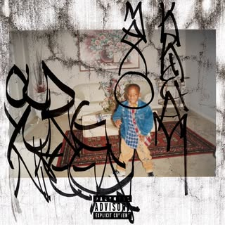

Prepared by Keyman for Maxo Kream
Maxo KreamPublishing & mechanical rights gap analysis — 249 recordings reviewed, 945,346,930 measured Spotify plays
Your writer name in label metadata: Emekwanem Ogugua Biosah Jr. (delivered in 10 spellings, plus the stage name “Maxo Kream”) · At BMI Songview: BIOSAH EMEKWANEM JR, IPI 00728975783, plus four further writer entries with no IPI · At The MLC: 10 writer records under your legal and stage names, one carrying your IPI · Primary publisher on the registered catalog: Songs of Universal · Sources: The MLC public search, BMI Songview, Deezer catalog and composer credits, Spotify. Registry data as at 12 September 2026.
Your core catalog has collection infrastructure behind it: an attributable publisher claim was identified on 125 of your compositions. The gaps are at the edges — 126 of the 249 recordings reviewed show an open writer share, a recording not attached to its work, or no work carrying your name, led by I <3 My Choppa.
Key findings
Exposure & usage evidence
Spotify plays read directly on 12 September 2026 for the 196 recordings we could resolve. These are usage counts recorded against your recordings; they are not entitlement figures and no royalty amount is implied.
Where your measured plays sit
Each recording is counted once, under its registration status. Hover a segment for its total.
Your most-played recordings
Spotify plays per recording, with its registration status. Hover a row for detail.
Publishing timeline
Your catalog by release year. Labels and ISRC registrants are shown as delivery context, taken from the releases themselves; what this analysis measures is the publishing side — whether each year's songs are registered, and which publisher or administrator claims name you. A claim on an older release reflects today's registrations, not the date any deal or administration began.
Registration status by release year
Recordings released each year, stacked by status. Hover a column for detail.
- 2026Persona Money Global / EMPIRE11 recordings released · 2,904,552 Spotify plays
- O.Y.N · 9 tracks · label: Persona Money Global / EMPIRE · ISRC registrant USUYG (EMPIRE) · 8 open
2 guest appearances — Mike Dimes, U-WARRIOR
Publishing claims naming youSONGS OF UNIVERSAL, INC. 1Open itemsNo MLC work identified 10 - 2025Stomp Down16 recordings released · 4,992,854 Spotify plays
- Cracc at 15 · 1 track · label: Stomp Down · ISRC registrant QM6MZ
- HIM (Original Motion Picture Soundtrack) · 1 track · label: Loma Vista Recordings · ISRC registrant USC4R · 1 open
14 guest appearances — 4batz, Anwar Carrots, Aylek$, Cartel Bo, Dice SoHo, Hanumankind
Publishing claims naming youSONGS OF UNIVERSAL, INC. 4Open itemsRegistered — you are not credited 4 · Your writer line — no claim for you 4 · No MLC work identified 3 · Registered — recording not attached 1 - 2024Stomp Down34 recordings released · 50,495,125 Spotify plays
- Personification · 14 tracks · label: Stomp Down · ISRC registrant QMDA6 · 1 open
- Eye Know · 1 track · label: Persona Money Gang · ISRC registrant QM6P4
- No Then You A Hoe · 1 track · label: Stomp Down · ISRC registrant QM4TX · 1 open
18 guest appearances — 03 Greedo, Big Tony, Brodie Fresh, Cartel Bo, Denzel Curry, Hoodlum
Publishing claims naming youSONGS OF UNIVERSAL, INC. 16Open itemsRegistered — you are not credited 5 · Your writer line — no claim for you 4 · No MLC work identified 10 - 2023Stomp Down17 recordings released · 45,519,831 Spotify plays
- Bonecrusher (feat. Key Glock) · 1 track · label: Persona Money Gang · ISRC registrant QMDA6 · 1 open
- Fatt Blacc Twins (feat. Bfb Da Packman) · 1 track · label: Stomp Down · ISRC registrant QM728 · 1 open
- Whatchamacallit (feat. Luh Tyler) · 1 track · label: Stomp Down · ISRC registrant QMBZ9
14 guest appearances — 03 Greedo, Bankrol Hayden, Bo Bundy, Cartel Bo, Curren$y, Guapo
Publishing claims naming youSONGS OF UNIVERSAL, INC. 2EMPIRE STRIKES FIRST 1ANNUITY SONGS 1Open itemsRegistered — you are not credited 2 · Your writer line — no claim for you 5 · No MLC work identified 6 · Registered — recording not attached 1 - 2022Big Persona/88 Classic/RCA Records16 recordings released · 27,497,025 Spotify plays
- WEIGHT OF THE WORLD (Deluxe) · 6 tracks · label: Big Persona/88 Classic/RCA Records · ISRC registrant USRC1 (RCA Records) · 6 open
10 guest appearances — BigXthaPlug, Cam Wallace, LilCJ Kasino, MELODOWNZ, MoneySign Suede, Mount Kimbie
Publishing claims naming youSONGS OF UNIVERSAL, INC. 1Open itemsRegistered — you are not credited 1 · Your writer line — no claim for you 13 · No MLC work identified 1 - 2021Big Persona/88 Classic/RCA Records26 recordings released · 91,554,849 Spotify plays
- WEIGHT OF THE WORLD (Deluxe) · 18 tracks · label: Big Persona/88 Classic/RCA Records · ISRC registrant USRC1 (RCA Records)
8 guest appearances — Cico P, Fat Nick, Philthy Rich, RetcH, Retch, Steib Boy Stretch
Publishing claims naming youSONGS OF UNIVERSAL, INC. 20WARNER-TAMERLANE PUBLISHING CORP. 1RESERVOIR 416 1Open itemsYour writer line — no claim for you 4 · No MLC work identified 1 - 2020Big Persona/88 Classic/RCA Records14 recordings released · 22,397,294 Spotify plays
14 guest appearances — 30 Deep Grimeyy, BL Double, Drakeo the Ruler, IDK, Mr. Lee713, OMB Bloodbath
Publishing claims naming youSONGS OF UNIVERSAL, INC. 3KOBALT MUSIC PUB AMERICA INC 2Open itemsRegistered — you are not credited 2 · Your writer line — no claim for you 7 · No MLC work identified 2 - 2019Big Persona/88 Classic/RCA Records30 recordings released · 183,955,945 Spotify plays
- Brandon Banks · 15 tracks · label: Big Persona/88 Classic/RCA Records · ISRC registrant USRC1 (RCA Records) · 2 open
- Drizzy Draco - A COLORS SHOW · 1 track · label: Big Persona/88 Classic/RCA Records · ISRC registrant USRC1 (RCA Records)
14 guest appearances — 03 Greedo, Boogotti Kasino, Bun B, Doeman, Dreamville, Fre$h
Publishing claims naming youSONGS OF UNIVERSAL, INC. 17ANNUITY SONGS 2THE ADMINISTRATION MP INC 1CREATE DIGITAL MUSIC 1713 MEDIA PUBLISHING 1Open itemsRegistered — you are not credited 4 · Your writer line — no claim for you 4 · No MLC work identified 2 · Registered — recording not attached 1 - 2018TSO Records / Maxo Kream20 recordings released · 82,986,437 Spotify plays
- Punken · 11 tracks · label: TSO Records / Maxo Kream · ISRC registrant USUYG (EMPIRE) · 1 open
9 guest appearances — AD, IDK, Lil Family, LilCJ Kasino, Lolife Blacc, Peewee Longway
Publishing claims naming youSONGS OF UNIVERSAL, INC. 9WARNER CHAPPELL - PAYDAY MUSIC PUBLISHING 1VELOCITY FUTURE COLLECTIONS 1STREAMCUT MEDIA, LLC 1Open itemsRegistered — you are not credited 5 · Your writer line — no claim for you 4 - 2017TSO Records / Maxo Kream16 recordings released · 338,878,535 Spotify plays
- Punken · 3 tracks · label: TSO Records / Maxo Kream · ISRC registrant TCA (TuneCore)
- Mars (feat. Lil Uzi Vert) · 1 track · label: TSO Records / Maxo Kream · ISRC registrant USUYG (EMPIRE)
12 guest appearances — $uicideboy$, Chris King, Cuz Lightyear, GYYPS, Jimmy Wopo, Paul Wall
Publishing claims naming youSONGS OF UNIVERSAL, INC. 3CREATE DIGITAL MUSIC 2WARNER CHAPPELL - PAYDAY MUSIC PUBLISHING 1Open itemsRegistered — you are not credited 4 · Your writer line — no claim for you 2 · No MLC work identified 4 - 2016TSO Records / Maxo Kream16 recordings released · 39,721,329 Spotify plays
- The Persona Tape · 13 tracks · label: Kream Clicc / TSO Music Group · ISRC registrant TCA (TuneCore)
3 guest appearances — Famous Dex, Fredo Santana, UnoTheActivist
Publishing claims naming youSONGS OF UNIVERSAL, INC. 13Open itemsYour writer line — no claim for you 3 - 2015TSO Records / Maxo Kream19 recordings released · 42,198,400 Spotify plays
- #Maxo187 · 15 tracks · label: TSO Records · ISRC registrant USUYG (EMPIRE) · 2 open
- Out The Door (feat. KEY!) - Single · 1 track · label: TSO Records · ISRC registrant USUYG (EMPIRE) · 1 open
- Shop - Single · 1 track · label: TSO Records
2 guest appearances — Da$H, LE$
Publishing claims naming youSONGS OF UNIVERSAL, INC. 14SONY/ATV TUNES LLC 1Open itemsAttached to someone else’s song 1 · Registered — you are not credited 1 · No MLC work identified 2 - 2013Self-released14 recordings released · 12,244,754 Spotify plays
- QuiccStrikes · 14 tracks · label: Maxo Kream · ISRC registrant TCA (TuneCore) · 3 open
Publishing claims naming youSONGS OF UNIVERSAL, INC. 12TUNECORE DIGITAL MUSIC 3Open itemsYour writer line — no claim for you 3
Your recordings
| Recording | ISRC | Plays | Status | Links |
|---|---|---|---|---|
| FTL Interlude Your release · Maxo Kream · #Maxo187 · 2015 Tested by: ISRC, writer name, artist name, BMI Songview Linked work N5124S “NON MUSICAL TRACK” · 0% of the work claimed · writers: NON MUSICAL · claims: no publisher claim · you are not on the writer line · 223,501 recordings attached to this work BMI work 30323873 “FTL INTERLUDE” · BMI 100% controlled · ISWC T9283273530 · writers: BIOSAH EMEKWANEM (BMI) · publishers: SONGS OF UNIVERSAL INC · you are on the writer line | USUYG1066074 | 397,978 | Attached to someone else’s song | Spotify · MLC N5124S |
| I <3 My Choppa (feat. Maxo Kream) - Remix Guest appearance · Tay-K, Maxo Kream · #SantanaWorld (+) · 2017 Tested by: ISRC, writer name, artist name Composer in label metadata: Aaron West Jr, Emekwanem Biosah, Taymor McIntyre Linked work IC0QV5 “I LOVE MY CHOPPA” · 100% of the work claimed · writers: AARON WEST, TAYMOR TRAVON MCINTYRE · claims: CREATE SONGS PUBLISHING 25% (for TAYMOR TRAVON MCINTYRE); CREATE SONGS PUBLISHING 25% (for TAYMOR TRAVON MCINTYRE); ANNUITY SONGS 50% (for AARON WEST) · you are not on the writer line | USQX91702637 | 231,858,980 | Registered — you are not credited | Spotify · MLC IC0QV5 |
| Pictures Guest appearance · $uicideboy$, Maxo Kream · KILL YOURSELF Part XV: The Coast of Ashes Saga · 2017 Tested by: ISRC, writer name, artist name Composer in label metadata: Aristos Petrou, Scott Arceneaux Jr Linked work PA3GQO “PICTURES (FEAT. MAXO KREAM)” · 100% of the work claimed · writers: ARISTOS PETROU, SCOTT ANTHONY ARCENEAUX JR · claims: KOBALT MUSIC PUB AMERICA INC 100% (for ARISTOS PETROU, SCOTT ANTHONY ARCENEAUX JR) · you are not on the writer line | QM8DG1701482 | 25,193,957 | Registered — you are not credited | Spotify · MLC PA3GQO |
| Opp or 2 (with Maxo Kream) Guest appearance · That Mexican OT, Maxo Kream · Lonestar Luchador · 2023 Tested by: ISRC, writer name, artist name Composer in label metadata: Frederikus van Workum, Jonny Shipes, Maxo Kream, Nicholas Luscombe, Virgil Gazca, Young Hollywood Linked work OC78HZ “OPP OR 2” · 66% of the work claimed · writers: VIRGIL GAZCA, JONATHAN R SHAPIRO, FREEK VAN WORKUM, ELIJAH SARRAGA, NICK LUSCOMBE · claims: KOBALT MUSIC PUB AMERICA INC 4.16% (for JONATHAN R SHAPIRO); KOBALT MUSIC PUB AMERICA INC 12.5% (for JONATHAN R SHAPIRO); PRINCESS LOLA TWO MUSIC 8.33% (for NICK LUSCOMBE); PRINCESS LOLA TWO MUSIC 8.33% (for FREEK VAN WORKUM); YOUNG HOLLYWOOD MUSIC GROUP 16.68% (for ELIJAH SARRAGA); SONGS OF UNIVERSAL, INC. 16% · you are not on the writer line | USUG12305988 | 19,203,958 | Registered — you are not credited | Spotify · MLC OC78HZ |
| Out The Door Your release · Maxo Kream, KEY! · Out The Door (feat. KEY!) - Single · 2015 Tested by: writer name, artist name, recording linkage by artist name Linked work OV8Z69 “OUT THE DOOR” · 100% of the work claimed · writers: SHENANDI, SCOTT MANN · claims: SHEN LUEY 50%; SHENANZHU LLC 50% · you are not on the writer line | USUYG1089464 | 4,099,079 | Registered — you are not credited | Spotify · MLC OV8Z69 |
| You Not Rich Guest appearance · Cartel Bo, Maxo Kream · CHAPO · 2024 Tested by: writer name, artist name, recording linkage by artist name Linked work YP1P8I “YOU NOT RICH” · 100% of the work claimed · writers: DIEGO AVENDANO, WARREN BROWN, BRANDEN COX, GAVIN MOORMAN · claims: CREATE DIGITAL MUSIC 50%; MIXED METAPHOR MUSIC 15%; SENTRIC MUSIC LIMITED 10% (for GAVIN MOORMAN); MIXED METAPHOR MUSIC 15%; REGALIAS DIGITALES 10% · you are not on the writer line | USWB12403480 | 514,432 | Registered — you are not credited | Spotify · MLC YP1P8I |
| Body Guest appearance · Jimmy Wopo, Maxo Kream · Jordan Kobe · 2017 Tested by: ISRC, writer name, artist name Linked work BVCJ3D “BODY” · 50% of the work claimed · writers: JAMES HERRON, JURRELL W WALKER · claims: SONGTRUST BLVD 50% · you are not on the writer line | TCADA1728509 | 251,002 | Registered — you are not credited | Spotify · MLC BVCJ3D |
| Exotic Pop Guest appearance · Southside Hoodlum, Maxo Kream · Exotic Pop · 2024 Tested by: writer name, artist name, recording linkage by artist name Composer in label metadata: Emekwanem Biosah Jr., MATTHEW RAY ALCORTA Linked work ET8OPK “EXOTIC POP” · 100% of the work claimed · writers: MATTHEW RAY ALCORTA · claims: RECORD FINANCIAL PUBLISHING 100% (for MATTHEW RAY ALCORTA) · you are not on the writer line | QM4TW2416093 | 196,709 | Registered — you are not credited | Spotify · MLC ET8OPK |
| Self Discipline Guest appearance · Mg Lil Bubba, Maxo Kream · Self Discipline · 2025 Tested by: writer name, artist name, recording linkage by artist name, BMI Songview Linked work SV3LVK “SELF DISCIPLINE” · 100% of the work claimed · writers: MARCRISLIN BARKSDALE · claims: MISS LINK MUSIC 100% · you are not on the writer line BMI work 78766478 “SELF DISCIPLINE” · BMI 25% controlled · ISWC T3361121673 · writers: BARKSDALE MARCRISLIN (NS), BIOSAH EMEKWANEM (NS), JACOBS JOSHUA DEON (BMI), PORTER QUINTELL (NS) · publishers: SONGTRUST BLVD · you are on the writer line | QZTGW2403532 | 145,090 | Registered — you are not credited | Spotify · MLC SV3LVK |
| Last Seen Balling Guest appearance · King Hendrick$, Maxo Kream · Mob America · 2025 Tested by: writer name, artist name, recording linkage by artist name Composer in label metadata: Koshua Hendricks Linked work LT18JL “LAST SEEN BALLING” · 100% of the work claimed · writers: KOSHUA QUANZEL HENDRICKS · claims: TUNECORE PUBLISHING 100% (for KOSHUA QUANZEL HENDRICKS) · you are not on the writer line | QZZ7X2436124 | 108,928 | Registered — you are not credited | Spotify · MLC LT18JL |
| Big B's Guest appearance · LoLife Blacc, Maxo Kream · Big B's · 2024 Tested by: writer name, artist name, recording linkage by artist name Composer metadata not captured (release not on Deezer) Linked work BD6TQJ “BIG B'S” · 100% of the work claimed · writers: JABRAIL RICHARDSON · claims: SONGTRUST BLVD 100% (for JABRAIL RICHARDSON) · you are not on the writer line | not captured | 104,722 | Registered — you are not credited | Spotify · MLC BD6TQJ |
| Say That Shyt Guest appearance · BL Double, Maxo Kream · The Blitztape Messiah · 2020 Tested by: writer name, artist name, recording linkage by artist name Composer metadata not captured (release not on Deezer) Linked work SB1JPK “SAY THAT SHYT” · 100% of the work claimed · writers: CHRISTOPHER JAMES GRIFFIN · claims: LABEL HUB MUSIC PUBLISHING 100% (for CHRISTOPHER JAMES GRIFFIN) · you are not on the writer line | not captured | 2,466 | Registered — you are not credited | Spotify · MLC SB1JPK |
| 25 Lighters Guest appearance · Bo Bundy, Maxo Kream · The Lonestar (Side B) · 2023 Tested by: ISRC, writer name, artist name Composer in label metadata: Jorge Frias Linked work 2L6YMF “LIGHTERS” · 100% of the work claimed · writers: JORGE ROLANDO FRIAS · claims: RH Publishing 100% (for JORGE ROLANDO FRIAS) · you are not on the writer line | QZ9QQ2300022 | not on Spotify | Registered — you are not credited | MLC 2L6YMF |
| 50 Pacc Guest appearance · Lolife Blacc, Maxo Kream, Krazy Blacx · LoLife 2 · 2018 Tested by: writer name, artist name, recording linkage by artist name Linked work 5C52BF “50 PACC” · 100% of the work claimed · writers: JABRAIL RICHARDSON · claims: SONGTRUST BLVD 100% (for JABRAIL RICHARDSON) · you are not on the writer line | TCADO1862387 | not on Spotify | Registered — you are not credited | MLC 5C52BF |
| Ain't No Fallin Off (feat. Maxo Kream) Guest appearance · Yung LB, Maxo Kream · Ain't No Fallin Off (feat. Maxo Kream) · 2024 Tested by: ISRC, writer name, artist name Composer in label metadata: David Teel Linked work AY6XJ8 “AIN'T NO FALLIN OFF” · 10% of the work claimed · writers: OSCAR SANCHEZ · claims: REGALIAS DIGITALES 10% (for OSCAR SANCHEZ) · you are not on the writer line | QZFZ72437932 | not on Spotify | Registered — you are not credited | MLC AY6XJ8 |
| AOL (feat. Maxo Kream) Guest appearance · Ph4de, Maxo Kream · VENDETT4 · 2019 Tested by: writer name, artist name, recording linkage by artist name Composer in label metadata: Landon Suggs Linked work AA3138 “AOL” · 50% of the work claimed · writers: LANDON REID SUGGS, AARON DANIEL MUSSLEWHITE · claims: SONGTRUST AVE 50% (for LANDON REID SUGGS, AARON DANIEL MUSSLEWHITE) · you are not on the writer line | QM4TX1959047 | not on Spotify | Registered — you are not credited | MLC AA3138 |
| Back Door (feat. Maxo Kream) Guest appearance · LilCJ Kasino, Maxo Kream · Murda Worth Music · 2018 Tested by: writer name, artist name, recording linkage by artist name Linked work BA44OQ “BACK DOOR” · 50% of the work claimed · writers: INCONNU COMPOSITEUR AUTEUR, MALIK JUANYAI HOWARD, EMEKWANEM BOSIAH JR · claims: ANNUITY SONGS 50% (for MALIK JUANYAI HOWARD, INCONNU COMPOSITEUR AUTEUR, EMEKWANEM BOSIAH JR) · you are not on the writer line | QM24S1811041 | not on Spotify | Registered — you are not credited | MLC BA44OQ |
| Bout It Guest appearance · Trakksounds, Maxo Kream, Xavier Wulf · Bout It (feat. Maxo Kream & Xavier Wulf) · 2017 Tested by: writer name, artist name, recording linkage by artist name Composer in label metadata: Xavier Andrew Beard Linked work BD287T “BOUT IT” · 7.5% of the work claimed · writers: XAVIER ANDREW BEARD · claims: EMPIRE SF 7.5% · you are not on the writer line | USUYG1135795 | not on Spotify | Registered — you are not credited | MLC BD287T |
| Checc It Out (feat. UnoTheActivist & Maxo Kream) Guest appearance · Young Lito, Maxo Kream, UnoTheActivist · Checc It Out (feat. UnoTheActivist & Maxo Kream) · 2018 Tested by: writer name, artist name, recording linkage by artist name Composer in label metadata: Young Lito Linked work CC77PZ “CHECC IT OUT” · 17% of the work claimed · writers: TROY VASHON DONTE LANE, INCONNU COMPOSITEUR AUTEUR · claims: COMPOSITIONS OF KOZE 17% (for INCONNU COMPOSITEUR AUTEUR, TROY VASHON DONTE LANE) · you are not on the writer line | USLD91712545 | not on Spotify | Registered — you are not credited | MLC CC77PZ |
| Exotic Pop (Screwed) Guest appearance · Hoodlum, Maxo Kream, saintmixedit · Purple In America (Screwed) · 2024 Tested by: ISRC, writer name, artist name Composer in label metadata: Emekwanem Biosah Jr., MATTHEW RAY ALCORTA Linked work ET8OPK “EXOTIC POP” · 100% of the work claimed · writers: MATTHEW RAY ALCORTA · claims: RECORD FINANCIAL PUBLISHING 100% (for MATTHEW RAY ALCORTA) · you are not on the writer line | QM6N22486672 | not on Spotify | Registered — you are not credited | MLC ET8OPK |
| From The Blocc (feat. Maxo Kream) Guest appearance · AD, Maxo Kream · Regional Departure · 2018 Tested by: ISRC, writer name, artist name Composer in label metadata: AD Linked work FB11H5 “FROM THE BLOCC” · 100% of the work claimed · writers: WRITER UNKNOWN, ARMAND DOUGLAS · claims: VIP Access Publishing 50%; MAKINALLTHEHITSSS PUBLISHING 50% (for WRITER UNKNOWN) · you are not on the writer line | USLD91714907 | not on Spotify | Registered — you are not credited | MLC FB11H5 |
| HopScotch (feat. Maxo Kream) Guest appearance · Robbie B, Maxo Kream · Somewhere in Texas · 2022 Tested by: writer name, artist name, recording linkage by artist name Composer in label metadata: Robbie E Bolden Linked work H17599 “HOPSCOTCH” · 100% of the work claimed · writers: ROBERT W SHAKESPEARE · claims: UNIVERSAL - SONGS OF POLYGRAM INTERNATIONAL INC 100% (for ROBERT W SHAKESPEARE) · you are not on the writer line | QZK6H2263651 | not on Spotify | Registered — you are not credited | MLC H17599 |
| In Love Wit My Money Guest appearance · Mr. Lee713, Da Mixbreed, Maxo Kream · Twenty Years Of Power · 2020 Tested by: writer name, artist name, recording linkage by artist name Composer in label metadata: CHAD M NEWTON, Leroy Williams Linked work IC3PLV “IN LOVE WIT MY MONEY” · 90% of the work claimed · writers: LEROY WILLIAMS JR, CHAD M NEWTON · claims: MUSIC ACCESS INC 40%; SONGS OF LW3 50% (for LEROY WILLIAMS JR) · you are not on the writer line | US6YC2002650 | not on Spotify | Registered — you are not credited | MLC IC3PLV |
| Mary X Molly Guest appearance · Dice SoHo, Maxo Kream · Icey Life · 2025 Tested by: writer name, artist name, recording linkage by artist name Linked work MV2UA9 “MARY X MOLLY” · 25% of the work claimed · writers: KEVIN ORDONEZ · claims: WORKS OF IPC 25% · you are not on the writer line | USXQS2542123 | not on Spotify | Registered — you are not credited | MLC MV2UA9 |
| OG Gas Guest appearance · Swagdot, Maxo Kream · Free Longway · 2025 Tested by: writer name, artist name, recording linkage by artist name Composer in label metadata: Cedric T Goodman, Quincy WILLIAMS Linked work OC937E “OG GAS” · 100% of the work claimed · writers: INCONNU COMPOSITEUR AUTEUR, CEDRIC GOODMAN · claims: VELOCITY FUTURE COLLECTIONS 50% (for CEDRIC GOODMAN); ANNUITY SONGS 50% (for INCONNU COMPOSITEUR AUTEUR) · you are not on the writer line | QM7BH2400019 | not on Spotify | Registered — you are not credited | MLC OC937E |
| Outer Space (feat. Maxo Kream) Guest appearance · Young Blacc, Maxo Kream · Outer Space (feat. Maxo Kream) · 2019 Tested by: writer name, artist name, recording linkage by artist name Composer in label metadata: LaRon Anthony Williams Linked work OE2DCK “OUTER SPACE FEAT MAXO KREAM” · 15% of the work claimed · writers: LARON ANTHONY WILLIAMS · claims: BlaccOut Music 15% (for LARON ANTHONY WILLIAMS) · you are not on the writer line | QM6N21940786 | not on Spotify | Registered — you are not credited | MLC OE2DCK |
| Racks (feat. Maxo Kream) Guest appearance · Lil Family, Maxo Kream · Filthy Savage · 2018 Tested by: ISRC, writer name, artist name Composer in label metadata: Emekwanem Biosah, Marcus Loring Linked work RV8IPC “RACKS” · 50% of the work claimed · writers: 2 MILLY, LIL OCK, MICHAEL PETROLAWICZ · claims: CONCORD MUSIC GROUP, INC. DBA CONCORD SOUNDS 25%; CONCORD MUSIC GROUP, INC. DBA CONCORD SOUNDS 25% · you are not on the writer line | QZES81821461 | not on Spotify | Registered — you are not credited | MLC RV8IPC |
| Right Now (feat. Maxo Kream) Guest appearance · Gino Marley, Maxo Kream · 4th Floor · 2019 Tested by: writer name, artist name, recording linkage by artist name, BMI Songview Linked work RC7DIN “RIGHT NOW” · 100% of the work claimed · writers: MICHAEL WILLIAMS, TY NOAM FRANKEL · claims: ENGINE CO 30 MUSIC PUBLISHING 100% (for TY NOAM FRANKEL, MICHAEL WILLIAMS) · you are not on the writer line BMI work 29179820 “RIGHT NOW” · BMI 75% controlled · ISWC not assigned · writers: BIOSAH EMEKWANEM JR (BMI), GINO MARLEY (NS), GLOVER DEMETRIE (BMI) · publishers: SONGS OF UNIVERSAL INC · you are on the writer line | QZFL21812052 | not on Spotify | Registered — you are not credited | MLC RC7DIN |
| Southside Kings (feat. Maxo Kream) Guest appearance · Doeman, Maxo Kream · Southside Kings (feat. Maxo Kream) · 2019 Tested by: writer name, artist name, recording linkage by artist name Composer in label metadata: Doeman Linked work SA2WWO “SOUTHSIDE KINGS” · 100% of the work claimed · writers: JOSEPH GONZALES · claims: GROW YOUR OWN MUSIC 100% (for JOSEPH GONZALES) · you are not on the writer line | USLD91717028 | not on Spotify | Registered — you are not credited | MLC SA2WWO |
| Oh Wow...Swerve (with J. Cole feat. Zoink Gang, KEY! & Maxo Kream) Guest appearance · Dreamville, J. Cole, Zoink Gang, KEY!, Maxo Kream · Revenge Of The Dreamers III · 2019 Tested by: writer name, artist name, recording linkage by artist name, BMI Songview Composer metadata not captured (release not on Deezer) Linked work OD0N5E “OH WOW... SWERVE” · 97.5% of the work claimed · writers: EMEKWANEM OGUGUA BIOSAH JR., CHRISTOPHER SMITH JR., KEANU DEAN TORRES, JERMAINE COLE, SIMMIE SIMMS, ANDRE C ROBERTSON, DESTIN CHOICE ROUTE, MIKE HAYDN, AKEEM HAYES, ARMANDO SHALA, MARQUIS DEVONE WHITTAKER · claims: RESERVOIR 416 1.25%; SONY/ATV SONGS LLC 2.5% (for KEANU DEAN TORRES); CONCORD MUSIC GROUP, INC. DBA CONCORD SOUNDS 15%; EMPIRE SF 5% (for AKEEM HAYES); CONCORD MUSIC GROUP, INC. DBA CONCORD SOUNDS 7.5%; RESERVOIR 416 1.25%; SONGS OF UNIVERSAL, INC. 32.5% (for MARQUIS DEVONE WHITTAKER, KEANU DEAN TORRES, DESTIN CHOICE ROUTE, AKEEM HAYES); SONY/ATV SONGS LLC 2.5% (for KEANU DEAN TORRES); WARNER CHAPPELL - PAYDAY MUSIC PUBLISHING 25%; ANNUITY SONGS 5% · you are on the writer line Title match work OD4H5C “OH WOW...SWERVE FEAT. ZOINK GANG KEY! & MAXO KREAM” · 100% of the work claimed · writers: CHRISTOPHER SMITH JR, EMEKWANEM BIOSAH, JUSTIN MATTHEW BRYANT, JERMAINE L COLE, DESTIN CHOICE ROUTE, KEANU DEAN TORRES, WRITER UNKNOWN · claims: KOBALT MUSIC PUB AMERICA INC 2.5% (for CHRISTOPHER SMITH JR); justin bryant 97.5% · you are on the writer line BMI work 31030719 “OH WOW SWERVE” · BMI 77.50% controlled · ISWC T9294780953 · writers: BIOSAH EMEKWANEM JR (BMI), BRYANT JUSTIN MATTHEW (BMI), COLE JERMAINE L (BMI), HAYES AKEEM DOUGLAS (ASCAP), ROBERTSON ANDRE (NS), ROUTE DESTIN (BMI), SHALA ARMANDO (GEMA), SIMS SIMMIE (BMI), SMITH CHRISTOPHER JR (BMI), TORRES KEANU DEAN (APRA), WHITTAKER MARQUIS DEVONE (BMI) · publishers: KEANU BEATS PUBLISHING, PAYDAY EMPIRE MUSIC, RESERVOIR 416, ROUTE WAY LLC, SONGS OF UNIVERSAL INC, SONY/ATV SONGS LLC, ZERO FATIGUE LLC, SONGS OF KOBALT MUSIC PUBLISHING · you are on the writer line | not captured | 28,118,361 | Your writer line — no claim for you | Spotify · MLC OD0N5E · MLC OD4H5C |
| The Relays (feat. Travis Scott) Your release · Maxo Kream, Travis Scott · Brandon Banks · 2019 Tested by: ISRC, writer name, artist name Composer in label metadata: Afolabi Osinulu, Barry White, Bernard Freeman, Chad Butler, Christopher Torpey, David L. Doman, Emekwanem Ogugua Biosah, Jacques Webster, Josh White Linked work TD1KEV “THE RELAYS” · 38.2% of the work claimed · writers: AFOLABI OSINULU, EMEKWANEM BIOSAH, CHAD L BUTLER, BERNARD JAMES FREEMAN, JACQUES WEBSTER, BARRY EUGENE WHITE, MICHAEL G DEAN · claims: UNIVERSAL MUSIC-Z TUNES 5% (for CHAD L BUTLER, BERNARD JAMES FREEMAN); UNICHAPPELL MUSIC, INC. 3% (for BARRY EUGENE WHITE); UNICHAPPELL MUSIC, INC. 9% (for BARRY EUGENE WHITE); SONGTRUST BLVD 2% (for AFOLABI OSINULU); UNIVERSAL MUSIC-Z TUNES 5% (for CHAD L BUTLER, BERNARD JAMES FREEMAN); SONGS OF UNIVERSAL, INC. 14.2% · you are on the writer line Title match work TC6OYL “THE RELAYS” · 10% of the work claimed · writers: JACQUES WEBSTER, MAXO KREAM, CHRISTOPHER S TORPEY · claims: WC MUSIC CORP. 2.5% (for CHRISTOPHER S TORPEY, CHRISTOPHER S TORPEY); WC MUSIC CORP. 5% (for CHRISTOPHER S TORPEY, CHRISTOPHER S TORPEY); WC MUSIC CORP. 2.5% (for CHRISTOPHER S TORPEY, CHRISTOPHER S TORPEY) · you are on the writer line | USRC11900144 | 14,996,012 | Your writer line — no claim for you | Spotify · MLC TD1KEV · MLC TC6OYL |
| OFF THE PORCH (feat. BigXthaPlug & Maxo Kream) Guest appearance · Mike Dimes, BigXthaPlug, Maxo Kream · TEXAS BOY · 2023 Tested by: ISRC, writer name, artist name, BMI Songview Composer in label metadata: Ben Poret, BigXthaPlug, Emekwanem Ogugua, Maximilian McFarlin, Michael Goode Jr., Tzurel Halfon Linked work OD3CQS “OFF THE PORCH” · 53.33% of the work claimed · writers: MICHAEL GOOD JR., XAVIER LANDUM, MAXIMILLIAN MCFARLIN, BEN PORET, TZUREL HALFON, EMEKWANEM BIOSAH JR. · claims: SONY/ATV SONGS LLC 20% (for XAVIER LANDUM); EMPIRE SF 16.67%; EMPIRE STRIKES FIRST 16.66% · you are on the writer line BMI work 63951653 “OFF THE PORCH” · BMI 53.89% controlled · ISWC not assigned · writers: BIOSAH EMEKWANEM JR (BMI), GOODE MICHAEL C JR (ASCAP), HALFON TZUREL (BMI), LANDUM XAVIER (BMI), MCFARLIN MAXIMILLIAN (NS), PORET BEN PERRIN (ASCAP) · publishers: BIGXTHAPLUG PUBLISHING, PAQ PAQ SONGS · you are on the writer line | USSM12301531 | 10,798,196 | Your writer line — no claim for you | Spotify · MLC OD3CQS |
| SET IT (with Maxo Kream) Guest appearance · Denzel Curry, Maxo Kream · King Of The Mischievous South Vol. 2 · 2024 Tested by: ISRC, writer name, artist name Composer in label metadata: D. Curry, D. Hill, E. Biosah Jr., J. Ortiz, J. Richard Linked work S50MG2 “SET IT (WITH MAXO KREAM)” · 85% of the work claimed · writers: JACQUES RICHARD, JORDAN ORTIZ, DENZEL RAE DON CURRY, DERRICK HILL, EMEKWANEM OGUGUA BIOSAH JR. · claims: SONY/ATV SONGS LLC 5%; KOBALT MUSIC PUB AMERICA INC 25%; CONCORD MUSIC GROUP, INC. DBA CONCORD COPYRIGHTS 15%; SONY/ATV SONGS LLC 25%; CONCORD MUSIC GROUP, INC. DBA CONCORD COPYRIGHTS 15% · you are on the writer line Linked work S60M5R “SET IT” · 37.5% of the work claimed · writers: NELIDA YEW, DENZEL RAE DON CURRY, EMEKWANEM BIOSAH, JORDAN ORTIZ, EMEKWANEM OGUGUA BIOSAH, DENZEL RAE DON CURRY, NELIDA YEW, JACQUES EVENTZ RICHARD · claims: SONY/ATV SONGS LLC 12.5% (for JACQUES EVENTZ RICHARD); SONY/ATV SONGS LLC 25% (for NELIDA YEW, JACQUES EVENTZ RICHARD) · you are on the writer line Title match work S815CH “SET IT” · 27.5% of the work claimed · writers: EMEKWANEM BIOSAH, DERRICK HILL, JORDAN ORTIZ, JACQUES EVENTZ RICHARD, DENZEL RAE DON CURRY · claims: SONGS OF UNIVERSAL, INC. 15% (for EMEKWANEM BIOSAH); SONY/ATV SONGS LLC 12.5% · you are on the writer line | USC4R2443035 | 10,627,280 | Your writer line — no claim for you | Spotify · MLC S50MG2 · MLC S60M5R · MLC S815CH |
| Safehouse (Remix) Guest appearance · BigXthaPlug, Maxo Kream · Safehouse (Remix) · 2022 Tested by: ISRC, writer name, artist name, BMI Songview Composer in label metadata: Baker Yung, Ivan Ariel Tagle, Xavier Landum Linked work SB88SR “SAFEHOUSE REMIX” · 35% of the work claimed · writers: BAKER YUNG-PUB DESIGNEE, XAVIER LANDUM, IVAN ARIEL TAGLE, EMEKWANEM BIOSAH JR. · claims: SONY/ATV SONGS LLC 35% (for XAVIER LANDUM) · you are on the writer line Linked work SB81HC “SAFEHOUSE” · 75% of the work claimed · writers: BAKER YUNG, IVAN ARIEL TAGLE, BEN MARI-PUB DESIGNEE, BAKER YUNG-PUB DESIGNEE, XAVIER LANDUM · claims: SONY/ATV SONGS LLC 50% (for XAVIER LANDUM); SONGTRUST BLVD 25% (for IVAN ARIEL TAGLE) · you are not on the writer line Linked work SB82Y1 “SAFEHOUSE REMIX (FEAT. MAXO KREAM)” · 50% of the work claimed · writers: BIGX THAPLUG, IVAN ARIEL TAGLE, SAMUEL SOLIS · claims: SONGTRUST BLVD 25% (for IVAN ARIEL TAGLE); MISS LINK MUSIC 25% · you are not on the writer line BMI work 58703340 “SAFEHOUSE REMIX FEAT MAXO KREAM” · BMI 92.50% controlled · ISWC T3219637164 · writers: BIOSAH EMEKWANEM (BMI), LANDUM XAVIER (BMI), TAGLE IVAN ARIEL (BMI), YUNG BAKER (BMI) · publishers: BIGXTHAPLUG PUBLISHING, THE BAKERY CHRONICLES, TRILL PROPHET BEN MARI PUBLISHING · you are on the writer line | QZNMW2225286 | 10,263,305 | Your writer line — no claim for you | Spotify · MLC SB88SR · MLC SB81HC · MLC SB82Y1 |
| Work Your release · Maxo Kream · Punken · 2018 Tested by: writer name, artist name, recording linkage by artist name, BMI Songview Linked work WB38JK “WORK” · 100% of the work claimed · writers: BRANDEN DION MCNAIR, EMEKWANEM OGUGUA BIOSAH JR., WILDERNESS WILDERNESS · claims: WARNER CHAPPELL - PAYDAY MUSIC PUBLISHING 25% (for BRANDEN DION MCNAIR); SONGS OF UNIVERSAL, INC. 50%; SONGTRUST BLVD 25% · you are on the writer line Linked work WV96X2 “WORK” · 100% of the work claimed · writers: PARRISH BROWN · claims: TUNECORE DIGITAL MUSIC 100% (for PARRISH BROWN) · you are not on the writer line BMI work 29391255 “WORK” · BMI 75% controlled · ISWC T9279722531 · writers: BIOSAH EMEKWANEM JR (BMI), MCNAIR BRANDEN DION (SESAC), TEEJ (BMI) · publishers: SONGS OF UNIVERSAL INC, SONGTRUST BLVD · you are on the writer line | USUYG1173529 | 4,267,391 | Your writer line — no claim for you | Spotify · MLC WB38JK · MLC WV96X2 |
| THE VISION (feat. Anderson .Paak) Your release · Maxo Kream, Anderson .Paak · WEIGHT OF THE WORLD (Deluxe) · 2022 Tested by: writer name, artist name, recording linkage by artist name Composer in label metadata: Afolabi Osinulu, Brandon Anderson, Emekwanem Ogugua Biosah Linked work TA4E23 “THE VISION” · 100% of the work claimed · writers: BRANDON PAAK ANDERSON, AFOLABI OSINULU, EMEKWANEM BIOSAH JR · claims: WARNER GEO MET RIC MUSIC 24.75% (for BRANDON PAAK ANDERSON); SONGS OF UNIVERSAL, INC. 25%; WARNER GEO MET RIC MUSIC 0.25% (for BRANDON PAAK ANDERSON); SONGTRUST BLVD 50% · you are on the writer line | USRC12201909USRC12201910 | 3,863,249 | Your writer line — no claim for you | Spotify · MLC TA4E23 |
| MORAL Guest appearance · IDK, Maxo Kream · IDK & FRIENDS :) · 2018 Tested by: writer name, artist name, recording linkage by artist name Composer in label metadata: IDK Linked work MA883M “MORAL” · 80% of the work claimed · writers: SIMON SCHRANZ, KREAM MAXO, JASON AARON MILLS · claims: SONY/ATV SONGS LLC 15% (for JASON AARON MILLS); KOBALT MUSIC PUB AMERICA INC 50%; SONY/ATV SONGS LLC 15% (for JASON AARON MILLS) · you are on the writer line | USLD91716154 | 3,753,451 | Your writer line — no claim for you | Spotify · MLC MA883M |
| JIGGA DAME Your release · Maxo Kream · WEIGHT OF THE WORLD (Deluxe) · 2022 Tested by: writer name, artist name, recording linkage by artist name Composer in label metadata: Anthony Woart, Jr., Diego Avendano, Emekwanem Ogugua Biosah, Joel Banks, Taylor Banks Linked work JB92I0 “JIGGA DAME” · 50% of the work claimed · writers: ANTHONY TOO JR WOART, JOEL BANKS, DIEGO JAVIER AVENDANO, EMEKWANEM OGUGUA BIOSAH JR., TAYLOR BANKS · claims: SONY/ATV SOUNDS LLC 6.75%; SONY/ATV SONGS LLC 11.5% (for TAYLOR BANKS, JOEL BANKS); SONY/ATV SONGS LLC 11.5% (for TAYLOR BANKS, JOEL BANKS); SONY/ATV SOUNDS LLC 6.75% (for ANTHONY TOO JR WOART); MIXED METAPHOR MUSIC 13.5% (for DIEGO JAVIER AVENDANO, TAYLOR BANKS) · you are on the writer line | USRC12201728USRC12201729 | 3,652,894 | Your writer line — no claim for you | Spotify · MLC JB92I0 |
| 8 Figures Your release · Maxo Kream · Brandon Banks · 2019 Tested by: writer name, artist name, recording linkage by artist name Composer in label metadata: Aston Harris, Christina Gandy-Rodgers, David L. Doman, Eliot Dean Baker, Emekwanem Ogugua Biosah, MIKE DEAN Linked work 8A2RJD “8 FIGURES” · 84% of the work claimed · writers: DAVID L DOMAN, CHRISTINA GANDY, ELIOT DEAN BAKER, APEX MARTIN, MICHAEL G DEAN, EMEKWANEM BIOSAH, AFOLABI OSINULU · claims: SONY/ATV SONGS LLC 21.85%; KOBALT MUSIC PUB AMERICA INC 0.63% (for DAVID L DOMAN); KOBALT MUSIC PUB AMERICA INC 3%; KOBALT MUSIC PUB AMERICA INC 24.37% (for DAVID L DOMAN); SONY/ATV SONGS LLC 1.15%; SONGS OF UNIVERSAL, INC. 33% · you are on the writer line | USRC11901947 | 3,587,134 | Your writer line — no claim for you | Spotify · MLC 8A2RJD |
| Crime Stoppers Guest appearance · Drakeo the Ruler, 03 Greedo, Maxo Kream · Free Drakeo · 2020 Tested by: writer name, artist name, recording linkage by artist name Composer in label metadata: 03 Greedo Linked work CC0SKP “CRIME STOPPERS” · 58.33% of the work claimed · writers: DARRELL WAYNE CALDWELL, KREAM MAXO, 03 GREEDO · claims: REGALIAS DIGITALES 25%; FETCH PUBLISHING 33.33% (for DARRELL WAYNE CALDWELL) · you are on the writer line | USUYG1299659 | 3,285,350 | Your writer line — no claim for you | Spotify · MLC CC0SKP |
| Made Me Everything Pt. 2 (feat. Maxo Kream) Guest appearance · TOBi, Maxo Kream · Made Me Everything Pt. 2 (feat. Maxo Kream) · 2020 Tested by: writer name, artist name, recording linkage by artist name, BMI Songview Composer in label metadata: Alex Goose, Emekwanem Ogugua Biosah, Eothen Alapatt, Lasanna "ACE" Harris, Oluwatobi Ajibolade Linked work MA28R1 “MADE ME EVERYTHING PT. 2” · 59.74% of the work claimed · writers: LASANNA HARRIS, CHARLES S AMOS, EMEKWANEM BIOSAH, OLUWATOBI AJIBOLADE, TONY MILLEN, ALEX GOOSE · claims: WC MUSIC CORP. 21.87% (for OLUWATOBI AJIBOLADE); HIPGNOSIS BEATS 10.94% (for ALEX GOOSE); HIPGNOSIS BEATS 10.93% (for ALEX GOOSE); EMPIRE STRIKES FIRST 16% · you are on the writer line BMI work 48949322 “MADE ME EVERYTHING PT 2” · BMI 50.37% controlled · ISWC not assigned · writers: AJIBOLADE OLUWATOBI (SOCAN), AMOS CHARLES S (ASCAP), BIOSAH EMEKWANEM JR (BMI), GOOSE ALEX (NS), HARRIS LASANNA (BMI), MILLEN TONY (NS) · publishers: HIPGNOSIS BEATS, LOVE FUZZ, SONGS BY TUMA HARRIS · you are on the writer line | USRC12003944 | 3,008,042 | Your writer line — no claim for you | Spotify · MLC MA28R1 |
| BULLETPROOF Guest appearance · IDK, Denzel Curry, Maxo Kream · IDK & FRIENDS 2 (Basketball County Soundtrack) · 2020 Tested by: writer name, artist name, recording linkage by artist name, BMI Songview Composer in label metadata: IDK Linked work BA6EE4 “BULLETPROOF” · 85% of the work claimed · writers: MICHAEL JOHN MULE, ISAAC JOHN D DE BONI, EMEKWANEM OGUGUA BIOSAH JR., DENZEL RAE DON CURRY, JASON AARON MILLS · claims: SONY/ATV SONGS LLC 15% (for JASON AARON MILLS); CONCORD MUSIC GROUP, INC. DBA CONCORD COPYRIGHTS 20% (for ISAAC JOHN D DE BONI, MICHAEL JOHN MULE); CONCORD MUSIC GROUP, INC. DBA CONCORD COPYRIGHTS 7.5%; CONCORD MUSIC GROUP, INC. DBA CONCORD COPYRIGHTS 10% (for ISAAC JOHN D DE BONI); CONCORD MUSIC GROUP, INC. DBA CONCORD COPYRIGHTS 10% (for MICHAEL JOHN MULE); CONCORD MUSIC GROUP, INC. DBA CONCORD COPYRIGHTS 7.5%; SONY/ATV SONGS LLC 15% (for JASON AARON MILLS) · you are on the writer line BMI work 43873114 “BULLETPROOF” · BMI 92.50% controlled · ISWC T9329424842 · writers: BIOSAH EMEKWANEM (BMI), CURRY DENZEL RAE DON (BMI), DE BONI ISAAC JOHN (BMI), MILLS JASON AARON (BMI), MULE MICHAEL JOHN (BMI) · publishers: CLUE NO CLUE PUBLISHING, CONCORD COPYRIGHTS, DC ULT MUSIC PUBLISHING, FNZ PUBLISHING, MJM 87 PUBLISHING, SONY ATV SONGS LLC, THESE ARE PULSE SONGS · you are on the writer line | USWB12001687 | 2,765,836 | Your writer line — no claim for you | Spotify · MLC BA6EE4 |
| Overseas Guest appearance · Powers Pleasant, Maxo Kream, Erick the Architect, Bas, Kenny Mason · Overseas · 2022 Tested by: writer name, artist name, recording linkage by artist name, BMI Songview Composer in label metadata: Abbas Hamad, Edwin Kenneth Green Jr., Emekwanem Ogugua Biosah Jr., Erick Elliott, Powers Pleasant Linked work OD1TPF “OVERSEAS” · 27.5% of the work claimed · writers: ERICK E ELLIOTT, KENNY MASON, ABBAS HAMMAD, MAXO KREAM, COLE BRAGG · claims: SONY/ATV SONGS LLC 17.5%; SONY/ATV TUNES LLC 10% · you are on the writer line BMI work 56929364 “OVERSEAS” · BMI 65% controlled · ISWC not assigned · writers: BIOSAH EMEKWANEM JR (BMI), ELLIOTT ERICK E (ASCAP), GREEN EDWIN KENNETH JR (BMI), HAMAD ABBAS (ASCAP), POWERS PLEASANT (BMI), WOOD JONNY (NS) · publishers: POWERS PLEASANT PUBLISHING, SONY/ATV SONGS LLC, SUPER MASON PUBLISHING · you are on the writer line | GBKPL2202529 | 2,130,961 | Your writer line — no claim for you | Spotify · MLC OD1TPF |
| FOOTBALL HEADS (feat. Benny The Butcher) Your release · Maxo Kream, Benny The Butcher · WEIGHT OF THE WORLD (Deluxe) · 2022 Tested by: writer name, artist name, recording linkage by artist name, BMI Songview Composer in label metadata: Emekwanem Ogugua Biosah, Jeremie Pennick, Kalon Berry Linked work FH9B2Y “FOOTBALL HEADS” · 70% of the work claimed · writers: EMEKWANEM BIOSAH, KALON BERRY, JEREMIE SCORPIO PENNICK · claims: SONY/ATV TUNES LLC 20% (for JEREMIE SCORPIO PENNICK); WARNER-TAMERLANE PUBLISHING CORP. 50% (for KALON BERRY) · you are on the writer line BMI work 58097193 “FOOTBALL HEADS” · BMI 80% controlled · ISWC T3128752450 · writers: BERRY KALON (BMI), BIOSAH EMEKWANEM JR (BMI), PENNICK JEREMIE SCORPIO (ASCAP) · publishers: WARNER-TAMERLANE PUBLISHING CORP · you are on the writer line | USRC12201908USRC12202464 | 1,989,988 | Your writer line — no claim for you | Spotify · MLC FH9B2Y |
| Spinnin These Blocks (feat. BJ The Chicago Kid, Maxo Kream & Paul Wall) Guest appearance · Nascent, BJ The Chicago Kid, Maxo Kream, Paul Wall · DON'T GROW UP TOO SOON · 2024 Tested by: writer name, artist name, recording linkage by artist name, BMI Songview Linked work S48O4Y “SPINNIN THESE BLOCKS” · 53.33% of the work claimed · writers: BRYAN JAMES SLEDGE, PAUL MICHAEL SLAYTON, EMEKWANEM BIOSAH, BENJAMIN LUSHER, ELIOT PETER PHILLIP DUBOCK, MATTHEW HINES, CHRISTOPHER RUELAS, MARCUS FITZGERALD JR RUCKER · claims: SPIRIT TWO MUSIC CRESCENDO 16.67% (for PAUL MICHAEL SLAYTON); DOWNTOWN DLJ SONGS LLC 10% (for CHRISTOPHER RUELAS); TENYOR MUSIC 13.33%; MATTHEW HINES PUBLISHING DESIGNEE 13.33% · you are on the writer line BMI work 68162500 “SPINNIN THESE BLOCKS” · BMI 47.98% controlled · ISWC T3354749927 · writers: BIOSAH EMEKWANEM JR (BMI), DUBOCK ELIOT PETER PHILLIP (BMI), HINES MATTHEW (BMI), LUSHER BENJAMIN JAMES (ASCAP), RUCKER MARCUS FITZGERALD JR (BMI), RUELAS CHRISTOPHER (ASCAP), SLAYTON PAUL MICHAEL (ASCAP), SLEDGE BRYAN JAMES (ASCAP) · publishers: FRUIT OF THE LOOMINATI MUSIC, THE RUCKER COLLECTIVE, VIVID SONGS GLOBAL · you are on the writer line | QM24S2400349 | 1,915,762 | Your writer line — no claim for you | Spotify · MLC S48O4Y |
| Dawson's Creek Guest appearance · Jimmy Bolt, Maxo Kream · Dawson's Creek · 2023 Tested by: writer name, artist name, recording linkage by artist name, BMI Songview Composer in label metadata: Eliezer Leeav Cage, Emekwanem Ogugua, Enrico Falcone, Erwin Portis, Oshri Trabelsi, Pepijn Baltus Linked work DC0HFQ “DAWSON'S CREEK” · 25% of the work claimed · writers: EMEKWANEM BIOSAH, ELIEZER CAGE, ENRICO FALCONE, ERWIN PORTIS, OSHRI TRABELSI, PEPIJN BALTUS · claims: SONGTRUST AVE 12.5%; GEMA 12.5% · you are on the writer line BMI work 64229215 “DAWSON S CREEK” · BMI 87.50% controlled · ISWC T3228375024 · writers: BALTUS PEPIJN (BUMA), BIOSAH EMEKWANEM (BMI), BOLT JIMMY (BMI), E LEE CAGE (BMI), MYND (BMI), TRABELSI OSHRI NISIM (BMI) · publishers: SONGS OF UNIVERSAL INC, YELLOW LAND MUSIC · you are on the writer line | QZX452300001 | 1,882,701 | Your writer line — no claim for you | Spotify · MLC DC0HFQ |
| REMOTE (feat. Peso Peso & KCG Josh) Your release · Maxo Kream, Peso Peso, KCG Josh · WEIGHT OF THE WORLD (Deluxe) · 2022 Tested by: writer name, artist name, recording linkage by artist name, BMI Songview Composer in label metadata: Emekwanem Ogugua Biosah, Julian Mason, Mario Herrera, Jr., Sage Skolfield, Sean Solymar Linked work RN6ZQ3 “REMOTE” · 50% of the work claimed · writers: SAGE SKOLFIELD, JULIAN MARTREL MASON, SEAN SOLYMAR, EMEKWANEM BIOSAH JR · claims: SONY/ATV SONGS LLC 43.7% (for JULIAN MARTREL MASON, JULIAN MARTREL MASON); SONY/ATV SONGS LLC 2% (for SAGE SKOLFIELD); SONY/ATV SONGS LLC 4.3% (for SEAN SOLYMAR, JULIAN MARTREL MASON, JULIAN MARTREL MASON) · you are on the writer line Linked work RO5KJ4 “REMOTE” · 50% of the work claimed · writers: MARIO A JR HERRERA, UNKNOWN AUTHOR · claims: NOREMAC SONGS BRAVO 50% (for MARIO A JR HERRERA) · you are not on the writer line BMI work 67603433 “REMOTE” · BMI 50% controlled · ISWC not assigned · writers: BIOSAH JR EMEKWANEM OGUGUA (NS), MASON JULIAN MARTREL (BMI), SKOLFIELD SAMUEL SAGE (BMI), SOLYMAR SEAN (BMI) · publishers: LEADING TONE INC, LIL JU PUBLISHING, SONY ATV SONGS LLC · you are on the writer line | USRC12202600USRC12202601 | 1,308,332 | Your writer line — no claim for you | Spotify · MLC RN6ZQ3 · MLC RO5KJ4 |
| Muddy Guest appearance · Steven Moses, Maxo Kream · Love Me // Leave Me · 2018 Tested by: writer name, artist name, recording linkage by artist name, BMI Songview Composer in label metadata: Emekwanem Biosah Jr., Steven Moses, William Van Zandt Linked work MC4P0G “MUDDY” · 50% of the work claimed · writers: WILLIAM DALTON VAN ZANDT, EMEKWANEM BIOSAH JR, STEVEN MOSES · claims: WC MUSIC CORP. 25% (for WILLIAM DALTON VAN ZANDT); WC MUSIC CORP. 25% (for WILLIAM DALTON VAN ZANDT) · you are on the writer line BMI work 39767816 “MUDDY” · BMI 25% controlled · ISWC T9290701381 · writers: BIOSAH EMEKWANEM (BMI), MOSES STEVEN WILLIAM JAMES (ASCAP), VAN ZANDT WILLIAM DALTON (ASCAP) · publishers: SONGS OF UNIVERSAL INC, STEVENMOSES, WC MUSIC CORP, WILLIAMVANZANDT · you are on the writer line | USUM71809123 | 1,307,595 | Your writer line — no claim for you | Spotify · MLC MC4P0G |
| Lewinsky Your release · Maxo Kream · QuiccStrikes · 2013 Tested by: writer name, artist name, recording linkage by artist name, BMI Songview Composer in label metadata: Emekwanem Biosah Linked work LV7DD7 “LEWINSKY” · 100% of the work claimed · writers: INCONNU COMPOSITEUR AUTEUR, EMEKWANEM BIOSAH, AFOLABI OSINULU · claims: TUNECORE DIGITAL MUSIC 50%; SONGS OF UNIVERSAL, INC. 50% (for AFOLABI OSINULU) · you are on the writer line BMI work 18667630 “LEWINSKY” · BMI 100% controlled · ISWC T9289743460 · writers: BIOSAH JR EMEKWANEM (BMI), OSINULU AFOLABI (BMI) · publishers: TUNECORE DIGITAL MUSIC · you are on the writer line | TCACC1401061 | 1,170,828 | Your writer line — no claim for you | Spotify · MLC LV7DD7 |
| Invisible Tops (feat. Doughbeezy & Lyndo C) Your release · Maxo Kream, Doughbeezy, Lyndo C · QuiccStrikes · 2013 Tested by: writer name, artist name, recording linkage by artist name, BMI Songview Composer in label metadata: Emekwanem Biosah Linked work IV7DIC “INVISIBLE TOPS (FEAT. DOUGHBEEZY & LYNDO C)” · 50% of the work claimed · writers: INCONNU COMPOSITEUR AUTEUR, EMEKWANEM BIOSAH · claims: TUNECORE DIGITAL MUSIC 50% · you are on the writer line Title match work IC6HCY “INVISIBLE TOPS” · 66.67% of the work claimed · writers: SLYDREXLER SLYDREXLER, EMEKWANEM BIOSAH, TAI CHARLES CARR, LYNDO CARTEL · claims: SONGS OF UNIVERSAL, INC. 16.67% (for EMEKWANEM BIOSAH, TAI CHARLES CARR, LYNDO CARTEL, SLYDREXLER SLYDREXLER); CONCRETE CLUB ENTERPRISES 50% · you are on the writer line BMI work 18667628 “INVISIBLE TOPS FEAT DOUGHBEEZY AND LYNDO C” · BMI 50% controlled · ISWC not assigned · writers: BIOSAH JR EMEKWANEM (BMI), UNKNOWN WRITER (NS) · publishers: TUNECORE DIGITAL MUSIC · you are on the writer line | TCACC1401088 | 1,118,096 | Your writer line — no claim for you | Spotify · MLC IV7DIC · MLC IC6HCY |
| Chopper Guest appearance · Fredo Santana, Maxo Kream · Fredo Mafia · 2016 Tested by: writer name, artist name, recording linkage by artist name, BMI Songview Composer in label metadata: Emekwanem Biosah Linked work CVAK49 “CHOPPER” · 50% of the work claimed · writers: DWAN AVERY, EMEKWANEM BIOSAH, DERRICK COLEMAN · claims: WARNER-TAMERLANE PUBLISHING CORP. 50% · you are on the writer line BMI work 23483835 “CHOPPER” · BMI 65% controlled · ISWC T9204063978 · writers: AVERY DWAN (BMI), BIOSAH EMEKWANEM JR (BMI), COLEMAN DERRICK ANTONIO (ASCAP) · publishers: DWAN AVERY PUBLISHING, SONGS OF UNIVERSAL INC, WARNER-TAMERLANE PUBLISHING CORP · you are on the writer line | USUYG1105634 | 965,624 | Your writer line — no claim for you | Spotify · MLC CVAK49 |
| Too Cold Guest appearance · Uce Lee, T.F, Maxo Kream, Vince Staples · Too Cold · 2020 Tested by: writer name, artist name, recording linkage by artist name, BMI Songview Composer metadata not captured (release not on Deezer) Linked work TA92P2 “TOO COLD” · 62.5% of the work claimed · writers: VINCENT STAPLES, EMEKWANEM BIOSAH, MYCHAL HATCH, IOSUA DAVID I TIMA · claims: VELOCITY FUTURE COLLECTIONS 50% (for IOSUA DAVID I TIMA); VELOCITY FUTURE COLLECTIONS 12.5% (for IOSUA DAVID I TIMA, MYCHAL HATCH) · you are on the writer line BMI work 56470590 “TOO COLD” · BMI 12.50% controlled · ISWC T3108790423 · writers: BIOSAH JR EMEKWANEM (BMI), HATCH MYCHAL RYAN (ASCAP), STAPLES VINCENT (BMI), TIMA IOSUA DAVID I (ASCAP) · publishers: MYCHAL HATCH PUBLISHING, POLY BOY PUBLISHING · you are on the writer line | not captured | 909,690 | Your writer line — no claim for you | Spotify · MLC TA92P2 |
| R.I.C.O. Guest appearance · 03 Greedo, Maxo Kream · Hella Greedy · 2024 Tested by: writer name, artist name, recording linkage by artist name, BMI Songview Composer in label metadata: Emekwanem Ogugua Biosah, Jason Jamal Jackson, Martin McCurtis Linked work RN9X3V “RICO” · 95% of the work claimed · writers: TRACK KIMBRO, JOSHUA CAMERON WHITE, EMEKWANEM OGUGUA BIOSAH JR., JEREMIAH AUBERT, MARTIN MCCURTIS, DOMINIQUE HOLLINS, JASON JAMAL JACKSON, DEVORA ABRAHA · claims: REGALIAS DIGITALES 25%; WARNER-TAMERLANE PUBLISHING CORP. 50%; SONY/ATV SONGS LLC 20% (for JOSHUA CAMERON WHITE) · you are on the writer line BMI work 69404583 “R I C O” · BMI 100% controlled · ISWC T3326945368 · writers: BIOSAH EMEKWANEM JR (BMI), JACKSON JASON JAMAL (BMI), MC CURTIS MARTIN RAFEAL (BMI), WHITE JOSHUA CAMRON (BMI) · publishers: SONGS OF UNIVERSAL INC, SONY/ATV SONGS LLC, WARNER-TAMERLANE PUBLISHING CORP · you are on the writer line | USQX92401480 | 735,215 | Your writer line — no claim for you | Spotify · MLC RN9X3V |
| Weight Guest appearance · Wacotron, Maxo Kream · Weight · 2024 Tested by: writer name, artist name, recording linkage by artist name Composer in label metadata: Emekwanem Biosah Jr., Katron Dreyshun Marshall, Lukie, Shaa Sclizzy Linked work W39KRO “WEIGHT” · 30% of the work claimed · writers: KATRON DREYSHUN MARSHALL, EMEKWANEM BIOSAH, SHAA SCLIZZY, LUKIE PMO · claims: Shaa Sclizzy 30% (for SHAA SCLIZZY) · you are on the writer line | CA5KR2484853 | 703,215 | Your writer line — no claim for you | Spotify · MLC W39KRO |
| MIXIN JUICES (feat. BabyFace Ray) Your release · Maxo Kream, Babyface Ray · WEIGHT OF THE WORLD (Deluxe) · 2022 Tested by: ISRC, writer name, artist name, BMI Songview Composer in label metadata: Dontez Townsend, Emekwanem Ogugua Biosah, Marcellus Register, Sage Skolfield, Sean Solymar Linked work MV10VZ “MIX N JUICES (MAXO KREAM)” · 45% of the work claimed · writers: DONTEZ TREAVON TOWNSEND, SAGE SKOLFIELD, EMEKWANEM BIOSAH JR, MARCELLUS RAYVON REGISTER · claims: SONY/ATV SONGS LLC 20% (for MARCELLUS RAYVON REGISTER, MARCELLUS RAYVON REGISTER); SONY/ATV SONGS LLC 25% (for SAGE SKOLFIELD) · you are on the writer line BMI work 63811759 “MIXIN JUICES” · BMI 50% controlled · ISWC not assigned · writers: BIOSAH JR EMEKWANEM OGUGUA (NS), REGISTER MARCELLUS RAYVON (BMI), TOWSEND DONTEZ TREAVON (BMI) · publishers: WAVY GANG MUSIC · you are on the writer line | USRC12202602USRC12202603 | 701,765 | Your writer line — no claim for you | Spotify · MLC MV10VZ |
| Shiesty (feat. Maxo Kream) Guest appearance · RetcH, Maxo Kream, V Don · Shiesty (feat. Maxo Kream) · 2021 Tested by: writer name, artist name, recording linkage by artist name, BMI Songview Composer metadata not captured (release not on Deezer) Linked work SH8XOQ “SHIESTY” · 20.84% of the work claimed · writers: TIVON KEY, EMEKWANEM OGUGUA BIOSAH JR., BRIAN L. ONFROY JR. · claims: WARNER CHAPPELL - PAYDAY MUSIC PUBLISHING 10.42% (for TIVON KEY); WARNER CHAPPELL - PAYDAY MUSIC PUBLISHING 10.42% (for TIVON KEY, TIVON KEY) · you are on the writer line BMI work 50948325 “SHIESTY” · BMI 40.84% controlled · ISWC not assigned · writers: BIOSAH JR EMEKWANEM (BMI), BIOSAH JR. EMEKWANEM OGUGUA (BMI), KEY TIVON (ASCAP), ONFROY BRIAN (ASCAP), WRITER UNKNOWN (NS) · publishers: PAYDAY TUNES, V.DON SOUNDZ · you are on the writer line | not captured | 577,019 | Your writer line — no claim for you | Spotify · MLC SH8XOQ |
| Buss Me A Script Guest appearance · 03 Greedo, Maxo Kream · Halfway There · 2023 Tested by: writer name, artist name, recording linkage by artist name, BMI Songview Composer in label metadata: Emekwanem Oqugua Biosah, Jr., Jason Jackson Linked work BE8GQM “BUSS ME A SCRIPT” · 25% of the work claimed · writers: JASON JAMAL JACKSON, EMEKWANEM OQUGUA BIOSAH JR · claims: REGALIAS DIGITALES 25% (for JASON JAMAL JACKSON) · you are on the writer line BMI work 63811734 “BUSS ME A SCRIPT” · BMI 25% controlled · ISWC not assigned · writers: BIOSAH JR EMEKWANEM OGUGUA (NS), JACKSON JASON (NS), TOWSEND DONTEZ TREAVON (BMI) · publishers: none · you are on the writer line | USQX92301583 | 544,893 | Your writer line — no claim for you | Spotify · MLC BE8GQM |
| TACO SHELLS Your release · Maxo Kream · WEIGHT OF THE WORLD (Deluxe) · 2022 Tested by: writer name, artist name, recording linkage by artist name Composer in label metadata: Daniel Kostov, Danny Levin, David L. Doman, Emekwanem Ogugua Biosah, Kevin Mars Linked work TA59SQ “TACO SHELLS” · 50% of the work claimed · writers: DAVID L DOMAN, DANNY LEVIN, MAXO KREAM, KEVIN JOSHUA MARS, DANIEL VICTOR KOSTOV · claims: WC MUSIC CORP. 41.75% (for KEVIN JOSHUA MARS, DANNY LEVIN, DAVID L DOMAN, KEVIN JOSHUA MARS, DANNY LEVIN, DAVID L DOMAN); WC MUSIC CORP. 1.5% (for DANNY LEVIN, DANNY LEVIN); WARNER-TAMERLANE PUBLISHING CORP. 4% (for DANIEL VICTOR KOSTOV, DANIEL VICTOR KOSTOV); WC MUSIC CORP. 2.75% (for KEVIN JOSHUA MARS, DANNY LEVIN, KEVIN JOSHUA MARS, DANNY LEVIN, DAVID L DOMAN) · you are on the writer line | USRC12202598USRC12202599 | 543,152 | Your writer line — no claim for you | Spotify · MLC TA59SQ |
| Mob of Gods (feat. a$Ap Ant) Your release · Maxo Kream, A$AP ANT · QuiccStrikes · 2013 Tested by: writer name, artist name, recording linkage by artist name, BMI Songview Linked work MV7DKO “MOB OF GODS (FEAT. ASAP ANT)” · 50% of the work claimed · writers: EMEKWANEM BIOSAH, INCONNU COMPOSITEUR AUTEUR · claims: TUNECORE DIGITAL MUSIC 50% · you are on the writer line Title match work MA92SO “MOB OF GODS” · 25% of the work claimed · writers: EMEKWANEM BIOSAH, WOLFE DE MCHLS, ADAM KIRKMAN · claims: SONGS OF UNIVERSAL, INC. 25% (for EMEKWANEM BIOSAH, WOLFE DE MCHLS, ADAM KIRKMAN) · you are on the writer line BMI work 18667631 “MOB OF GODS FEAT ASAP ANT” · BMI 75% controlled · ISWC not assigned · writers: BIOSAH JR EMEKWANEM (BMI), UNKNOWN WRITER (NS) · publishers: TUNECORE DIGITAL MUSIC · you are on the writer line | TCACC1401077 | 541,243 | Your writer line — no claim for you | Spotify · MLC MV7DKO · MLC MA92SO |
| Petty (feat. Maxo Kream) Guest appearance · MoneySign Suede, Maxo Kream · Parkside Santa · 2022 Tested by: writer name, artist name, recording linkage by artist name, BMI Songview Linked work PI6JAT “PETTY” · 75% of the work claimed · writers: EMEKWANEM BIOSAH, LARON ANTWAN ROBINSON, JAIME VALDEZ · claims: REACH MUSIC SONGS 50% (for LARON ANTWAN ROBINSON); REGALIAS DIGITALES 25% · you are on the writer line BMI work 62346137 “PETTY” · BMI 62.50% controlled · ISWC T3185726078 · writers: BIOSAH EMEKWANEM (BMI), ROBINSON LARON ANTWAN (BMI), VALDEZ JAIME (ASCAP) · publishers: LARON A ROBINSON JR PUBLISHING, REGALIAS DIGITALES GLOBAL · you are on the writer line | USAT22222282 | 513,928 | Your writer line — no claim for you | Spotify · MLC PI6JAT |
| Revolution (with Maxo Kream) Guest appearance · Joy Oladokun, Maxo Kream · Proof Of Life · 2023 Tested by: writer name, artist name, recording linkage by artist name, BMI Songview Composer in label metadata: Amy Wadge, Emekwanem Ogugua Biosah Jr., Ian Fitchuk, Joy Oladokun, Mike Elizondo Linked work RC7OGI “REVOLUTION” · 26% of the work claimed · writers: AMY VICTORIA WADGE, EMEKWANEM BIOSAH JR, MICHAEL A JR ELIZONDO, IAN FITCHUCK, OLUBUKOLA OLADOKUN · claims: WC MUSIC CORP. 13% (for AMY VICTORIA WADGE); WC MUSIC CORP. 13% (for AMY VICTORIA WADGE) · you are on the writer line Linked work R34483 “REVOLUTION” · 100% of the work claimed · writers: ADIDJA AZIM PALMER, CHRISTOPHER SAMUEL BIRCH · claims: ROYNET MUSIC 50% (for ADIDJA AZIM PALMER, CHRISTOPHER SAMUEL BIRCH); NW COLLECTIONS 50% · you are not on the writer line Title match work RB7RKP “REVOLUTION FEAT. MAXO KREAM” · 52% of the work claimed · writers: AMY VICTORIA WADGE, MIKE ELIZONDO, OLUBUKOLA OLADOKUN, IAN FITCHUK, EMEKWANEM BIOSAH JR · claims: SONY/ATV SONGS LLC 13% (for IAN FITCHUK); KOBALT MUSIC PUB AMERICA INC 26% (for OLUBUKOLA OLADOKUN); SONY/ATV SONGS LLC 13% (for IAN FITCHUK) · you are on the writer line BMI work 59149873 “REVOLUTION FEAT MAXO KREAM” · BMI 67% controlled · ISWC T3149771502 · writers: BIOSAH EMEKWANEM JR (BMI), ELIZONDO MIKE E (NS), FITCHUK IAN (BMI), OLADOKUN OLUBUKOLA (BMI), WADGE AMY VICTORIA (PRS) · publishers: SONY/ATV SONGS LLC, SPEAKING TREE MUSIC, WHERE DA KASZ AT · you are on the writer line | USUG12208313 | 486,620 | Your writer line — no claim for you | Spotify · MLC RC7OGI · MLC R34483 · MLC RB7RKP |
| act xvii: done sippin Guest appearance · 4batz, Maxo Kream · Still Shinin · 2025 Tested by: writer name, artist name, recording linkage by artist name, BMI Songview Linked work AY60BG “ACT XVII: DONE SIPPIN” · 38.75% of the work claimed · writers: TRAVIS WALTON, AARON BOOE, HANNAH JACKSON, EMEKWANEM BIOSAH, NEKO BENNETT, STEVEN A JORDAN, LEON III MCQUAY, ISAIAH KALEY, RONALD COLEMAN · claims: KOBALT MUSIC PUB AMERICA INC 18.75% (for NEKO BENNETT); KOBALT MUSIC PUB AMERICA INC 20% (for TRAVIS WALTON, TRAVIS WALTON) · you are on the writer line BMI work 76261260 “ACT XVII DONE SIPPIN” · BMI 51.25% controlled · ISWC not assigned · writers: BENNETT NEKO (BMI), BIOSAH EMEKWANEM (BMI), BOOE AARON (BMI), COLEMAN RONALD (NS), JACKSON HANNAH (NS), JORDAN STEVEN (NS), KALEY ISAIAH ANDRES (BMI), MCQUAY LEON (BMI), WALTON TRAVIS DARELLE (BMI) · publishers: TEDDY WALTON PUBLISHING · you are on the writer line | QZJ842503840 | 430,211 | Your writer line — no claim for you | Spotify · MLC AY60BG |
| Cheat Code (feat. Maxo Kream) Guest appearance · Curren$y, Trauma Tone, Maxo Kream · Highway 600 · 2023 Tested by: writer name, artist name, recording linkage by artist name, BMI Songview Composer in label metadata: John A. Carrington Jr, Shante Franklin Linked work CC5RT0 “CHEAT CODE” · 50% of the work claimed · writers: JOHN ANTONIO CARRINGTON, SHANTE FRANKLIN, EMEKWANEM OGUGUA BIOSAH · claims: EMPIRE STRIKES FIRST 50% · you are on the writer line BMI work 68596704 “CHEAT CODE” · BMI 90% controlled · ISWC T3242800728 · writers: BIOSAH EMEKWANEM (BMI), CARRINGTON JOHN ANTONIO (BMI), FRANKLIN SHANTE (BMI) · publishers: JET LIFE PUBLISHING LLC, JOHN CARRINGTON MUSIC · you are on the writer line | USUYG1523915 | 414,440 | Your writer line — no claim for you | Spotify · MLC CC5RT0 |
| Pull Up Guest appearance · Trae Tha Truth, Maxo Kream · Tha Truth, Pt. 3 · 2017 Tested by: writer name, artist name, recording linkage by artist name, BMI Songview Composer in label metadata: Bernard James Freeman Linked work PA4DFF “PULL UP” · 33.33% of the work claimed · writers: EMEKWANEM BIOSAH, DANIEL WATSON, FRAZIER THOMPSON · claims: KOBALT MUSIC PUB AMERICA INC 16.67% (for DANIEL WATSON); KOBALT MUSIC PUB AMERICA INC 16.66% (for DANIEL WATSON) · you are on the writer line Linked work PV8Y7T “PULL UP” · 100% of the work claimed · writers: JASON LAMAR KENTRAL FREEMAN · claims: CD BABY ALPHA 100% (for JASON LAMAR KENTRAL FREEMAN) · you are not on the writer line Linked work P7215Z “PULL UP” · 83.34% of the work claimed · writers: BERNARD JAMES FREEMAN, JUSTIN LEWIS SCOTT, MICHAEL D. HARTNETT, SANTIAUGO GATHRIGHT · claims: BMG FIREFLY 8.33% (for BERNARD JAMES FREEMAN); KOBALT MUSIC PUB AMERICA INC 10% (for MICHAEL D. HARTNETT, BERNARD JAMES FREEMAN, JUSTIN LEWIS SCOTT); BMG PLATINUM SONGS 56.68% (for JUSTIN LEWIS SCOTT); BMG FIREFLY 8.33% (for BERNARD JAMES FREEMAN) · you are not on the writer line BMI work 39473791 “PULL UP” · BMI 33.33% controlled · ISWC T9276853317 · writers: BIOSAH EMEKWANEM (BMI), THOMPSON FRAZIER (BMI), WATSON DANIEL NATHAN (ASCAP) · publishers: DANIEL WATSON PUBLISHING, PRESCRIPTION SONGS · you are on the writer line | USUYG1142556 | 245,305 | Your writer line — no claim for you | Spotify · MLC PA4DFF · MLC PV8Y7T · MLC P7215Z |
| Living Large Guest appearance · Fat Nick, Maxo Kream · Gorgeous Glizzy Gordo · 2021 Tested by: writer name, artist name, recording linkage by artist name, BMI Songview Composer in label metadata: Cristian Palma Linked work LE5KZS “LIVING LARGE” · 90% of the work claimed · writers: EMEKWANEM OGUGUA BIOSAH, NICHOLAS VOUTSINAS, CRISTIAN PALMA · claims: SENTRIC MUSIC LIMITED 50% (for CRISTIAN PALMA); EMPIRE STRIKES FIRST 40% (for NICHOLAS VOUTSINAS) · you are on the writer line BMI work 71556297 “LIVING LARGE” · BMI 25% controlled · ISWC not assigned · writers: BIOSAH EMEKWANEM OGUGUA (NS), PALMA CRISTIAN ARGENIS (BMI), VOUTSINAS NICHOLAS (ASCAP) · publishers: BEATSTARS PUBLISHING WORLDWIDE · you are on the writer line | GBKPL2168124 | 241,619 | Your writer line — no claim for you | Spotify · MLC LE5KZS |
| ROB THE ROBBER Guest appearance · Kal Banx, Maxo Kream · RHODA · 2025 Tested by: writer name, artist name, recording linkage by artist name Composer in label metadata: Kalon Berry Linked work RN9N4O “ROB THE ROBBER” · 50% of the work claimed · writers: EMEKWANEM BIOSAH, KALON BERRY · claims: WARNER-TAMERLANE PUBLISHING CORP. 50% (for KALON BERRY, KALON BERRY) · you are on the writer line | QT4K42506082 | 237,950 | Your writer line — no claim for you | Spotify · MLC RN9N4O |
| HoUSton (Still Pimpin’ The Pen) Guest appearance · Sauce Walka, DeeBaby, D Flowers, OTB Fastlane, DJ Chose, Lil Jairmy, Slim Thug, Maxo Kream, Peso Peso, Guapo, LarayDaSavage, Yb Puerto Rico, Yung Al, Monaleo, Propain, DJ XO, GGO Kurt · Be Someone: HoUSton Population (Deluxe Edition) · 2022 Tested by: ISRC, writer name, artist name Linked work HQ0TSK “HOUSTON” · 68.9% of the work claimed · writers: DEE BABY, JAIRMY LONG, OTB FASTLANE, MARIO A JR HERRERA, ALBERT MONDANE WALKER, DJ CHOSE, GUAPO GUAPO, SLIM THUG, EMEKWANEM BIOSAH JR., D. FLOWERS · claims: NOREMAC SONGS BRAVO 50% (for ALBERT MONDANE WALKER); Gas God Publishing 5%; Ape Publishing 8.3%; NOREMAC SONGS BRAVO 5.6% (for MARIO A JR HERRERA, MARIO A JR HERRERA) · you are on the writer line Linked work HV8E4Y “HOUSTON” · 100% of the work claimed · writers: BRANDON PITRE, GAVIN OMAR LUCKETT, JOSEPH WAYNE MCVEY, PAUL MICHAEL SLAYTON, STAYVE THOMAS · claims: EMI BLACKWOOD MUSIC INC 7.5% (for STAYVE THOMAS); WC MUSIC CORP. 10% (for PAUL MICHAEL SLAYTON); WC MUSIC CORP. 5% (for PAUL MICHAEL SLAYTON); THE ADMINISTRATION MP INC 25%; THE ADMINISTRATION MP INC 25%; SONGS OF INGROOVES 15% (for JOSEPH WAYNE MCVEY, JOSEPH WAYNE MCVEY); EMI BLACKWOOD MUSIC INC 7.5% (for STAYVE THOMAS); WC MUSIC CORP. 5% (for PAUL MICHAEL SLAYTON) · you are not on the writer line | CA5KR2243029 | 228,724 | Your writer line — no claim for you | Spotify · MLC HQ0TSK · MLC HV8E4Y |
| Fashion Guest appearance · Mg Lil Bubba, Maxo Kream · Bub's Burgers 2 (Deluxe) · 2025 Tested by: writer name, artist name, recording linkage by artist name Composer metadata not captured (release not on Deezer) Linked work FC2ZW2 “FASHION” · 100% of the work claimed · writers: MARCRISLIN BARKSDALE · claims: MISS LINK MUSIC 100% · you are not on the writer line Title match work FE6RH0 “FASHION” · 16.67% of the work claimed · writers: IVAN ARIEL TAGLE, EMEKWANEM BIOSAH JR., PAUL PENSO, MG LIL BUBBA, TAHJ EDWARDS · claims: SONGTRUST BLVD 16.67% (for IVAN ARIEL TAGLE) · you are on the writer line | not captured | 150,865 | Your writer line — no claim for you | Spotify · MLC FC2ZW2 · MLC FE6RH0 |
| Spiced Guest appearance · UnoTheActivist, Maxo Kream, Yung Gleesh · Whole Thang · 2017 Tested by: writer name, artist name, recording linkage by artist name Composer metadata not captured (release not on Deezer) Linked work SA1K92 “SPICED” · 50% of the work claimed · writers: EMEKWANEM BIOSAH, KARL HAMNQVIST, TROY VASHON DONTE LANE, YUNG GLEESH · claims: KOBALT MUSIC PUB AMERICA INC 50% (for KARL HAMNQVIST) · you are on the writer line | not captured | 55,081 | Your writer line — no claim for you | Spotify · MLC SA1K92 |
| act xvii: done sippin - ChopNotSlop Guest appearance · 4batz, Maxo Kream, OG Ron C · Still Shinin chopped n screwed · 2025 Tested by: ISRC, writer name, artist name Linked work AY60BG “ACT XVII: DONE SIPPIN” · 38.75% of the work claimed · writers: RONALD COLEMAN, ISAIAH KALEY, LEON III MCQUAY, STEVEN A JORDAN, NEKO BENNETT, EMEKWANEM BIOSAH, HANNAH JACKSON, AARON BOOE, TRAVIS WALTON · claims: KOBALT MUSIC PUB AMERICA INC 18.75% (for NEKO BENNETT); KOBALT MUSIC PUB AMERICA INC 20% (for TRAVIS WALTON, TRAVIS WALTON) · you are on the writer line | QZJ842506142 | 50,650 | Your writer line — no claim for you | Spotify · MLC AY60BG |
| By My Lonely Guest appearance · The Outfit, TX, Outlaw Mel, Maxo Kream · By My Lonely · 2018 Tested by: writer name, artist name, recording linkage by artist name, BMI Songview Composer in label metadata: Jermell Kyle Linked work BA915L “BY MY LONELY” · 50% of the work claimed · writers: JOHN HEARON, INCONNU COMPOSITEUR AUTEUR, EMEKWANEM BIOSAH, TREMAYNE AVERY WALKER, JERMELL FOSTER KYLE, DORIAN JAMAAL TERRELL · claims: ANNUITY SONGS 50% (for JOHN HEARON) · you are on the writer line BMI work 53856535 “BY MY LONELY” · BMI 55% controlled · ISWC not assigned · writers: BIOSAH EMEKWANEM (BMI), HEARON JOHN RASHAD (BMI), KYLE JERMELL FOSTER (ASCAP), TERRELL DORIAN JAMAAL (ASCAP), UNKNOWN WRITER (NS), WALKER TREMAYNE AVERY (ASCAP), WRITER UNKNOWN (NS) · publishers: SDGR8 PUBLISHING · you are on the writer line | USDY41836127 | not on Spotify | Your writer line — no claim for you | MLC BA915L |
| Hand Chop Guest appearance · Philthy Rich, Maxo Kream, Lil Jairmy · Weekend In Houston · 2021 Tested by: writer name, artist name, recording linkage by artist name, BMI Songview Composer in label metadata: Philthy Rich Linked work HQ4OSR “HAND CHOP” · 76.68% of the work claimed · writers: GAVIN OMAR LUCKETT, BRANDON PITRE, PHILTHY RICH, EMEKWANEM BIOSAH, JAIRMY RASHAAN LONG · claims: VELOCITY FUTURE COLLECTIONS 25% (for BRANDON PITRE); Gas God Publishing 10%; ANNUITY SONGS 25% (for GAVIN OMAR LUCKETT); EMPIRE SF 16.68% (for PHILTHY RICH) · you are on the writer line BMI work 70676130 “HAND CHOP” · BMI 45% controlled · ISWC T3403348329 · writers: BEASLEY PHILLIP ANTHONY (ASCAP), BIOSAH EMEKWANEM JR (BMI), LONG JAIRMY RASHAAN (BMI), LUCKETT GAVIN OMAR (BMI), PITRE BRANDON (ASCAP) · publishers: GAVIN LUCKETT PUBLISHING · you are on the writer line | USUYG1367222 | not on Spotify | Your writer line — no claim for you | MLC HQ4OSR |
| Juice (feat. Maxo Kream) Guest appearance · Fre$h, Maxo Kream · Drop Barz · 2019 Tested by: writer name, artist name, recording linkage by artist name, BMI Songview Composer in label metadata: Maxo Kream, Supreme P Williams Linked work JB729G “JUICE” · 35% of the work claimed · writers: SUPREME WILLIAMS, EMEKWANEM OGUGUA BIOSAH · claims: EMPIRE SF 35% · you are on the writer line BMI work 70385003 “JUICE” · BMI 7.50% controlled · ISWC not assigned · writers: BIOSAH EMEKWANEM (BMI), SUPREME WILLIAMS (ASCAP), UNKNOWN WRITER (NS) · publishers: NO PEN PUBLISHING · you are on the writer line | CA5KR1922058 | not on Spotify | Your writer line — no claim for you | MLC JB729G |
| King to a Pawn (feat. Maxo Kream) Guest appearance · LilCJ Kasino, Maxo Kream · War God · 2022 Tested by: writer name, artist name, recording linkage by artist name Composer in label metadata: Cleonard Davis Jr., Maxo Kream Linked work KE5HZ9 “KING TO A PAWN” · 25% of the work claimed · writers: FREDRICK FISHER, SHERRICK OWENS, MAXO KREAM, CARLOS KASINO · claims: WC MUSIC CORP. 12.5% (for FREDRICK FISHER); WC MUSIC CORP. 12.5% (for FREDRICK FISHER, FREDRICK FISHER) · you are on the writer line | CA5KR2289882 | not on Spotify | Your writer line — no claim for you | MLC KE5HZ9 |
| locked in Guest appearance · Mount Kimbie, Dom Maker, Maxo Kream, Pa Salieu · MK 3.5: F1 Racer & Locked In | Zone 1 (24 Hours) · 2022 Tested by: writer name, artist name, recording linkage by artist name Linked work LE6AL1 “LOCKED IN” · 50% of the work claimed · writers: DOMINIC PATRICK MAKER, PA SALIEU GAYE, EMEKWANEM BIOSAH · claims: WARP MUSIC LIMITED 50% (for DOMINIC PATRICK MAKER) · you are on the writer line | GBBPW2200118 | not on Spotify | Your writer line — no claim for you | MLC LE6AL1 |
| Running Man Guest appearance · The Cool Kids, Maxo Kream · Running Man · 2020 Tested by: writer name, artist name, recording linkage by artist name Composer in label metadata: Antoine Reed, Emekwanem Ogugua Biosah, Evan Ingersoll Linked work RVBO2X “RUNNING MAN” · 66.25% of the work claimed · writers: EVAN ARMAN INGERSOLL, PAUL EDWARD BLAIR, EMEKWANEM BIOSAH JR., ANTOINE AMARI REED · claims: UNIVERSAL MUSIC CORP. 2.5% (for PAUL EDWARD BLAIR); UNIVERSAL MUSIC CORP. 1.25% (for PAUL EDWARD BLAIR); KOBALT MUSIC PUB AMERICA INC 5% (for PAUL EDWARD BLAIR); UNIVERSAL MUSIC CORP. 1.25% (for PAUL EDWARD BLAIR); WC MUSIC CORP. 37.5%; INGROOVES 18.75% (for EVAN ARMAN INGERSOLL) · you are on the writer line | QM2LE1600021 | not on Spotify | Your writer line — no claim for you | MLC RVBO2X |
| Running Man (Reprise) Guest appearance · The Cool Kids, Maxo Kream · Running Man · 2020 Tested by: ISRC, writer name, artist name, BMI Songview Composer in label metadata: Antoine Reed, Emekwanem Ogugua Biosah, Evan Ingersoll Linked work RVBO2X “RUNNING MAN” · 66.25% of the work claimed · writers: EVAN ARMAN INGERSOLL, PAUL EDWARD BLAIR, EMEKWANEM BIOSAH JR., ANTOINE AMARI REED · claims: UNIVERSAL MUSIC CORP. 2.5% (for PAUL EDWARD BLAIR); UNIVERSAL MUSIC CORP. 1.25% (for PAUL EDWARD BLAIR); KOBALT MUSIC PUB AMERICA INC 5% (for PAUL EDWARD BLAIR); UNIVERSAL MUSIC CORP. 1.25% (for PAUL EDWARD BLAIR); WC MUSIC CORP. 37.5%; INGROOVES 18.75% (for EVAN ARMAN INGERSOLL) · you are on the writer line Title match work RA6L0T “RUNNING MAN REPRISE” · 40% of the work claimed · writers: EVAN ARMAN INGERSOLL, EMEKWANEM BIOSAH, ANTOINE REED · claims: WARNER-TAMERLANE PUBLISHING CORP. 20% (for EVAN ARMAN INGERSOLL); WARNER-TAMERLANE PUBLISHING CORP. 10% (for EVAN ARMAN INGERSOLL); WARNER-TAMERLANE PUBLISHING CORP. 10% (for EVAN ARMAN INGERSOLL) · you are on the writer line BMI work 44975719 “RUNNING MAN REPRISE” · BMI 50% controlled · ISWC T3232031260 · writers: BIOSAH EMEKWANEM (BMI), INGERSOLL EVAN ARMAN (BMI), REED ANTOINE (ASCAP) · publishers: EVAN INGERSOLL PUB DESIGNEE, WARNER-TAMERLANE PUBLISHING CORP, LOST AND FOUND GLOBAL PUBLISHING, WARNER-TAMERLANE PUBLISHING CORP · you are on the writer line | QM2LE2000025 | not on Spotify | Your writer line — no claim for you | MLC RVBO2X · MLC RA6L0T |
| Sammydextermaxo Guest appearance · Famous Dex, Maxo Kream, Trill Sammy · Dexter the Robot · 2016 Tested by: writer name, artist name, recording linkage by artist name Linked work SI9YSN “SAMMYDEXTERMAXO (FEAT. MAXO KREAM & TRILL SAMMY)” · 66.67% of the work claimed · writers: DEXTER TIEWON JR GORE, BRENDAN MURRAY P/K/A BIGHEAD, EMEKWANEM BIOSAH, MICHAEL ERIC PORRAS · claims: Trill Sammy 50%; SINGLES PUBLISHING 16.67% (for DEXTER TIEWON JR GORE) · you are on the writer line | USUYG1113671 | not on Spotify | Your writer line — no claim for you | MLC SI9YSN |
| Sheisty (feat. Maxo Kream) Guest appearance · Retch, V DON, Maxo Kream · Gone 'Til Autumn · 2021 Tested by: ISRC, writer name, artist name Composer in label metadata: Third Party Linked work SH8XOQ “SHIESTY” · 20.84% of the work claimed · writers: BRIAN L. ONFROY JR., EMEKWANEM OGUGUA BIOSAH JR., TIVON KEY · claims: WARNER CHAPPELL - PAYDAY MUSIC PUBLISHING 10.42% (for TIVON KEY); WARNER CHAPPELL - PAYDAY MUSIC PUBLISHING 10.42% (for TIVON KEY, TIVON KEY) · you are on the writer line | USUS12100240 | not on Spotify | Your writer line — no claim for you | MLC SH8XOQ |
| Texas Guest appearance · OG Bobby Billions, Sauce Walka, Maxo Kream · Holy Goat 2 · 2022 Tested by: writer name, artist name, recording linkage by artist name Composer in label metadata: OG BOBBY BILLIONS OG BOBBY BILLIONS Linked work T49UL4 “TEXAS” · 42% of the work claimed · writers: RYAN YOUNGBLOOD, EMEKWANEM BIOSAH, ALBERT MONDANE WALKER, OG BOBBY BILLIONS · claims: SONGS OF INGROOVES 17% (for RYAN YOUNGBLOOD); NOREMAC SONGS BRAVO 25% · you are on the writer line | USUYG1411597 | not on Spotify | Your writer line — no claim for you | MLC T49UL4 |
| UP THE SCORE Guest appearance · Slayter, 22Gz, Maxo Kream · WORLD GOT ME FUCKED UP, Vol. 1 · 2020 Tested by: writer name, artist name, recording linkage by artist name Linked work UL7254 “UP THE SCORE (FEAT. 22GZ & MAXO KREAM)” · 16.7% of the work claimed · writers: JOHN SANTANA, JEFFREY CHARLES ALEXANDER, EMEKWANEM OGUGUA BIOSAH JR., CHRIS RICH · claims: WC MUSIC CORP. 16.7% (for JOHN SANTANA) · you are on the writer line | QMKSC1901113 | not on Spotify | Your writer line — no claim for you | MLC UL7254 |
| We Gone Get Thru It Guest appearance · UnoTheActivist, Thouxanbanfauni, Maxo Kream · We Gone Get Thru It · 2016 Tested by: writer name, artist name, recording linkage by artist name Composer in label metadata: Benjamín Groisman Linked work WB7O13 “WE GONE GET THRU IT” · 16.7% of the work claimed · writers: EMEKWANEM BIOSAH, TROY VASHON DONTE LANE, TAAJWAR HAKEM LATIMORE, INCONNU COMPOSITEUR AUTEUR · claims: CREATE SONGS PUBLISHING 16.7% · you are on the writer line | QZPEW2114742 | not on Spotify | Your writer line — no claim for you | MLC WB7O13 |
| Bonecrusher (feat. Key Glock) Your release · Maxo Kream, Key Glock · Bonecrusher (feat. Key Glock) · 2023 Tested by: ISRC, writer name, artist name, BMI Songview Composer in label metadata: Emekwanem Biosah Jr., Markeyvius Cathey BMI work 63811933 “BONECRUSHER” · BMI 50% controlled · ISWC T3219613448 · writers: BIOSAH EMEKWANEM (BMI), CATHEY MARKEYVIUS (BMI), TOWSEND DONTEZ TREAVON (BMI) · publishers: none · you are on the writer line | QMDA62392741 | 3,734,325 | No MLC work identified | Spotify · MLC: no work |
| Balenci and Dickies Guest appearance · Guapo, Maxo Kream · Balenci and Dickies · 2023 Tested by: ISRC, writer name, artist name | CA5KR2112999 | 1,332,082 | No MLC work identified | Spotify · MLC: no work |
| No Then You A Hoe Your release · Maxo Kream · No Then You A Hoe · 2024 Tested by: ISRC, writer name, artist name Composer in label metadata: Christopher Ruelas, Emekwanem Biosah Jr. | QM4TX2439375 | 1,022,326 | No MLC work identified | Spotify · MLC: no work |
| Fashitsho Your release · Maxo Kream · Personification · 2024 Tested by: ISRC, writer name, artist name Composer in label metadata: Emekwanem Biosah Jr. | QMDA62418182 | 582,534 | No MLC work identified | Spotify · MLC: no work |
| 1998 Interlude Your release · Maxo Kream · #Maxo187 · 2015 Tested by: ISRC, writer name, artist name, BMI Songview BMI work 30323866 “1998 INTERLUDE” · BMI 100% controlled · ISWC T9283273381 · writers: BIOSAH EMEKWANEM (BMI) · publishers: SONGS OF UNIVERSAL INC · you are on the writer line | USUYG1066069 | 511,169 | No MLC work identified | Spotify · MLC: no work |
| Opp or 2 (with Maxo Kream) - ChopNotSlop Remix Guest appearance · That Mexican OT, Maxo Kream, DJ Lil Steve · Lonestar Luchador (ChopNotSlop Remix) · 2023 Tested by: writer name, artist name Composer metadata not captured (release not on Deezer) | not captured | 480,214 | No MLC work identified | Spotify · MLC: no work |
| Loot feat. Maxo Kream Guest appearance · MELODOWNZ, Maxo Kream · Loot feat. Maxo Kream · 2022 Tested by: ISRC, writer name, artist name Composer in label metadata: Bronson Price, Emekwanem Ogugua Biosah Jr., Ink, Isaiah Libeau | NZUM72200072 | 383,613 | No MLC work identified | Spotify · MLC: no work |
| OUTSIDE - feat. Maxo Kream Guest appearance · Southside Hoodlum, Maxo Kream · OUTSIDE (feat. Maxo Kream) · 2023 Tested by: ISRC, writer name, artist name Composer in label metadata: Maxo Kream, Southside Hoodlum, bigtexjohnny | QZVM32200128 | 338,184 | No MLC work identified | Spotify · MLC: no work |
| Live That Life Your release · Maxo Kream, HIM Movie · HIM (Original Motion Picture Soundtrack) · 2025 Tested by: ISRC, writer name, artist name Composer in label metadata: Bobby Krlic, Emekwanem Ogugua Biosah | USC4R2558165 | 230,328 | No MLC work identified | Spotify · MLC: no work |
| Goin' Hard Guest appearance · Lil' Keke, Paul Wall, Maxo Kream · Can't Rain Forever · 2024 Tested by: ISRC, writer name, artist name, BMI Songview BMI work 69791957 “GOIN HARD” · BMI 85% controlled · ISWC T3303547271 · writers: BIOSAH EMEKWANEM JR (BMI), EDWARDS MARCUS (BMI), ROBINSON LARRY JR (BMI), SLAYTON PAUL MICHAEL (ASCAP) · publishers: SLFMADE713 PUBLISHING · you are on the writer line | USXQS2434946 | 228,551 | No MLC work identified | Spotify · MLC: no work |
| O.Y.N Your release · Maxo Kream · O.Y.N · 2026 Tested by: ISRC, writer name, artist name Composer in label metadata: Barrington Hendricks, Emekwanem Biosah Jr. | USUYG1818834USUYG1819504 | 220,892 | No MLC work identified | Spotify · MLC: no work |
| Time Out Your release · Maxo Kream · O.Y.N · 2026 Tested by: ISRC, writer name, artist name Composer in label metadata: Barrington Hendricks, Emekwanem Biosah Jr. | USUYG1797216USUYG1818472 | 216,453 | No MLC work identified | Spotify · MLC: no work |
| H Town Texas Guest appearance · Big Tony, Maxo Kream · H Town Texas · 2024 Tested by: writer name, artist name Composer metadata not captured (release not on Deezer) | not captured | 183,687 | No MLC work identified | Spotify · MLC: no work |
| STILL A YOUNGBOY Guest appearance · Mike Dimes, Maxo Kream · B.I.L.L.Y · 2026 Tested by: ISRC, writer name, artist name Composer in label metadata: Michael Goode | CH7812683172 | 182,650 | No MLC work identified | Spotify · MLC: no work |
| This Shit Going On Your release · Maxo Kream · O.Y.N · 2026 Tested by: ISRC, writer name, artist name Composer in label metadata: Barrington Hendricks, Emekwanem Biosah Jr. | USUYG1818836USUYG1819506 | 143,579 | No MLC work identified | Spotify · MLC: no work |
| 6 Months Clean Your release · Maxo Kream · O.Y.N · 2026 Tested by: ISRC, writer name, artist name Composer in label metadata: Barrington Hendricks, Emekwanem Biosah Jr. | USUYG1818833USUYG1819503 | 122,764 | No MLC work identified | Spotify · MLC: no work |
| 30 N Dirty Your release · Maxo Kream · O.Y.N · 2026 Tested by: ISRC, writer name, artist name Composer in label metadata: Barrington Hendricks, D. Curry, Emekwanem Biosah Jr. | USUYG1818835USUYG1819505 | 105,923 | No MLC work identified | Spotify · MLC: no work |
| Cum Over (feat. Isaiah Falls) Your release · Maxo Kream, Isaiah Falls · O.Y.N · 2026 Tested by: ISRC, writer name, artist name Composer in label metadata: Barrington Hendricks, Emekwanem Biosah Jr., Isaiah Falls | USUYG1818837USUYG1819508 | 103,484 | No MLC work identified | Spotify · MLC: no work |
| How I'm Coming Your release · Maxo Kream, Cartel Bo, JOSH KREAM, LoLife Blacc · O.Y.N · 2026 Tested by: ISRC, writer name, artist name Composer in label metadata: Barrington Hendricks, Cartel Bo, Emekwanem Biosah Jr., Josh Kream | USUYG1818838USUYG1819510 | 79,898 | No MLC work identified | Spotify · MLC: no work |
| Screws Lose Guest appearance · Jimmy Leon, Maxo Kream · Screws Lose · 2024 Tested by: writer name, artist name Composer metadata not captured (release not on Deezer) | not captured | 73,352 | No MLC work identified | Spotify · MLC: no work |
| Big B's - DJA Remix Guest appearance · LoLife Blacc, Maxo Kream, DJA · Big B's (DJA Remix) · 2025 Tested by: writer name, artist name Composer metadata not captured (release not on Deezer) | not captured | 67,477 | No MLC work identified | Spotify · MLC: no work |
| How TF I'm Lucky Your release · Maxo Kream · O.Y.N · 2026 Tested by: ISRC, writer name, artist name Composer in label metadata: Barrington Hendricks, Emekwanem Biosah Jr. | USUYG1818839USUYG1819511 | 61,246 | No MLC work identified | Spotify · MLC: no work |
| Toast (feat. Maxo Kream) Guest appearance · Brodie Fresh, Maxo Kream · Toast (feat. Maxo Kream) · 2024 Tested by: writer name, artist name Composer metadata not captured (release not on Deezer) | not captured | 42,274 | No MLC work identified | Spotify · MLC: no work |
| BEST KIND Guest appearance · U-WARRIOR, Maxo Kream, AUGUST 08 · ALWAYS BELIEVE · 2026 Tested by: writer name, artist name Composer metadata not captured (release not on Deezer) | not captured | 20,485 | No MLC work identified | Spotify · MLC: no work |
| Alotta Guns (feat. Maxo Kream) Guest appearance · Rico Recklezz, Maxo Kream · Rico Don't Shoot Em 3 · 2019 Tested by: ISRC, writer name, artist name Composer in label metadata: Ronnie Ramsey | QZHNA1919533 | not on Spotify | No MLC work identified | MLC: no work |
| Bando Guest appearance · 30 Deep Grimeyy, Maxo Kream · Grimeyy 2 Society · 2020 Tested by: ISRC, writer name, artist name Composer in label metadata: Arthur James Pressley III | USA2P2025396 | not on Spotify | No MLC work identified | MLC: no work |
| Broccoli Lettuce Cabbage (B.L.C.) Guest appearance · T2 The Ghetto Hippie, Maxo Kream · Double Cups & Taco Trucks · 2017 Tested by: ISRC, writer name, artist name | USUYG1149120 | not on Spotify | No MLC work identified | MLC: no work |
| Choke (feat. Maxo Kream) Guest appearance · Josh Kream, Maxo Kream · The Book of Joshua · 2024 Tested by: ISRC, writer name, artist name Composer in label metadata: Josh Kream | QZNWY2231253 | not on Spotify | No MLC work identified | MLC: no work |
| Diamonds on Me Dancing Guest appearance · Paul Wall, C Stone, Maxo Kream · Diamond Boyz · 2017 Tested by: ISRC, writer name, artist name | USUYG1129218 | not on Spotify | No MLC work identified | MLC: no work |
| Do Some (feat. Maxo Kream) Guest appearance · ManMan Savage, Maxo Kream · EAxmas · 2023 Tested by: ISRC, writer name, artist name Composer in label metadata: Marcus Demon Bowens | QZWFQ2355638 | not on Spotify | No MLC work identified | MLC: no work |
| Floatin' Thru Da Trap (feat. Maxo Kream & Lil Keke) Guest appearance · Steib Boy Stretch, Maxo Kream, Lil Keke · Floatin' Thru Da Trap (feat. Maxo Kream & Lil Keke) · 2021 Tested by: ISRC, writer name, artist name Composer in label metadata: Andre Tyrone Jenkins | QZNWV2026632 | not on Spotify | No MLC work identified | MLC: no work |
| FOH Guest appearance · Cuz Lightyear, Maxo Kream · WHAT UP CUZ · 2017 Tested by: ISRC, writer name, artist name Composer in label metadata: Bryan Jones | QM8RL1400505 | not on Spotify | No MLC work identified | MLC: no work |
| Hold up (feat. Maxo Kream) Guest appearance · Josh Kream, Maxo Kream · 4 piece EP · 2024 Tested by: ISRC, writer name, artist name Composer in label metadata: Emekwanem Biosah, Joshua Biosah | QZTB92415905 | not on Spotify | No MLC work identified | MLC: no work |
| Monster (feat. Maxo Kream) Guest appearance · Aylek$, Maxo Kream · Monster (feat. Maxo Kream) · 2025 Tested by: ISRC, writer name, artist name, BMI Songview Composer in label metadata: Alexandria Laveglia, Emekwanem Biosah BMI work 82181286 “MONSTER” · BMI 100% controlled · ISWC T3431246576 · writers: BIOSAH EMEKWANEM JR (BMI), DANIEL NYLES (BMI), LAVEGLIA ALEXANDRIA (BMI), MERCIER JEAN PIERRE (BMI) · publishers: none · you are on the writer line | QZRP42564254 | not on Spotify | No MLC work identified | MLC: no work |
| No Rolex Guest appearance · GYYPS, Maxo Kream, Key · Killafornia · 2017 Tested by: ISRC, writer name, artist name Composer in label metadata: Emekwanem Ogugua Biosah, Jr., Hayden Day | TCADB1755716 | not on Spotify | No MLC work identified | MLC: no work |
| One Two (feat. Maxo Kream) Guest appearance · South Park Trap, Maxo Kream · No Investors Needed · 2024 Tested by: ISRC, writer name, artist name Composer in label metadata: South Park Trap | QZDA61886697 | not on Spotify | No MLC work identified | MLC: no work |
| Pull It Guest appearance · VersA Beatz, Maxo Kream · Pull It · 2020 Tested by: ISRC, writer name, artist name Composer in label metadata: VersA Beatz | GBLFP2136701 | not on Spotify | No MLC work identified | MLC: no work |
| Real Bucc (feat. Maxo Kream) Guest appearance · Lyndo C, Maxo Kream · Active · 2023 Tested by: ISRC, writer name, artist name Composer in label metadata: Lyndo C | QZDA61888093 | not on Spotify | No MLC work identified | MLC: no work |
| She Fuckin? Guest appearance · LE$, Maxo Kream · Steak X Shrimp, Vol. 2 · 2015 Tested by: ISRC, writer name, artist name Composer in label metadata: Lester walter Matthews | USUYG1085635 | not on Spotify | No MLC work identified | MLC: no work |
| Stick On Me (feat. Monaleo & Maxo Kream) Guest appearance · Josh Kream, Monaleo, Maxo Kream · The Book of Joshua · 2024 Tested by: ISRC, writer name, artist name Composer in label metadata: Josh Kream | QZNWY2231255 | not on Spotify | No MLC work identified | MLC: no work |
| Trap Mentality Guest appearance · Boogotti Kasino, Maxo Kream · Dance With The Devil · 2019 Tested by: ISRC, writer name, artist name Composer in label metadata: Boogotti Kasino, Maxo Kream | USUYG1270465 | not on Spotify | No MLC work identified | MLC: no work |
| Fatt Blacc Twins (feat. Bfb Da Packman) Your release · Maxo Kream, Bfb Da Packman · Fatt Blacc Twins (feat. Bfb Da Packman) · 2023 Tested by: ISRC, writer name, artist name, BMI Songview Composer in label metadata: Emekwanem Biosah Jr. Title match work F74MXI “FATT BLACC TWINS” · 50% of the work claimed · writers: TYREE JAWAN THOMAS, DONTEZ TREAVON TOWNSEND, EMEKWANEM BIOSAH · claims: SUNDAE SONGS BANANA SPLIT 50% (for TYREE JAWAN THOMAS) · you are on the writer line BMI work 63811971 “FATT BLACC TWINS” · BMI 25% controlled · ISWC not assigned · writers: BIOSAH JR EMEKWANEM OGUGUA (NS), THOMAS TYREE (NS), TOWSEND DONTEZ TREAVON (BMI) · publishers: none · you are on the writer line | QM7282310594 | 1,114,397 | Registered — recording not attached | Spotify · MLC F74MXI |
| Texus Guest appearance · Cartel Bo, Maxo Kream · El' Cartel · 2025 Tested by: writer name, artist name, recording linkage by artist name Composer in label metadata: Warren Tramelle Brown Linked work T49XRP “TEXUS” · 25% of the work claimed · writers: WARREN TRAMELLE II BROWN, INCONNU COMPOSITEUR AUTEUR · claims: CREATE DIGITAL MUSIC 25% (for WARREN TRAMELLE II BROWN) · you are not on the writer line Title match work T546VN “TEXUS” · 25% of the work claimed · writers: FREDRICK FISHER, EMEKWANEM OGUGUA BIOSAH JR., WARREN TRAMELLE II BROWN · claims: WC MUSIC CORP. 12.5% (for FREDRICK FISHER); WC MUSIC CORP. 12.5% (for FREDRICK FISHER) · you are on the writer line | QT3F62544984 | 83,858 | Registered — recording not attached | Spotify · MLC T49XRP · MLC T546VN |
| In My Trunk Guest appearance · Bun B, Maxo Kream, Young Dolph · Bun B Day · 2019 Tested by: ISRC, writer name, artist name, BMI Songview Composer in label metadata: Usher Raymond Linked work G37744 “GET IN MY CAR” · 96.66% of the work claimed · writers: LEON RUSSELL, MARC BENNO, JAMAL F JONES, ESTHER RENAY DEAN, USHER RAYMOND, BERNARD JAMES FREEMAN · claims: SONGS OF UNIVERSAL, INC. 6.5%; PEERMUSIC III LTD 4.33% (for ESTHER RENAY DEAN); BMG FIREFLY 6.61%; MECHANICAL COPYRIGHT PROTECTION SOCIETY LTD 4%; SONGS OF UNIVERSAL, INC. 6.5%; PEERMUSIC III LTD 8.66% (for ESTHER RENAY DEAN); BMG FIREFLY 0.06%; RESERVOIR 416 30%; EMBASSY MUSIC CORPORATION 30% · you are not on the writer line Title match work IL99MC “IN MY TRUNK” · 15% of the work claimed · writers: ADOLPH R JR THORNTON, BERNARD JAMES FREEMAN, EMEKWANEM BIOSAH, WRITER UNKNOWN · claims: EMPIRE STRIKES FIRST 15% (for ADOLPH R JR THORNTON) · you are on the writer line BMI work 80327885 “IN MY TRUNK” · BMI 25% controlled · ISWC not assigned · writers: BIOSAH EMEKWANEM JR (BMI), FREEMAN BERNARD JAMES (ASCAP), THORNTON ADOLPH R JR (BMI), UNKNOWN WRITER (NS) · publishers: 1870 PUBLISHING · you are on the writer line | USUYG1270837 | not on Spotify | Registered — recording not attached | MLC G37744 · MLC IL99MC |
| Mars Your release · Maxo Kream, Lil Uzi Vert · Mars (feat. Lil Uzi Vert) · 2017 Tested by: ISRC, writer name, artist name, BMI Songview Linked work MVC6OM “MARS” · 100% of the work claimed · writers: CARLTON MAYS, EMEKWANEM BIOSAH, SYMERE WOODS, GARY RAFAEL HILL · claims: WC MUSIC CORP. 12.5% (for GARY RAFAEL HILL); WC MUSIC CORP. 12.5% (for SYMERE WOODS); SONGS OF UNIVERSAL, INC. 25% (for EMEKWANEM BIOSAH, GARY RAFAEL HILL, SYMERE WOODS, CARLTON MAYS); WARNER CHAPPELL - PAYDAY MUSIC PUBLISHING 12.5%; WC MUSIC CORP. 25% (for GARY RAFAEL HILL, SYMERE WOODS); WARNER CHAPPELL - PAYDAY MUSIC PUBLISHING 12.5% · you are on the writer line BMI work 26654550 “MARS” · BMI 50% controlled · ISWC T9240489047 · writers: BIOSAH EMEKWANEM (BMI), HILL GARY RAFAEL (ASCAP), MAYS CARLTON D (BMI), WOODS SYMERE (ASCAP) · publishers: C N O T E PEARLINE MUSIC, PAYDAY EMPIRE MUSIC, PAYDAY EMPIRE MUSIC, SONGS OF UNIVERSAL INC · you are on the writer line | USUYG1170956 | 42,617,270 | Registered — claim attributable | Spotify · MLC MVC6OM |
| Roaches Your release · Maxo Kream · Punken · 2018 Tested by: ISRC, writer name, artist name, BMI Songview Linked work RA8GG7 “ROACHES” · 50% of the work claimed · writers: EMEKWANEM BIOSAH, WILDERNESS WILDERNESS · claims: SONGS OF UNIVERSAL, INC. 50% (for EMEKWANEM BIOSAH, WILDERNESS WILDERNESS) · you are on the writer line Linked work RB5SPV “ROACHES” · 25% of the work claimed · writers: AFOLABI OSINULU, EMEKWANEM BIOSAH, ASA DAVIS · claims: SONGTRUST BLVD 25% (for AFOLABI OSINULU) · you are on the writer line BMI work 29385254 “ROACHES” · BMI 75% controlled · ISWC T9272617784 · writers: BIOSAH EMEKWANEM (BMI), DAVIS ASA (ASCAP), OSINULU AFOLABI (BMI) · publishers: BREAK BREAD LIKE JESUS SAID, SONGS OF UNIVERSAL INC, SONGTRUST BLVD · you are on the writer line | USUYG1173549 | 37,556,637 | Registered — claim attributable | Spotify · MLC RA8GG7 · MLC RB5SPV |
| Meet Again Your release · Maxo Kream · Brandon Banks · 2019 Tested by: ISRC, writer name, artist name, BMI Songview Composer in label metadata: Afolabi Osinulu, Emekwanem Ogugua Biosah, MIKE DEAN, Patrick P. Adams Linked work MA5NP0 “MEET AGAIN” · 100% of the work claimed · writers: MICHAEL G DEAN, EMEKWANEM BIOSAH, PATRICK ADAMS, AFOLABI OSINULU · claims: UNIVERSAL MUSIC CORP. 15% (for PATRICK ADAMS); SONY/ATV SONGS LLC 16.63%; SONY/ATV SONGS LLC 0.87%; UNIVERSAL MUSIC CORP. 15% (for PATRICK ADAMS); SONGTRUST BLVD 17.5% (for AFOLABI OSINULU); SONGS OF UNIVERSAL, INC. 35% (for EMEKWANEM BIOSAH) · you are on the writer line BMI work 29536420 “MEET AGAIN” · BMI 70% controlled · ISWC T9287605247 · writers: ADAMS PATRICK PETER (ASCAP), BIOSAH EMEKWANEM JR (BMI), DEAN MICHAEL G (BMI), TEEJ (BMI) · publishers: PAPA GEORGE MUSIC, SONGS OF UNIVERSAL INC, SONGTRUST BLVD, SONY/ATV SONGS LLC · you are on the writer line | USRC11803939 | 36,327,720 | Registered — claim attributable | Spotify · MLC MA5NP0 |
| Grannies Your release · Maxo Kream · Punken · 2017 Tested by: ISRC, writer name, artist name, BMI Songview Linked work GV9KQZ “GRANNIES” · 100% of the work claimed · writers: CAMERON PITTS, EMEKWANEM BIOSAH · claims: WARNER CHAPPELL - PAYDAY MUSIC PUBLISHING 25%; SONGS OF UNIVERSAL, INC. 50% (for EMEKWANEM BIOSAH, CAMERON PITTS); WARNER CHAPPELL - PAYDAY MUSIC PUBLISHING 25% · you are on the writer line Linked work I00746 “INTRO” · 100% of the work claimed · writers: DAVID JOLICOEUR, KELVIN MERCER, PAUL HUSTON, VINCENT MASON JR. · claims: HAVE WE GOT MUSIC FOR YOU 25% (for PAUL HUSTON); WARNER-TAMERLANE PUBLISHING CORP. 75% (for VINCENT MASON JR., DAVID JOLICOEUR, KELVIN MERCER) · you are not on the writer line · 65,988 recordings attached to this work BMI work 24471047 “GRANNIES” · BMI 50% controlled · ISWC T9226345262 · writers: BIOSAH EMEKWANEM (BMI), PITTS CAMERON JAMES (ASCAP) · publishers: MEXIKODRO, PAYDAY TUNES, SONGS OF UNIVERSAL INC · you are on the writer line | USUYG1127609 | 23,656,873 | Registered — claim attributable | Spotify · MLC GV9KQZ · MLC I00746 |
| BIG PERSONA (feat. Tyler, The Creator) Your release · Maxo Kream, Tyler, The Creator · WEIGHT OF THE WORLD (Deluxe) · 2021 Tested by: ISRC, writer name, artist name, BMI Songview Composer in label metadata: Emekwanem Ogugua Biosah, Tyler Okonma Linked work BC1CDV “BIG PERSONA” · 100% of the work claimed · writers: EMEKWANEM BIOSAH, TYLER GREGORY OKONMA · claims: SONY/ATV SONGS LLC 40% (for TYLER GREGORY OKONMA); SONY/ATV SONGS LLC 40% (for TYLER GREGORY OKONMA); SONGS OF UNIVERSAL, INC. 20% (for TYLER GREGORY OKONMA, EMEKWANEM BIOSAH) · you are on the writer line BMI work 53104169 “BIG PERSONA” · BMI 100% controlled · ISWC T3082463278 · writers: BIOSAH EMEKWANEM (BMI), OKONMA TYLER GREGORY (BMI) · publishers: A BOY IS A GUN, SONGS OF UNIVERSAL INC, SONY/ATV SONGS LLC · you are on the writer line | USRC12102401USRC12102455 | 22,287,574 | Registered — claim attributable | Spotify · MLC BC1CDV |
| She Live (feat. Megan Thee Stallion) Your release · Maxo Kream, Megan Thee Stallion · Brandon Banks · 2019 Tested by: ISRC, writer name, artist name, BMI Songview Composer in label metadata: Afolabi Osinulu, Emekwanem Ogugua Biosah, Joshua Biosah, Megan Pete Linked work SD5XEE “SHE LIVE” · 92.9% of the work claimed · writers: MICHAEL G DEAN, EMEKWANEM BIOSAH, AFOLABI OSINULU, MEGAN JOVON PETE · claims: SONGS OF UNIVERSAL, INC. 12.25% (for MEGAN JOVON PETE, MEGAN JOVON PETE); SONGS OF UNIVERSAL, INC. 12.5% (for MEGAN JOVON PETE, MEGAN JOVON PETE); SONY/ATV SONGS LLC 2.76%; SONY/ATV SONGS LLC 0.14%; SONGS OF UNIVERSAL, INC. 20.25% (for MEGAN JOVON PETE, EMEKWANEM BIOSAH, MEGAN JOVON PETE, EMEKWANEM BIOSAH); SONGTRUST BLVD 45% (for AFOLABI OSINULU) · you are on the writer line BMI work 30651330 “SHE LIVE” · BMI 100% controlled · ISWC T9324193819 · writers: BIOSAH EMEKWANEM JR (BMI), BIOSAH JOSHUA (BMI), DEAN MICHAEL G (BMI), PETE MEGAN J (BMI), TEEJ (BMI) · publishers: 1501 CERTIFIED PUBLISHING, HOT GIRL MUSIC, PAPA GEORGE MUSIC, SONGS OF UNIVERSAL INC, SONGTRUST BLVD, SONY/ATV SONGS LLC · you are on the writer line | USRC11901089 | 21,483,915 | Registered — claim attributable | Spotify · MLC SD5XEE |
| Down South (feat. Yella Beezy & Maxo Kream) Guest appearance · Wale, Maxo Kream, Yella Beezy · Folarin II · 2021 Tested by: ISRC, writer name, artist name, BMI Songview Linked work DA5KDH “DOWN SOUTH” · 86.23% of the work claimed · writers: MARKIES CONWAY, HARRY FRAUD, EMEKWANEM BIOSAH, PAUL MICHAEL SLAYTON, OLUBOWALE VICTOR AKINTIMEHIN, MIKE JONES, SALIH WILLIAMS, STAYVE THOMAS, INCONNU COMPOSITEUR AUTEUR · claims: SONY/ATV SONGS LLC 15%; SONY/ATV SONGS LLC 5%; WC MUSIC CORP. 9.06% (for PAUL MICHAEL SLAYTON, OLUBOWALE VICTOR AKINTIMEHIN, OLUBOWALE VICTOR AKINTIMEHIN, PAUL MICHAEL SLAYTON); WARNER-TAMERLANE PUBLISHING CORP. 1.56% (for MIKE JONES, MIKE JONES); UNIVERSAL MUSIC CORP. 12.5% (for SALIH WILLIAMS); SONGS OF UNIVERSAL, INC. 7.5% (for EMEKWANEM BIOSAH); WC MUSIC CORP. 1.56%; WARNER-TAMERLANE PUBLISHING CORP. 1.56% (for MIKE JONES, MIKE JONES); UNIVERSAL MUSIC CORP. 12.5% (for SALIH WILLIAMS); WC MUSIC CORP. 7.5% (for OLUBOWALE VICTOR AKINTIMEHIN, OLUBOWALE VICTOR AKINTIMEHIN); WC MUSIC CORP. 3.12%; WARNER-TAMERLANE PUBLISHING CORP. 3.12% (for MIKE JONES, MIKE JONES); BMG PLATINUM SONGS 6.25% · you are on the writer line Linked work DC30XN “DOWN SOUTH” · 10% of the work claimed · writers: RICHARD ANTHONY JONES · claims: FIEND ENTERTAINMENT 10% (for RICHARD ANTHONY JONES) · you are not on the writer line BMI work 50965669 “DOWN SOUTH” · BMI 48.76% controlled · ISWC T3061944632 · writers: AKINTIMEHIN OLUBOWALE VICTOR (ASCAP), BIOSAH EMEKWANEM JR (BMI), CONWAY MARKIES DEANDRE (BMI), FRAUD HARRY (BMI), HERNANDEZ ANTONIO FELIPE (BMI), JONES MIKE A (BMI), SLAYTON PAUL MICHAEL (ASCAP), THOMAS STAYVE (BMI), WILLIAMS SALIH (ASCAP) · publishers: 2 PLAYAS PUBLISHING LLC, BACCEND PUBLISHING CO, EMI BLACKWOOD MUSIC INC, FRAUD BEATS INC, SLIM THUG PUBLISHING, SONGS OF INGROOVES, SONGS OF UNIVERSAL INC, WARNER-TAMERLANE PUBLISHING CORP, WHO IS MIKE JONES MUSIC · you are on the writer line | USWB12101409 | 16,275,363 | Registered — claim attributable | Spotify · MLC DA5KDH · MLC DC30XN |
| 3AM (feat. ScHoolboy Q) Your release · Maxo Kream, ScHoolboy Q · Brandon Banks · 2019 Tested by: ISRC, writer name, artist name, BMI Songview Composer in label metadata: Aston Harris, Chuck Inglish, Emekwanem Ogugua Biosah, Evan Ingersoll, MIKE DEAN, Maxo Kream, Paul Beauregard, Quincey Hanley Linked work 3A1KGX “3AM” · 45% of the work claimed · writers: ASTEN LONDON HARRIS, EVAN ARMAN INGERSOLL, ASTON HARRIS, EMEKWANEM BIOSAH, QUINCY MATTHEW HANLEY, PAUL D BEAUREGARD, MICHAEL G DEAN · claims: SONY/ATV SONGS LLC 15% (for MICHAEL G DEAN, MICHAEL G DEAN); SONGS OF UNIVERSAL, INC. 30% (for ASTEN LONDON HARRIS, QUINCY MATTHEW HANLEY, PAUL D BEAUREGARD, EVAN ARMAN INGERSOLL, MICHAEL G DEAN, EMEKWANEM BIOSAH) · you are on the writer line Linked work 3A1CKC “3 AM” · 15% of the work claimed · writers: EMEKWANEM BIOSAH, ASTEN LONDON HARRIS, QUINCY MATTHEW HANLEY, PAUL D BEAUREGARD, EVAN ARMAN INGERSOLL, MICHAEL G DEAN · claims: SONGS OF UNIVERSAL, INC. 7.5% (for QUINCY MATTHEW HANLEY); SONGS OF UNIVERSAL, INC. 7.5% (for QUINCY MATTHEW HANLEY) · you are on the writer line BMI work 40487629 “3AM” · BMI 75% controlled · ISWC T9299753938 · writers: BEAUREGARD PAUL D (BMI), BIOSAH EMEKWANEM (BMI), DEAN MICHAEL G (BMI), HANLEY QUINCEY MATTHEW (BMI), INGERSOLL EVAN (BMI), MARTIN APEX (BMI) · publishers: APEX MARTIN MUSIC, PAPA GEORGE MUSIC, SONGS OF UNIVERSAL INC, SONY/ATV SONGS LLC, THESE ARE PULSE SONGS · you are on the writer line | USRC11901951 | 15,680,791 | Registered — claim attributable | Spotify · MLC 3A1KGX · MLC 3A1CKC |
| Murda Blocc (feat. A$AP Ferg) Your release · Maxo Kream, A$AP Ferg · Brandon Banks · 2019 Tested by: ISRC, writer name, artist name, BMI Songview Composer in label metadata: Charles Ryan Smith, Darold Brown, Emekwanem Ogugua Biosah Linked work MA3ZQ4 “MURDA BLOCC” · 82.9% of the work claimed · writers: MICHAEL G DEAN, CHARLES RYAN SMITH, DAROLD D BROWN, EMEKWANEM BIOSAH · claims: SONY/ATV SONGS LLC 2.76%; THE ADMINISTRATION MP INC 50% (for EMEKWANEM BIOSAH); SONGS OF UNIVERSAL, INC. 30% (for EMEKWANEM BIOSAH, EMEKWANEM BIOSAH); SONY/ATV SONGS LLC 0.14% · you are on the writer line BMI work 31554679 “MURDA BLOCC” · BMI 100% controlled · ISWC T9300388992 · writers: BIOSAH EMEKWANEM JR (BMI), BROWN DAROLD D (BMI), DEAN MICHAEL G (BMI), SMITH CHARLES RYAN (BMI) · publishers: PAPA GEORGE MUSIC, RYAN ESL PUBLISHING, SONGS OF UNIVERSAL INC, SONY/ATV SONGS LLC · you are on the writer line | USRC11901955 | 14,999,133 | Registered — claim attributable | Spotify · MLC MA3ZQ4 |
| Drizzy Draco Your release · Maxo Kream · Brandon Banks · 2019 Tested by: ISRC, writer name, artist name, BMI Songview Composer in label metadata: Emekwanem Ogugua Biosah, Ryan ESL Linked work DB2WO7 “DRIZZY DRACO” · 100% of the work claimed · writers: CHARLES RYAN SMITH, EMEKWANEM BIOSAH · claims: ANNUITY SONGS 50% (for EMEKWANEM BIOSAH, CHARLES RYAN SMITH); SONGS OF UNIVERSAL, INC. 50% (for EMEKWANEM BIOSAH) · you are on the writer line Title match work DB2QC3 “DRIZZY DRACO” · 2.9% of the work claimed · writers: MICHAEL G DEAN, EMEKWANEM BIOSAH JR · claims: SONY/ATV SONGS LLC 2.76%; SONY/ATV SONGS LLC 0.14% · you are on the writer line BMI work 31554678 “DRIZZY DRACO” · BMI 100% controlled · ISWC T9300388981 · writers: BIOSAH EMEKWANEM (BMI), SMITH CHARLES RYAN (BMI) · publishers: RYAN ESL PUBLISHING, SONGS OF UNIVERSAL INC · you are on the writer line | USRC11901949 | 13,884,393 | Registered — claim attributable | Spotify · MLC DB2WO7 · MLC DB2QC3 |
| GREENER KNOTS Your release · Maxo Kream · WEIGHT OF THE WORLD (Deluxe) · 2021 Tested by: ISRC, writer name, artist name, BMI Songview Composer in label metadata: Chauncey Hollis, David Ashworth Gates, Emekwanem Ogugua Biosah Linked work GA0R0E “GREENER KNOTS” · 50% of the work claimed · writers: EMEKWANEM BIOSAH, JUSTIN JOHNSON, CHAUNCEY ALEXANDER HOLLIS, DAVID ASHWORTH GATES · claims: ANNUITY SONGS 5%; SONGS OF UNIVERSAL, INC. 5% (for CHAUNCEY ALEXANDER HOLLIS, CHAUNCEY ALEXANDER HOLLIS, CHAUNCEY ALEXANDER HOLLIS); SONGS OF UNIVERSAL, INC. 40% (for CHAUNCEY ALEXANDER HOLLIS, EMEKWANEM BIOSAH, CHAUNCEY ALEXANDER HOLLIS, EMEKWANEM BIOSAH, CHAUNCEY ALEXANDER HOLLIS, EMEKWANEM BIOSAH) · you are on the writer line BMI work 53104612 “GREENER KNOTS” · BMI 50% controlled · ISWC T3089723122 · writers: BIOSAH EMEKWANEM (BMI), GATES DAVID ASHWORTH (ASCAP), HOLLIS CHAUNCEY ALEXANDER (BMI), JOHNSON JUSTIN MILES (BMI) · publishers: JUSTIN MILES PUBLISHING, SONGS OF UNIVERSAL INC, U CAN T TEACH BEIN THE SHHH INC · you are on the writer line | USRC12102409USRC12102564 | 11,851,615 | Registered — claim attributable | Spotify · MLC GA0R0E |
| Cracc Era Your release · Maxo Kream, Tyler, The Creator · Personification · 2024 Tested by: ISRC, writer name, artist name, BMI Songview Composer in label metadata: Emekwanem Biosah Jr. Linked work CI55N6 “CRACC ERA” · 100% of the work claimed · writers: TYLER GREGORY OKONMA, EMEKWANEM BIOSAH · claims: SONY/ATV SONGS LLC 37.5%; SONY/ATV SONGS LLC 37.5%; SONGS OF UNIVERSAL, INC. 25% (for EMEKWANEM BIOSAH) · you are on the writer line BMI work 69992400 “CRACC ERA” · BMI 100% controlled · ISWC T3283908378 · writers: BIOSAH EMEKWANEM (BMI), OKONMA TYLER GREGORY (BMI) · publishers: A BOY IS A GUN, SONGS OF UNIVERSAL INC, SONY/ATV SONGS LLC · you are on the writer line | QMDA62418183 | 11,093,787 | Registered — claim attributable | Spotify · MLC CI55N6 |
| Capeesh Your release · Maxo Kream, Trippie Redd · Punken · 2018 Tested by: ISRC, writer name, artist name Linked work CA41LK “CAPEESH” · 50% of the work claimed · writers: EDOUARD MODESTE JACQUES YVES DUPREY, MICHAEL LAMAR II WHITE, EMEKWANEM BIOSAH · claims: SONGS OF UNIVERSAL, INC. 50% (for EMEKWANEM BIOSAH, MICHAEL LAMAR II WHITE, EDOUARD MODESTE JACQUES YVES DUPREY) · you are on the writer line | USUYG1173534 | 11,008,378 | Registered — claim attributable | Spotify · MLC CA41LK |
| LOCAL JOKER Your release · Maxo Kream · WEIGHT OF THE WORLD (Deluxe) · 2021 Tested by: ISRC, writer name, artist name, BMI Songview Composer in label metadata: Emekwanem Ogugua Biosah, Kalon Berry, Mario Luciano, Michael E. Neil, Reginald Helms, Jr. Linked work LE8HX8 “LOCAL JOKER” · 100% of the work claimed · writers: EMEKWANEM BIOSAH, EMEKWANEM BIOSAH JR, TIM MURDOCK SUBY, KALON BERRY · claims: CONCORD MUSIC GROUP, INC. DBA CONCORD SOUNDS 12.5%; CONCORD MUSIC GROUP, INC. DBA CONCORD SOUNDS 12.5%; SONGS OF UNIVERSAL, INC. 50% (for TIM MURDOCK SUBY, KALON BERRY, EMEKWANEM BIOSAH); WARNER-TAMERLANE PUBLISHING CORP. 25% (for KALON BERRY, EMEKWANEM BIOSAH JR, TIM MURDOCK SUBY, KALON BERRY) · you are on the writer line Linked work LR9TDD “LOCAL JOKER” · 25% of the work claimed · writers: MARIO LUCIANO, EMEKWANEM BIOSAH JR., KALON BERRY · claims: CONCORD MUSIC GROUP, INC. DBA CONCORD COPYRIGHTS 12.5% (for MARIO LUCIANO, MARIO LUCIANO); CONCORD MUSIC GROUP, INC. DBA CONCORD COPYRIGHTS 12.5% (for MARIO LUCIANO) · you are on the writer line BMI work 53105086 “LOCAL JOKER” · BMI 100% controlled · ISWC T3082462924 · writers: BERRY KALON (BMI), BIOSAH EMEKWANEM JR (BMI), DRAGOI MARIO LUCIANO (BMI) · publishers: MD RISING 425, MD RISING 425, SONGS OF UNIVERSAL INC, THESE ARE PULSE SONGS, WARNER-TAMERLANE PUBLISHING CORP · you are on the writer line | USRC12101362USRC12102256 | 9,837,843 | Registered — claim attributable | Spotify · MLC LE8HX8 · MLC LR9TDD |
| War Wounds (with Maxo Kream & Lil' Keke) Guest appearance · That Mexican OT, Maxo Kream, Lil' Keke · War Wounds (with Maxo Kream & Lil' Keke) · 2024 Tested by: ISRC, writer name, artist name, BMI Songview Composer in label metadata: Benjamin Wilson, Gregory Davenport, Joel Banks, Marcus Lakee Edwards, Taylor Banks, Virgil Gazca, Wmekwanem Ogugua Bloshah Jr Linked work W48HZ1 “WAR WOUNDS” · 46.66% of the work claimed · writers: VIRGIL GAZCA, BENJAMIN MCGREGOR WILSON, TAYLOR BANKS, JOEL BANKS, MARCUS EDWARD, EMEKWANEM BIOSAH · claims: SONGS OF INGROOVES 15% (for MARCUS EDWARD, MARCUS EDWARD); CONCORD BARITONE CC1 8.33% (for BENJAMIN MCGREGOR WILSON); CONCORD BARITONE CC1 8.33% (for BENJAMIN MCGREGOR WILSON); SONGS OF UNIVERSAL, INC. 15% (for EMEKWANEM BIOSAH) · you are on the writer line BMI work 70121952 “WAR WOUNDS” · BMI 47.51% controlled · ISWC T3286030313 · writers: BANKS JOEL (BMI), BANKS TAYLOR (BMI), BIOSAH EMEKWANEM JR (BMI), EDWARDS MARCUS (BMI), GAZCA VIRGIL R (ASCAP), WILSON BENJAMIN MCGREGOR (BMI) · publishers: SLFMADE713 PUBLISHING · you are on the writer line | USUG12406874USUG12406875 | 9,236,601 | Registered — claim attributable | Spotify · MLC W48HZ1 |
| Bussdown Your release · Maxo Kream · Punken · 2017 Tested by: ISRC, writer name, artist name, BMI Songview Composer in label metadata: Emekwanem Ogugua Biosah Jr. Linked work BA3YGH “BUSSDOWN” · 100% of the work claimed · writers: WILDERNESS WILDERNESS, EMEKWANEM BIOSAH · claims: SONGS OF UNIVERSAL, INC. 50% (for EMEKWANEM BIOSAH, WILDERNESS WILDERNESS); SONGTRUST BLVD 50% · you are on the writer line BMI work 29385253 “BUSSDOWN” · BMI 75% controlled · ISWC T9272617751 · writers: BIOSAH EMEKWANEM (BMI), DAVIS ASA (ASCAP), OSINULU AFOLABI (BMI) · publishers: BREAK BREAD LIKE JESUS SAID, SONGS OF UNIVERSAL INC, SONGTRUST BLVD · you are on the writer line | TCADI1780557QMDA61832582 | 8,969,600 | Registered — claim attributable | Spotify · MLC BA3YGH |
| Cell Boomin Your release · Maxo Kream, Father · #Maxo187 · 2015 Tested by: writer name, artist name, recording linkage by artist name, BMI Songview Composer in label metadata: Centel Mangum Linked work CA0OVU “CELL BOOMIN” · 25% of the work claimed · writers: CENTEL MANGUM, EMEKWANEM BIOSAH, WOLFE DE MCHLS · claims: SONGS OF UNIVERSAL, INC. 25% (for EMEKWANEM BIOSAH, WOLFE DE MCHLS, CENTEL MANGUM) · you are on the writer line BMI work 30323881 “CELL BOOMIN” · BMI 100% controlled · ISWC T9283273756 · writers: BIOSAH EMEKWANEM (BMI) · publishers: SONGS OF UNIVERSAL INC · you are on the writer line | USUYG1066077USUYG1065662 | 8,581,559 | Registered — claim attributable | Spotify · MLC CA0OVU |
| Pop Another Your release · Maxo Kream · Punken · 2018 Tested by: writer name, artist name, recording linkage by artist name Linked work PA25ZH “POP ANOTHER” · 50% of the work claimed · writers: EMEKWANEM BIOSAH, TRAVIS WALTON · claims: SONGS OF UNIVERSAL, INC. 50% (for EMEKWANEM BIOSAH, TRAVIS WALTON) · you are on the writer line | USUYG1173545 | 8,134,002 | Registered — claim attributable | Spotify · MLC PA25ZH |
| Dropout (with Maxo Kream) Guest appearance · OMB Bloodbath, Maxo Kream · Dropout (with Maxo Kream) · 2020 Tested by: writer name, artist name, recording linkage by artist name, BMI Songview Composer in label metadata: Alexandra Nicks, Emekwanem Ogugua Biosah Jr., Za'Won Handy) Linked work DB1CQX “DROP OUT” · 100% of the work claimed · writers: ALEXANDRA NICKS, ZA WON HANDY, EMEKWANEM BIOSAH, ALEXANDRA ELIZABETH NICKS, ZAWON QUNTIN HANDY · claims: SONGS OF UNIVERSAL, INC. 6.25% (for ALEXANDRA ELIZABETH NICKS); SONGS OF UNIVERSAL, INC. 12.5% (for ALEXANDRA ELIZABETH NICKS); KOBALT MUSIC PUB AMERICA INC 50% (for ALEXANDRA NICKS, EMEKWANEM BIOSAH, ZA WON HANDY); SONGS OF UNIVERSAL, INC. 31.25% (for EMEKWANEM BIOSAH, ALEXANDRA ELIZABETH NICKS) · you are on the writer line BMI work 43769576 “DROPOUT” · BMI 50.01% controlled · ISWC T9326745395 · writers: BIOSAH EMEKWANEM (BMI), HANDY ZAWON QUNTIN (ASCAP), NICKS ALEXANDRA ELIZABETH (BMI) · publishers: ADNAM PUBLISHING WEST, BROUGHT TO YOU BY HEAVY DUTY, NICKS PUBLISHING, SONGS OF UNIVERSAL INC · you are on the writer line | USUM72007125 | 7,548,274 | Registered — claim attributable | Spotify · MLC DB1CQX |
| G3 Your release · Maxo Kream · The Persona Tape · 2016 Tested by: writer name, artist name, recording linkage by artist name, BMI Songview Linked work GA5KNL “G3” · 75% of the work claimed · writers: EMEKWANEM BIOSAH, EDOUARD MODESTE JACQUES YVES DUPREY · claims: S D R M 25%; SONGS OF UNIVERSAL, INC. 50% (for EMEKWANEM BIOSAH, EDOUARD MODESTE JACQUES YVES DUPREY) · you are on the writer line BMI work 31297290 “G3” · BMI 50% controlled · ISWC T9295314806 · writers: BIOSAH EMEKWANEM (BMI), CROISIERE THOMAS (SACEM) · publishers: SONGS OF UNIVERSAL INC · you are on the writer line | TCACP1680485 | 7,269,886 | Registered — claim attributable | Spotify · MLC GA5KNL |
| Still Your release · Maxo Kream · Brandon Banks · 2019 Tested by: writer name, artist name, recording linkage by artist name, BMI Songview Composer in label metadata: Brandon Banks, Chase Rose, Emekwanem Ogugua Biosah Linked work SD7Z6T “STILL” · 100% of the work claimed · writers: CHASE D ROSE, EMEKWANEM BIOSAH · claims: SONY/ATV SONGS LLC 50%; SONGS OF UNIVERSAL, INC. 50% (for EMEKWANEM BIOSAH) · you are on the writer line BMI work 31554677 “STILL” · BMI 100% controlled · ISWC T9300388970 · writers: BIOSAH EMEKWANEM JR (BMI), ROSE CHASE D (BMI) · publishers: SONGS OF CTM PUBLISHING, SONGS OF UNIVERSAL INC · you are on the writer line | USRC11901085 | 7,063,457 | Registered — claim attributable | Spotify · MLC SD7Z6T |
| STREETS ALONE (feat. A$AP Rocky) Your release · Maxo Kream, A$AP Rocky · WEIGHT OF THE WORLD (Deluxe) · 2021 Tested by: writer name, artist name, recording linkage by artist name, BMI Songview Composer in label metadata: Emekwanem Ogugua Biosah, Norman Whitfield, Rakim Mayers, Ron Latour, Sage Skolfield, Sean Solymar Linked work SB7U9O “STREETS ALONE” · 66.67% of the work claimed · writers: EMEKWANEM BIOSAH, RONALD LATOUR, RAKIM "ASAP ROCKY" MAYERS, SAMUEL SKOLFIELD, SEAN SOLYMAR · claims: SONGS OF UNIVERSAL, INC. 7.5% (for RAKIM "ASAP ROCKY" MAYERS); SONGS OF UNIVERSAL, INC. 59.17% (for RAKIM "ASAP ROCKY" MAYERS, RONALD LATOUR, EMEKWANEM BIOSAH) · you are on the writer line BMI work 60906173 “STREETS ALONE” · BMI 100.03% controlled · ISWC T3186990074 · writers: BIOSAH EMEKWANEM (BMI), LATOUR RONALD NATHAN (BMI), MAYERS RAKIM (BMI), SKOLFIELD SAMUEL SAGE (BMI), SOLYMAR SEAN (BMI) · publishers: ASAP ROCKY PUBLISHING LLC, LEADING TONE INC, SEAN SOLYMAR PUBLISHING DESIGNEE, SONGS OF UNIVERSAL INC, SONY/ATV SONGS LLC · you are on the writer line | USRC12102403USRC12103058 | 6,769,325 | Registered — claim attributable | Spotify · MLC SB7U9O |
| Thirteen Your release · Maxo Kream · #Maxo187 · 2015 Tested by: writer name, artist name, recording linkage by artist name, BMI Songview Composer in label metadata: Emekwanem Biosah Linked work TD0QPS “THIRTEEN” · 50% of the work claimed · writers: EMEKWANEM BIOSAH, WOLFE DE MCHLS · claims: SONGS OF UNIVERSAL, INC. 50% (for EMEKWANEM BIOSAH, WOLFE DE MCHLS) · you are on the writer line BMI work 30323780 “THIRTEEN” · BMI 100% controlled · ISWC T9283276299 · writers: BIOSAH EMEKWANEM (BMI) · publishers: SONGS OF UNIVERSAL INC · you are on the writer line | USUYG1066066 | 6,478,702 | Registered — claim attributable | Spotify · MLC TD0QPS |
| Izayah (feat. Key!, Maxo Kream & Denzel Curry) Guest appearance · Guapdad 4000, Denzel Curry, KEY!, Maxo Kream · Dior Deposits · 2019 Tested by: writer name, artist name, recording linkage by artist name, BMI Songview Composer in label metadata: Guapdad 4000 Linked work IC58CM “IZAYAH” · 62.5% of the work claimed · writers: DENZEL RAE DON CURRY, MARQUIS DEVONE WHITTAKER, EMEKWANEM BIOSAH, JAMES DELGADO, KENNETH CHARLES BLUME III, AKEEM HAYES · claims: SONGS OF UNIVERSAL, INC. 23.75% (for KENNETH CHARLES BLUME III); EMPIRE SF 25%; SONGS OF UNIVERSAL, INC. 13.75% (for KENNETH CHARLES BLUME III, EMEKWANEM BIOSAH) · you are on the writer line BMI work 44343358 “IZAYAH” · BMI 84.41% controlled · ISWC T3003469345 · writers: BIOSAH EMEKWANEM JR (BMI), BLUME KENNETH CHARLES III (BMI), CURRY DENZEL AQUARIUS KILLA (BMI), DELGADO JAMES (BMI), HAYES AKEEM DOUGLAS (ASCAP), WHITTAKER MARQUIS DEVONE (BMI) · publishers: KENNY BEATS PUBLISHING, SONGS OF UNIVERSAL INC · you are on the writer line | ZZOPM1901548 | 6,233,423 | Registered — claim attributable | Spotify · MLC IC58CM |
| 5200 Your release · Maxo Kream · Punken · 2017 Tested by: writer name, artist name, recording linkage by artist name Linked work 5C2CPR “5200” · 50% of the work claimed · writers: BRANDEN DION MCNAIR, EMEKWANEM OGUGUA BIOSAH JR. · claims: WARNER CHAPPELL - PAYDAY MUSIC PUBLISHING 50% (for BRANDEN DION MCNAIR, EMEKWANEM OGUGUA BIOSAH JR.) · you are on the writer line | TCADF1781610 | 5,487,100 | Registered — claim attributable | Spotify · MLC 5C2CPR |
| Talkin In Screw (feat. That Mexican OT) Your release · Maxo Kream, That Mexican OT · Personification · 2024 Tested by: writer name, artist name, recording linkage by artist name Composer in label metadata: Emekwanem Biosah Jr. Linked work TV5XQZ “TALKIN' IN SCREW” · 35% of the work claimed · writers: EMEKWANEM BIOSAH, VIRGIL RENE GAZCA, NICK GRAND · claims: SONGS OF UNIVERSAL, INC. 35% (for EMEKWANEM BIOSAH) · you are on the writer line | QM4TW2488194 | 5,197,337 | Registered — claim attributable | Spotify · MLC TV5XQZ |
| Bop Slide (feat. Blueface, OHGEESY & Maxo Kream) Guest appearance · Bankrol Hayden, Blueface, OHGEESY, Maxo Kream · 29 · 2023 Tested by: writer name, artist name, recording linkage by artist name, BMI Songview Linked work BD1LLZ “BOP SLIDE (FEAT. BLUEFACE, OHGEESY & MAXO KREAM)” · 75% of the work claimed · writers: ALEJANDRO CARRANZA, DIEGO JAVIER AVENDANO, EMEKWANEM BIOSAH, BLAISE RAILEY, JASPER HARRIS, HAYDEN INACIO, CALLAN WONG, JOHNATHAN MICHAEL PORTER, ALEX GOLDBLATT, TOM LEVESQUE · claims: UNIVERSAL MUSIC CORP. 5% (for BLAISE RAILEY); CONCORD MUSIC GROUP, INC. DBA CONCORD COPYRIGHTS 5.1%; CONCORD MUSIC GROUP, INC. DBA CONCORD COPYRIGHTS 1.94%; CONCORD MUSIC GROUP, INC. DBA CONCORD COPYRIGHTS 5.83%; CONCORD MUSIC GROUP, INC. DBA CONCORD COPYRIGHTS 22.13% (for ALEX GOLDBLATT); SONGS OF UNIVERSAL, INC. 10% (for EMEKWANEM BIOSAH); SONY/ATV TUNES LLC 10%; MIXED METAPHOR MUSIC 10% (for DIEGO JAVIER AVENDANO); UNIVERSAL MUSIC CORP. 5% (for BLAISE RAILEY) · you are on the writer line Linked work BC347T “BOP SLIDE” · 20% of the work claimed · writers: DIEGO JAVIER AVENDANO, EMEKWANEM BIOSAH, JOHNATHAN JAMALL PORTER, BLAISE RAILEY, JASPER LEE HARRIS, CALLAN JAMES WONG, ALEX GOLDBLATT, ALEJANDRO CARRANZA, HAYDEN INACIO, THOMAS LEVESQUE · claims: EMPIRE STRIKES FIRST 10% (for EMEKWANEM BIOSAH, ALEJANDRO CARRANZA); MIXED METAPHOR MUSIC 5%; MIXED METAPHOR MUSIC 5% · you are on the writer line Linked work BD0DOW “BOP SLIDE FEAT. BLUEFACE OHGEESY & MAXO KREAM” · 30% of the work claimed · writers: DIEGO JAVIER AVENDANO, EMEKWANEM BIOSAH, BLAISE RAILEY, JASPER HARRIS, WRITER UNKNOWN, CALLAN JAMES WONG, JONATHAN PORTER, ALEJANDRO CARRANZA, HAYDEN INACIO · claims: KOBALT MUSIC PUB AMERICA INC 10% (for HAYDEN INACIO); EMPIRE STRIKES FIRST 10% (for ALEJANDRO CARRANZA); MIXED METAPHOR MUSIC 10% · you are on the writer line BMI work 61421946 “BOP SLIDE” · BMI 65% controlled · ISWC not assigned · writers: AVENDANO DIEGO JAVIER (BMI), BIOSAH JR EMEKWANEM OGUGUA (NS), CARRANZA ALEJANDRO (BMI), GOLDBLATT ALEX (BMI), HARRIS JASPER LEE (BMI), INACIO HAYDEN (BMI), LEVESQUE TOM (BMI), PORTER JOHNATHAN JAMALL (ASCAP), RAILEY BLAISE HILLOCK KATTERJOHN (NS), WONG CALLAN JAMES (ASCAP) · publishers: BELL EAR PROJECTS, CASHLIKEDIEGO PUBLISHING, CONCORD COPYRIGHTS, HAYDEN INACIO PUBLISHING DESIGNEE, SONGS OF KOBALT MUSIC PUBLISHING, JASPER JAMS, MIXED METAPHOR MUSIC, OHGEESY SONGS, TOM LEVESQUE PUBLISHING · you are on the writer line | USAT22301068 | 5,189,821 | Registered — claim attributable | Spotify · MLC BD1LLZ · MLC BC347T · MLC BD0DOW |
| Smoke Break Your release · Maxo Kream · The Persona Tape · 2016 Tested by: writer name, artist name, recording linkage by artist name, BMI Songview Linked work SD8TRS “SMOKE BREAK” · 50% of the work claimed · writers: EMEKWANEM BIOSAH, EVAN ARMAN INGERSOLL · claims: SONGS OF UNIVERSAL, INC. 50% (for EMEKWANEM BIOSAH, EVAN ARMAN INGERSOLL) · you are on the writer line BMI work 30323907 “SMOKE BREAK” · BMI 100% controlled · ISWC T9283274442 · writers: BIOSAH EMEKWANEM (BMI) · publishers: SONGS OF UNIVERSAL INC · you are on the writer line | TCACP1680489 | 5,039,315 | Registered — claim attributable | Spotify · MLC SD8TRS |
| Out the Front Door Your release · Maxo Kream, Key! · The Persona Tape · 2016 Tested by: ISRC, writer name, artist name, BMI Songview Linked work OD0N5C “OUT OF THE FRONT DOOR” · 25% of the work claimed · writers: MARQUIS DEVONE WHITTAKER, WOLFE DE MCHLS, EMEKWANEM BIOSAH · claims: SONGS OF UNIVERSAL, INC. 25% (for EMEKWANEM BIOSAH, MARQUIS DEVONE WHITTAKER, WOLFE DE MCHLS) · you are on the writer line Linked work OV8Z69 “OUT THE DOOR” · 100% of the work claimed · writers: SCOTT MANN, SHENANDI · claims: SHEN LUEY 50%; SHENANZHU LLC 50% · you are not on the writer line BMI work 30323904 “OUT THE FRONT DOOR” · BMI 100% controlled · ISWC T9283274362 · writers: BIOSAH EMEKWANEM JR (BMI) · publishers: SONGS OF UNIVERSAL INC · you are on the writer line | TCACP1680487 | 4,099,079 | Registered — claim attributable | Spotify · MLC OD0N5C · MLC OV8Z69 |
| Big Worm Your release · Maxo Kream · The Persona Tape · 2016 Tested by: writer name, artist name, recording linkage by artist name, BMI Songview Linked work BVAQG3 “BIG WORM” · 100% of the work claimed · writers: EMEKWANEM BIOSAH, CHARLES RYAN SMITH · claims: THE ADMINISTRATION MP INC 50%; SONGS OF UNIVERSAL, INC. 50% (for EMEKWANEM BIOSAH, CHARLES RYAN SMITH) · you are on the writer line BMI work 23483846 “BIG WORM” · BMI 100% controlled · ISWC T9205579186 · writers: BIOSAH EMEKWANEM (BMI), SMITH CHARLES RYAN (BMI) · publishers: RYAN ESL PUBLISHING, SONGS OF UNIVERSAL INC · you are on the writer line | TCACP1680482 | 3,844,771 | Registered — claim attributable | Spotify · MLC BVAQG3 |
| Bissonnet Your release · Maxo Kream · Brandon Banks · 2019 Tested by: writer name, artist name, recording linkage by artist name, BMI Songview Composer in label metadata: Afolabi Osinulu, Angelo Bond, Brandon Banks, Emekwanem Ogugua Biosah, Kal Banx Linked work BA80LW “BISSONNET” · 97.25% of the work claimed · writers: MICHAEL G DEAN, EMEKWANEM BIOSAH, ANGELO BOND, AFOLABI OSINULU, KAL BANX, BRANDON HARRIS BANKS, AFOLABI OSINULU · claims: SONGS OF UNIVERSAL, INC. 11.25%; WARNER-TAMERLANE PUBLISHING CORP. 25% (for MICHAEL G DEAN); SONGTRUST BLVD 13.5% (for AFOLABI OSINULU); SONGS OF UNIVERSAL, INC. 47.5% (for EMEKWANEM BIOSAH, ANGELO BOND) · you are on the writer line BMI work 41237413 “BISSONNET” · BMI 80.58% controlled · ISWC T9310919030 · writers: BANKS BRANDON HARRIS (ASCAP), BIOSAH EMEKWANEM JR (BMI), BOND ANGELO (BMI), DEAN MIKE (BMI), KAL BANX (BMI), OSINULU AFOLABI (BMI) · publishers: PAPA GEORGE MUSIC, SONGS OF UNIVERSAL INC, SONY/ATV SONGS LLC · you are on the writer line | USRC11901943 | 3,313,228 | Registered — claim attributable | Spotify · MLC BA80LW |
| Love Drugs Your release · Maxo Kream · Punken · 2018 Tested by: writer name, artist name, recording linkage by artist name Linked work LA1H9D “LOVE DRUGS” · 50% of the work claimed · writers: EMEKWANEM BIOSAH, SCOTT ANTHONY ARCENEAUX JR. · claims: SONGS OF UNIVERSAL, INC. 50% (for EMEKWANEM BIOSAH, SCOTT ANTHONY ARCENEAUX JR.) · you are on the writer line | USUYG1173543 | 3,230,908 | Registered — claim attributable | Spotify · MLC LA1H9D |
| Trigga Maxo (Bonus) Your release · Maxo Kream · #Maxo187 · 2015 Tested by: writer name, artist name, recording linkage by artist name Composer in label metadata: Rayayy Linked work TD0I2T “TRIGGA MAXO” · 50% of the work claimed · writers: EMEKWANEM BIOSAH, RAYAYY, CHRISTIAN LOU · claims: SONGS OF UNIVERSAL, INC. 50% (for EMEKWANEM BIOSAH, RAYAYY, CHRISTIAN LOU) · you are on the writer line | USUYG1066079 | 3,126,490 | Registered — claim attributable | Spotify · MLC TD0I2T |
| Choppas Your release · Maxo Kream · The Persona Tape · 2016 Tested by: writer name, artist name, recording linkage by artist name, BMI Songview Linked work CA41KZ “CHOPPAS” · 100% of the work claimed · writers: EMEKWANEM BIOSAH, WILDERNESS WILDERNESS · claims: SONGTRUST BLVD 50%; SONGS OF UNIVERSAL, INC. 50% (for EMEKWANEM BIOSAH, WILDERNESS WILDERNESS) · you are on the writer line BMI work 31297101 “CHOPPAS” · BMI 75% controlled · ISWC T9289961097 · writers: BIOSAH EMEKWANEM JR (BMI), DAVIS ASA I (ASCAP), OSINULU AFOLABI (BMI) · publishers: SONGS OF UNIVERSAL INC · you are on the writer line | TCACP1680454 | 2,973,975 | Registered — claim attributable | Spotify · MLC CA41KZ |
| Brothers (feat. KCG Josh) Your release · Maxo Kream, KCG Josh · Brandon Banks · 2019 Tested by: writer name, artist name, recording linkage by artist name Composer in label metadata: Brandon Banks, Demario Priester, Emekwanem Ogugua Biosah, Joshua Biosah Linked work BA7YFD “BROTHERS” · 86.45% of the work claimed · writers: EMEKWANEM BIOSAH SR., EMEKWANEM BIOSAH, JONATHAN DEMARIO PRIESTER, JOSHUA BIOSAH, EMEKWANEM SR. BIOSAH · claims: SONY/ATV SONGS LLC 1.45%; BMG PLATINUM SONGS 12.5% (for JONATHAN DEMARIO PRIESTER); BMG PLATINUM SONGS 25% (for JONATHAN DEMARIO PRIESTER); MISTER LINK MUSIC 10%; SONGS OF UNIVERSAL, INC. 25% (for EMEKWANEM BIOSAH, JONATHAN DEMARIO PRIESTER, EMEKWANEM SR. BIOSAH, JOSHUA BIOSAH); BMG PLATINUM SONGS 12.5% (for JONATHAN DEMARIO PRIESTER) · you are on the writer line Title match work BD0AFS “BROTHERS” · 10% of the work claimed · writers: MICHAEL ALEXANDER QUIRKE, MICHAEL G DEAN, KREAM MAXO, MARIO SUPAH · claims: MISTER LINK MUSIC 10% · you are on the writer line Title match work BE6S38 “BROTHERS” · 2.9% of the work claimed · writers: MICHAEL G DEAN, AFOLABI OSINULU, KAL BANX, EMEKWANEM BIOSAH · claims: SONY/ATV SONGS LLC 2.76%; SONY/ATV SONGS LLC 0.14% · you are on the writer line | USRC11901961 | 2,967,710 | Registered — claim attributable | Spotify · MLC BA7YFD · MLC BD0AFS · MLC BE6S38 |
| 1998 Your release · Maxo Kream, Joey Bada$$ · #Maxo187 · 2015 Tested by: writer name, artist name, recording linkage by artist name Composer in label metadata: Jo-Vaughn Scott Linked work 1B69MW “1998” · 75% of the work claimed · writers: JO-VAUGHN SCOTT, EMEKWANEM BIOSAH, CHARLES RYAN SMITH · claims: THE ADMINISTRATION MP INC 50%; SONGS OF UNIVERSAL, INC. 25% (for EMEKWANEM BIOSAH, JO-VAUGHN SCOTT, CHARLES RYAN SMITH) · you are on the writer line Linked work O3745W “1998” · 50% of the work claimed · writers: TARAS VAN DE VOORDE, INCONNU COMPOSITEUR AUTEUR · claims: WARNER CHAPPELL - PAYDAY MUSIC PUBLISHING 50% · you are not on the writer line | USUYG1066070 | 2,961,230 | Registered — claim attributable | Spotify · MLC 1B69MW · MLC O3745W |
| Whitney Houston Your release · Maxo Kream · QuiccStrikes · 2013 Tested by: writer name, artist name, recording linkage by artist name, BMI Songview Composer in label metadata: Charles Ryan Smith, Emekwanem Biosah Linked work WV7CWZ “WHITNEY HOUSTON” · 100% of the work claimed · writers: CHARLES SMITH, EMEKWANEM BIOSAH · claims: THE ADMINISTRATION MP INC 50%; TUNECORE DIGITAL MUSIC 50% (for EMEKWANEM BIOSAH) · you are on the writer line BMI work 18667636 “WHITNEY HOUSTON” · BMI 100% controlled · ISWC T9205561280 · writers: BIOSAH JR EMEKWANEM (BMI), SMITH CHARLES RYAN (BMI) · publishers: RYAN ESL PUBLISHING, TUNECORE DIGITAL MUSIC · you are on the writer line | TCACC1401068 | 2,906,532 | Registered — claim attributable | Spotify · MLC WV7CWZ |
| Change Your release · Maxo Kream · Brandon Banks · 2019 Tested by: writer name, artist name, recording linkage by artist name, BMI Songview Composer in label metadata: Emekwanem Ogugua Biosah, Felipe Spain, Samuel Jimenez Linked work CA59T1 “CHANGE” · 88.75% of the work claimed · writers: SAMUEL DAVID JIMENEZ, MILAN SUNIL MODI, EMEKWANEM BIOSAH, ANDRES ESPANA, EMEKWANEM SR. BIOSAH · claims: SONGS OF UNIVERSAL, INC. 70% (for EMEKWANEM BIOSAH, SAMUEL DAVID JIMENEZ, EMEKWANEM SR. BIOSAH, ANDRES ESPANA, MILAN SUNIL MODI, SAMUEL DAVID JIMENEZ, EMEKWANEM BIOSAH); SONY/ATV SONGS LLC 18.75% (for MILAN SUNIL MODI) · you are on the writer line Linked work CA43I9 “CHANGE” · 63.75% of the work claimed · writers: MILAN SUNIL MODI, EMEKWANEM BIOSAH, SAMUEL DAVID JIMINEZ, ANDRES ESPANA, EMEKWANEM SR. BIOSAH · claims: SONGS OF UNIVERSAL, INC. 45% (for EMEKWANEM BIOSAH); KOBALT MUSIC PUB AMERICA INC 12.5%; WARNER-TAMERLANE PUBLISHING CORP. 6.25% (for MILAN SUNIL MODI) · you are on the writer line Linked work C2407O “CHANGE” · 100% of the work claimed · writers: DAVID BASSETT, JESSE LITTLETON (AKA GRAN BEL FISHER) · claims: MUSIC OF WINDSWEPT 25%; MUSIC OF WINDSWEPT 6.25%; MUSIC OF WINDSWEPT 50%; MUSIC OF WINDSWEPT 18.75% · you are not on the writer line BMI work 34762789 “CHANGE” · BMI 100% controlled · ISWC T9301129453 · writers: BIOSAH EMEKWANEM JR (BMI), ESPANA ANDRES FELIPE (BMI) · publishers: APRIL/ALTOGETHER MUSIC, SONGS OF UNIVERSAL INC, SONY/ATV SONGS LLC · you are on the writer line | USRC11901945 | 2,866,842 | Registered — claim attributable | Spotify · MLC CA59T1 · MLC CA43I9 · MLC C2407O |
| Clientele Your release · Maxo Kream, Lamb, Ski Mask Malley · #Maxo187 · 2015 Tested by: writer name, artist name, recording linkage by artist name, BMI Songview Composer in label metadata: Lamb Lamb Linked work CA0OTE “CLIENTELE” · 16.67% of the work claimed · writers: EMEKWANEM BIOSAH, JAMAHL BARSHEER DRAKE, WOLFE DE MCHLS, LAMB LAMB · claims: SONGS OF UNIVERSAL, INC. 16.67% (for EMEKWANEM BIOSAH, WOLFE DE MCHLS, LAMB LAMB, JAMAHL BARSHEER DRAKE) · you are on the writer line BMI work 30323857 “CLIENTELE” · BMI 100% controlled · ISWC T9283273176 · writers: BIOSAH EMEKWANEM (BMI) · publishers: SONGS OF UNIVERSAL INC · you are on the writer line | USUYG1066068 | 2,850,471 | Registered — claim attributable | Spotify · MLC CA0OTE |
| Paranoia Your release · Maxo Kream · #Maxo187 · 2015 Tested by: writer name, artist name, recording linkage by artist name, BMI Songview Composer in label metadata: A AP P ON THE BOARDS Linked work PA1MGP “PARANOIA” · 50% of the work claimed · writers: EMEKWANEM BIOSAH, A AP P ON THE BOARDS · claims: SONGS OF UNIVERSAL, INC. 50% (for EMEKWANEM BIOSAH, A AP P ON THE BOARDS) · you are on the writer line Linked work P9297C “PARANOIA” · 100% of the work claimed · writers: MAX FROST, NICHOLAS OLIVER RUTH · claims: KOBALT MUSIC PUB AMERICA INC 25%; KOBALT MUSIC PUB AMERICA INC 25%; BMG GOLD SONGS 25%; BMG GOLD SONGS 25% · you are not on the writer line BMI work 30323853 “PARANOIA” · BMI 100% controlled · ISWC T9283273052 · writers: BIOSAH EMEKWANEM (BMI) · publishers: SONGS OF UNIVERSAL INC · you are on the writer line | USUYG1066067 | 2,845,558 | Registered — claim attributable | Spotify · MLC PA1MGP · MLC P9297C |
| Astrodome, Pt. 2 Your release · Maxo Kream · Punken · 2018 Tested by: writer name, artist name, recording linkage by artist name, BMI Songview Linked work AVD9WW “ASTRODOME, PT. 2” · 100% of the work claimed · writers: CARLTON MAYS, EMEKWANEM BIOSAH · claims: SONGS OF UNIVERSAL, INC. 50% (for EMEKWANEM BIOSAH, CARLTON MAYS); WARNER CHAPPELL - PAYDAY MUSIC PUBLISHING 25%; WARNER CHAPPELL - PAYDAY MUSIC PUBLISHING 25% · you are on the writer line BMI work 26654549 “ASTRODOME PT 2” · BMI 100% controlled · ISWC T9240489025 · writers: BIOSAH EMEKWANEM (BMI), MAYS CARLTON D (BMI) · publishers: C N O T E PEARLINE MUSIC, PAYDAY EMPIRE MUSIC, SONGS OF UNIVERSAL INC · you are on the writer line | USUYG1173542 | 2,834,245 | Registered — claim attributable | Spotify · MLC AVD9WW |
| Go Your release · Maxo Kream, D. Flowers · Punken · 2018 Tested by: writer name, artist name, recording linkage by artist name Linked work GA5KM5 “GO (FT. D FLOWERS)” · 75% of the work claimed · writers: DOMINIQUE MITCHELL, DARRELL MARTIN FLOWERS, EMEKWANEM BIOSAH · claims: CREATE SONGS PUBLISHING 50% (for DOMINIQUE MITCHELL); SONGS OF UNIVERSAL, INC. 25% (for EMEKWANEM BIOSAH, DOMINIQUE MITCHELL, DARRELL MARTIN FLOWERS) · you are on the writer line Linked work GE52X2 “GO” · 50% of the work claimed · writers: DOMINIQUE MITCHELL, INCONNU COMPOSITEUR AUTEUR · claims: VYDIA MUSIC PUBLISHING 50% (for DOMINIQUE MITCHELL) · you are not on the writer line | USUYG1173538 | 2,797,146 | Registered — claim attributable | Spotify · MLC GA5KM5 · MLC GE52X2 |
| Pray 2 The Dope Your release · Maxo Kream · Brandon Banks · 2019 Tested by: ISRC, writer name, artist name, BMI Songview Composer in label metadata: Aeb Byrne, David L. Doman, Emekwanem Ogugua Biosah Linked work PA0YPA “PRAY TO THE DOPE” · 97.5% of the work claimed · writers: ADRIENNE ERIN BYRNE, DAVID L DOMAN, EMEKWANEM BIOSAH · claims: WC MUSIC CORP. 5% (for ADRIENNE ERIN BYRNE); KOBALT MUSIC PUB AMERICA INC 1% (for DAVID L DOMAN); KOBALT MUSIC PUB AMERICA INC 39% (for DAVID L DOMAN); WC MUSIC CORP. 2.5% (for ADRIENNE ERIN BYRNE, DAVID L DOMAN); SONGS OF UNIVERSAL, INC. 50% (for EMEKWANEM BIOSAH) · you are on the writer line BMI work 40055157 “PRAY 2 THE DOPE” · BMI 50% controlled · ISWC T9286734745 · writers: BIOSAH EMEKWANEM JR (BMI), BYRNE AEB (ASCAP), DOMAN DAVID L (ASCAP) · publishers: SONGS OF UNIVERSAL INC · you are on the writer line | USRC11901957 | 2,705,390 | Registered — claim attributable | Spotify · MLC PA0YPA |
| Karo Your release · Maxo Kream · The Persona Tape · 2016 Tested by: writer name, artist name, recording linkage by artist name, BMI Songview Linked work KA114M “KARO” · 75% of the work claimed · writers: EMEKWANEM BIOSAH, AFOLABI OSINULU, WILDERNESS WILDERNESS · claims: SONGS OF UNIVERSAL, INC. 50% (for EMEKWANEM BIOSAH, WILDERNESS WILDERNESS); SONGTRUST BLVD 25% (for AFOLABI OSINULU) · you are on the writer line BMI work 30323894 “KARO” · BMI 75% controlled · ISWC T9283274077 · writers: BIOSAH EMEKWANEM (BMI), DAVIS ASA (ASCAP), OSINULU AFOLABI (BMI) · publishers: BREAK BREAD LIKE JESUS SAID, SONGS OF UNIVERSAL INC, SONGTRUST BLVD · you are on the writer line | TCACP1680475 | 2,698,774 | Registered — claim attributable | Spotify · MLC KA114M |
| Spike Lee Your release · Maxo Kream, Playboi Carti, Rich The Kid · The Persona Tape · 2016 Tested by: writer name, artist name, recording linkage by artist name, BMI Songview Linked work SD8TTO “SPIKE LEE” · 50% of the work claimed · writers: EMEKWANEM BIOSAH, EVAN ARMAN INGERSOLL · claims: SONGS OF UNIVERSAL, INC. 50% (for EMEKWANEM BIOSAH, EVAN ARMAN INGERSOLL) · you are on the writer line BMI work 30323911 “SPIKE LEE” · BMI 100% controlled · ISWC T9283274588 · writers: BIOSAH EMEKWANEM (BMI) · publishers: SONGS OF UNIVERSAL INC · you are on the writer line | TCACP1680496 | 2,674,087 | Registered — claim attributable | Spotify · MLC SD8TTO |
| What’s the Move (feat. Maxo Kream and SNSTBLVD) Guest appearance · Wiz Khalifa, Maxo Kream, SNSTBLVD · The Saga of Wiz Khalifa (Deluxe) · 2020 Tested by: writer name, artist name, recording linkage by artist name, BMI Songview Linked work WA9PRB “WHAT'S THE MOVE” · 100% of the work claimed · writers: CAMERON JIBRIL THOMAZ, EMEKWANEM BIOSAH, EDWARD R MURRAY · claims: WARNER-TAMERLANE PUBLISHING CORP. 17.5% (for CAMERON JIBRIL THOMAZ); SONGS OF UNIVERSAL, INC. 15% (for EMEKWANEM BIOSAH); WARNER-TAMERLANE PUBLISHING CORP. 17.5% (for CAMERON JIBRIL THOMAZ); WC MUSIC CORP. 50% (for EDWARD R MURRAY) · you are on the writer line BMI work 47899577 “WHAT S THE MOVE” · BMI 50% controlled · ISWC T3074828283 · writers: BIOSAH EMEKWANEM (BMI), MURRAY EDWARD RAMEER (ASCAP), THOMAZ CAMERON JIBRIL (BMI) · publishers: SONGS OF UNIVERSAL INC, WARNER-TAMERLANE PUBLISHING CORP, WC MUSIC CORP, WIZ KHALIFA PUBLISHING · you are on the writer line | USAT22006356 | 2,626,134 | Registered — claim attributable | Spotify · MLC WA9PRB |
| Hobbies Your release · Maxo Kream · Punken · 2018 Tested by: writer name, artist name, recording linkage by artist name Linked work HA6DM5 “HOBBIES” · 50% of the work claimed · writers: EMEKWANEM BIOSAH, ETHEREAL · claims: SONGS OF UNIVERSAL, INC. 50% (for EMEKWANEM BIOSAH, ETHEREAL) · you are on the writer line | USUYG1173537 | 2,470,230 | Registered — claim attributable | Spotify · MLC HA6DM5 |
| CRIPSTIAN Your release · Maxo Kream · WEIGHT OF THE WORLD (Deluxe) · 2021 Tested by: writer name, artist name, recording linkage by artist name, BMI Songview Composer in label metadata: Afolabi Osinulu, C. Jones, Christopher Trowbridge, Delilah Moore, Dominic Maker, Emekwanem Ogugua Biosah, Michael E. Neil, Oscar Santander Linked work CA8XX9 “CRIPSTIAN” · 75% of the work claimed · writers: EMEKWANEM BIOSAH, MICHAEL NEIL, CHARLES JONES, AFOLABI OSINULU, OSCAR SANTANDER, CHRIS TROWBRIDGE, DOM MAKER, DELILAH MOORE · claims: DOWNTOWN DLJ SONGS LLC 30% (for DELILAH MOORE); SONGS OF UNIVERSAL, INC. 35% (for DOM MAKER, CHRIS TROWBRIDGE, OSCAR SANTANDER, AFOLABI OSINULU, CHARLES JONES, MICHAEL NEIL, EMEKWANEM BIOSAH); SONGTRUST BLVD 10% (for AFOLABI OSINULU) · you are on the writer line BMI work 53104310 “CRIPSTIAN” · BMI 68.50% controlled · ISWC T3084892995 · writers: BIOSAH EMEKWANEM JR (BMI), JONES CHARLES (NS), MAKER DOMINIC PATRICK (PRS), MOORE DELILAH (BMI), NEIL MICHAEL (PRS), OSINULU AFOLABI (BMI), SANTANDER OSCAR (BMI), TROWBRIDGE CHRIS (PRS) · publishers: CONCORD COPYRIGHTS, MUSIC BY ARK PUBLISHING, ROCKIN MUSIC USA, SONGS OF UNIVERSAL INC, SONGTRUST BLVD · you are on the writer line | USRC12102398USRC12102563 | 2,262,216 | Registered — claim attributable | Spotify · MLC CA8XX9 |
| Hit Mane Your release · Maxo Kream · The Persona Tape · 2016 Tested by: writer name, artist name, recording linkage by artist name, BMI Songview Linked work HA6DL9 “HIT MANE” · 50% of the work claimed · writers: EMEKWANEM BIOSAH, PE O DIDDY · claims: SONGS OF UNIVERSAL, INC. 50% (for EMEKWANEM BIOSAH, PE O DIDDY) · you are on the writer line BMI work 30323898 “HIT MANE” · BMI 100% controlled · ISWC T9283274179 · writers: BIOSAH EMEKWANEM (BMI) · publishers: SONGS OF UNIVERSAL INC · you are on the writer line | TCACP1680480 | 2,252,339 | Registered — claim attributable | Spotify · MLC HA6DL9 |
| Dropout (with Maxo Kream) - Swanky Tunes Remix Guest appearance · OMB Bloodbath, Maxo Kream, Swanky Tunes · Dropout (with Maxo Kream) [Swanky Tunes Remix] · 2020 Tested by: ISRC, writer name, artist name Composer in label metadata: Alexandra Nicks, Emekwanem Ogugua Biosah Jr., Za'Won Handy) Linked work DB1CQX “DROP OUT” · 100% of the work claimed · writers: ZA WON HANDY, ALEXANDRA NICKS, ZAWON QUNTIN HANDY, ALEXANDRA ELIZABETH NICKS, EMEKWANEM BIOSAH · claims: SONGS OF UNIVERSAL, INC. 6.25% (for ALEXANDRA ELIZABETH NICKS); SONGS OF UNIVERSAL, INC. 12.5% (for ALEXANDRA ELIZABETH NICKS); KOBALT MUSIC PUB AMERICA INC 50% (for ALEXANDRA NICKS, EMEKWANEM BIOSAH, ZA WON HANDY); SONGS OF UNIVERSAL, INC. 31.25% (for EMEKWANEM BIOSAH, ALEXANDRA ELIZABETH NICKS) · you are on the writer line | USUM72014254 | 2,251,502 | Registered — claim attributable | Spotify · MLC DB1CQX |
| Brenda Your release · Maxo Kream · Brandon Banks · 2019 Tested by: writer name, artist name, recording linkage by artist name, BMI Songview Composer in label metadata: Afolabi Osinulu, Emekwanem Ogugua Biosah, Kal Banx Linked work BA7YCQ “BRENDA” · 95.34% of the work claimed · writers: EMEKWANEM BIOSAH, KALON BERRY, KELVIN WOOTEN, GENE SKINNER, LYNNE FARR, DEE ERVIN, AFOLABI OSINULU · claims: WARNER-TAMERLANE PUBLISHING CORP. 30% (for KALON BERRY); SONGS OF UNIVERSAL, INC. 25% (for EMEKWANEM BIOSAH, EMEKWANEM BIOSAH); SONGTRUST BLVD 7% (for AFOLABI OSINULU); PRINCESS LOLA TWO MUSIC 33.34% (for DEE ERVIN, LYNNE FARR) · you are on the writer line Linked work BA80OH “BRENDA” · 2.9% of the work claimed · writers: MICHAEL G DEAN, KAL BANX, EMEKWANEM BIOSAH, AFOLABI OSINULU · claims: SONY/ATV SONGS LLC 1.45% (for MICHAEL G DEAN); WARNER-TAMERLANE PUBLISHING CORP. 1.45% (for MICHAEL G DEAN) · you are on the writer line BMI work 41237418 “BRENDA” · BMI 100% controlled · ISWC T9310919096 · writers: BIOSAH EMEKWANEM (BMI), ERVIN DI FOSCO T (BMI), FARR LYNNE BURGESS (BMI), KAL BANX (BMI), OSINULU AFOLABI (BMI), WILLIAMS JERRY (BMI), WOOTEN KELVIN L (BMI) · publishers: JERRY WILLIAMS MUSIC, PRINCESS LOLA TWO MUSIC, SONGS OF UNIVERSAL INC, WARNER-TAMERLANE PUBLISHING CORP · you are on the writer line | USRC11901959 | 2,124,758 | Registered — claim attributable | Spotify · MLC BA7YCQ · MLC BA80OH |
| WHAT I LOOK LIKE (feat. Freddie Gibbs) Your release · Maxo Kream, Freddie Gibbs · WEIGHT OF THE WORLD (Deluxe) · 2021 Tested by: writer name, artist name, recording linkage by artist name, BMI Songview Composer in label metadata: Afolabi Osinulu, Brian Hammonds, Dacoury Natche, Emekwanem Ogugua Biosah, Fredrick Tipton, Kurtis McKenzie, Tiara Cook Linked work WB7AE6 “WHAT I LOOK LIKE (FEAT. FREDDIE GIBBS)” · 89.89% of the work claimed · writers: KURTIZ MCKENZIE, DACOURY DAHI NATCHE, EMEKWANEM BIOSAH, TIARA COOK, BRIAN HAMMONDS, AFOLABI OSINULU, FREDRICK JAMEL TIPTON · claims: SONY/ATV HARMONY 10%; SONY/ATV SONATA 8.63% (for DACOURY DAHI NATCHE); SONGS OF UNIVERSAL, INC. 30% (for BRIAN HAMMONDS, TIARA COOK, AFOLABI OSINULU, FREDRICK JAMEL TIPTON, DACOURY DAHI NATCHE, EMEKWANEM BIOSAH); SONGTRUST BLVD 17.26% (for AFOLABI OSINULU); Tiara Cook 14%; SONY/ATV HARMONY 10% · you are on the writer line BMI work 53106143 “WHAT I LOOK LIKE” · BMI 54.26% controlled · ISWC T3082132858 · writers: BIOSAH EMEKWANEM (BMI), COOK TIARA (BMI), HAMMONDS BRIAN AUSTIN (ASCAP), NATCHE DACOURY DAHI (SESAC), OSINULU AFOLABI (BMI), TIPTON FREDRICK JAMEL (ASCAP) · publishers: SONGS OF UNIVERSAL INC, SONGTRUST BLVD, TRIPLELUCK · you are on the writer line | USRC12103060 | 2,096,918 | Registered — claim attributable | Spotify · MLC WB7AE6 |
| WHAT I LOOK LIKE (feat. Freddie Gibbs) - DNU - Rough Mix for Fingerprinting Your release · Maxo Kream, Freddie Gibbs · WEIGHT OF THE WORLD (Deluxe) · 2021 Tested by: ISRC, writer name, artist name Composer in label metadata: Afolabi Osinulu, Brian Hammonds, Dacoury Natche, Emekwanem Ogugua Biosah, Fredrick Tipton, Kurtis McKenzie, Tiara Cook Linked work WB7AE6 “WHAT I LOOK LIKE (FEAT. FREDDIE GIBBS)” · 89.89% of the work claimed · writers: FREDRICK JAMEL TIPTON, AFOLABI OSINULU, BRIAN HAMMONDS, TIARA COOK, EMEKWANEM BIOSAH, DACOURY DAHI NATCHE, KURTIZ MCKENZIE · claims: SONY/ATV HARMONY 10%; SONY/ATV SONATA 8.63% (for DACOURY DAHI NATCHE); SONGS OF UNIVERSAL, INC. 30% (for BRIAN HAMMONDS, TIARA COOK, AFOLABI OSINULU, FREDRICK JAMEL TIPTON, DACOURY DAHI NATCHE, EMEKWANEM BIOSAH); SONGTRUST BLVD 17.26% (for AFOLABI OSINULU); Tiara Cook 14%; SONY/ATV HARMONY 10% · you are on the writer line | USRC12102405 | 2,096,918 | Registered — claim attributable | Spotify · MLC WB7AE6 |
| Comin' Dine Your release · Maxo Kream · The Persona Tape · 2016 Tested by: writer name, artist name, recording linkage by artist name, BMI Songview Linked work CA41KR “COMIN' DINE” · 50% of the work claimed · writers: EMEKWANEM BIOSAH, EVAN ARMAN INGERSOLL · claims: SONGS OF UNIVERSAL, INC. 50% (for EMEKWANEM BIOSAH, EVAN ARMAN INGERSOLL) · you are on the writer line BMI work 30323905 “COMIN DINE” · BMI 100% controlled · ISWC T9283274384 · writers: BIOSAH EMEKWANEM JR (BMI) · publishers: SONGS OF UNIVERSAL INC · you are on the writer line | TCACP1680486 | 2,088,685 | Registered — claim attributable | Spotify · MLC CA41KR |
| Spice Ln. Your release · Maxo Kream · Brandon Banks · 2019 Tested by: writer name, artist name, recording linkage by artist name, BMI Songview Composer in label metadata: Emekwanem Ogugua Biosah, Xavier Dotson Linked work SD1DVN “SPICE LN.” · 97.9% of the work claimed · writers: MICHAEL G DEAN, EMEKWANEM BIOSAH, XAVIER L DOTSON · claims: SONY/ATV SONGS LLC 2.76%; WARNER CHAPPELL - PAYDAY MUSIC PUBLISHING 25%; SONGS OF UNIVERSAL, INC. 45% (for EMEKWANEM BIOSAH); WARNER CHAPPELL - PAYDAY MUSIC PUBLISHING 25%; SONY/ATV SONGS LLC 0.14% · you are on the writer line Linked work SD06OG “SPICE LN.” · 50% of the work claimed · writers: EMEKWANEM OGUGUA BIOSAH JR., XAVIER L DOTSON · claims: WARNER CHAPPELL - PAYDAY MUSIC PUBLISHING 25%; WARNER CHAPPELL - PAYDAY MUSIC PUBLISHING 25% · you are on the writer line BMI work 31356268 “SPICE LN” · BMI 100% controlled · ISWC T9295345118 · writers: BIOSAH EMEKWANEM (BMI), DOTSON XAVIER L (BMI) · publishers: PAYDAY EMPIRE MUSIC, SONGS OF UNIVERSAL INC, ZAYTOVEN PUBLISHING · you are on the writer line | USRC11901953 | 2,058,301 | Registered — claim attributable | Spotify · MLC SD1DVN · MLC SD06OG |
| Trap Mami / Flippin Your release · Maxo Kream · #Maxo187 · 2015 Tested by: writer name, artist name, recording linkage by artist name, BMI Songview Composer in label metadata: Emekwanem Biosah Linked work TD0QSC “TRAP MAMI / FLIPPIN” · 50% of the work claimed · writers: EMEKWANEM BIOSAH, WOLFE DE MCHLS · claims: SONGS OF UNIVERSAL, INC. 50% (for EMEKWANEM BIOSAH, WOLFE DE MCHLS) · you are on the writer line BMI work 30323874 “TRAP MAMI FLIPPIN” · BMI 100% controlled · ISWC T9283273552 · writers: BIOSAH EMEKWANEM (BMI) · publishers: SONGS OF UNIVERSAL INC · you are on the writer line | USUYG1066072 | 2,015,178 | Registered — claim attributable | Spotify · MLC TD0QSC |
| Bang The Bus Your release · Maxo Kream · Personification · 2024 Tested by: writer name, artist name, recording linkage by artist name, BMI Songview Composer in label metadata: Devin Workman, Emekwanem Biosah Jr, Giane Chenheu Linked work BE7R2X “BANG THE BUS” · 100% of the work claimed · writers: EMEKWANEM BIOSAH, DEVIN JAMES WORKMAN, GIANE CHENHEU · claims: SONGS OF UNIVERSAL, INC. 6.25% (for DEVIN JAMES WORKMAN); SONGS OF UNIVERSAL, INC. 12.5% (for DEVIN JAMES WORKMAN); EMPIRE STRIKES FIRST 25% (for GIANE CHENHEU); SONGS OF UNIVERSAL, INC. 56.25% (for DEVIN JAMES WORKMAN, EMEKWANEM BIOSAH) · you are on the writer line BMI work 70743224 “BANG THE BUS” · BMI 100% controlled · ISWC T3293277568 · writers: BIOSAH EMEKWANEM (BMI), CHENHEU GIANE (BMI), WORKMAN DEVIN JAMES (BMI) · publishers: ELECTRIC FEEL MUSIC, EVILGIANE MUSIC, SONGS OF UNIVERSAL INC, SPECIAL GUEST PUBLISHING · you are on the writer line | QM4TW2412804 | 2,015,168 | Registered — claim attributable | Spotify · MLC BE7R2X |
| Beg Your Pardon (feat. Maxo Kream) Guest appearance · 03 Greedo, Kenny Beats, Maxo Kream · Netflix & Deal · 2019 Tested by: writer name, artist name, recording linkage by artist name, BMI Songview Composer metadata not captured (release not on Deezer) Linked work BA3WBC “BEG YOUR PARDON” · 91.67% of the work claimed · writers: JASON LEE JACKSON, KENNETH CHARLES BLUME III, EMEKWANEM BIOSAH · claims: SONGS OF UNIVERSAL, INC. 47.5% (for KENNETH CHARLES BLUME III); REGALIAS DIGITALES 16.67%; SONGS OF UNIVERSAL, INC. 27.5% (for KENNETH CHARLES BLUME III, EMEKWANEM BIOSAH) · you are on the writer line BMI work 30695516 “BEG YOUR PARDON” · BMI 75% controlled · ISWC T9288388692 · writers: BIOSAH EMEKWANEM (BMI), BLUME KENNETH CHARLES (BMI), JACKSON JASON LEE (GEMA) · publishers: KENNY BEATS PUBLISHING, SONGS OF UNIVERSAL INC · you are on the writer line | not captured | 2,000,222 | Registered — claim attributable | Spotify · MLC BA3WBC |
| BELIEVE (feat. Don Toliver) Your release · Maxo Kream, Don Toliver · WEIGHT OF THE WORLD (Deluxe) · 2021 Tested by: writer name, artist name, recording linkage by artist name, BMI Songview Composer in label metadata: Caleb Toliver, Christopher Smith Jr., Emekwanem Ogugua Biosah, Monte Booker, Reginald Helms, Jr. Linked work BC049B “BELIEVE” · 75% of the work claimed · writers: EMEKWANEM BIOSAH, CHRISTOPHER SMITH JR., AHMANTI BOOKER, REGINALD UNDRA HELMS · claims: UNIVERSAL MUSIC CORP. 10% (for REGINALD UNDRA HELMS); CONCORD MUSIC GROUP, INC. DBA CONCORD SOUNDS 6.25% (for AHMANTI BOOKER); CONCORD MUSIC GROUP, INC. DBA CONCORD SOUNDS 6.25% (for AHMANTI BOOKER); CONCORD MUSIC GROUP, INC. DBA CONCORD SOUNDS 12.5% (for AHMANTI BOOKER); SONGS OF UNIVERSAL, INC. 30% (for EMEKWANEM BIOSAH); UNIVERSAL MUSIC CORP. 10% (for REGINALD UNDRA HELMS) · you are on the writer line Linked work BD1AU1 “BELIEVE FEAT. MAXO KREAM” · 50% of the work claimed · writers: EMEKWANEM BIOSAH, CHRISTOPHER SMITH JR, CALEB ZACKERY TOLIVER, AHMANTI BOOKER · claims: KOBALT MUSIC PUB AMERICA INC 6.25% (for CALEB ZACKERY TOLIVER, CALEB ZACKERY TOLIVER, CALEB ZACKERY TOLIVER); KOBALT MUSIC PUB AMERICA INC 18.75% (for CALEB ZACKERY TOLIVER); KOBALT MUSIC PUB AMERICA INC 25% (for CHRISTOPHER SMITH JR, CHRISTOPHER SMITH JR) · you are on the writer line Linked work EVA8GD “BELIEVE” · 100% of the work claimed · writers: BENJAMIN RODERICK EVANS · claims: UNIVERSAL TUNES, A DIVISION OF SONGS OF UNIVERSAL, INC. 50% (for BENJAMIN RODERICK EVANS); UNIVERSAL TUNES, A DIVISION OF SONGS OF UNIVERSAL, INC. 50% (for BENJAMIN RODERICK EVANS) · you are not on the writer line BMI work 53167283 “BELIEVE” · BMI 75% controlled · ISWC T3094669184 · writers: BIOSAH EMEKWANEM JR (BMI), BOOKER AHMANTI CLIFTON (ASCAP), SMITH CHRISTOPHER JR (BMI) · publishers: SONGS OF UNIVERSAL INC · you are on the writer line | USRC12102412USRC12103066 | 1,969,149 | Registered — claim attributable | Spotify · MLC BC049B · MLC BD1AU1 · MLC EVA8GD |
| Murder Your release · Maxo Kream · #Maxo187 · 2015 Tested by: writer name, artist name, recording linkage by artist name, BMI Songview Composer in label metadata: Emekwanem Biosah Linked work MA92TY “MURDER” · 50% of the work claimed · writers: EMEKWANEM BIOSAH, WOLFE DE MCHLS · claims: SONGS OF UNIVERSAL, INC. 50% (for EMEKWANEM BIOSAH, WOLFE DE MCHLS) · you are on the writer line Linked work M8614U “MURDER” · 100% of the work claimed · writers: STEVE VANGILBERGEN · claims: ALBERT HAMMOND MUSIC C/O CITRIN COOPERMAN ADVISORS, LLC 50%; WARNER CHAPPELL - PAYDAY MUSIC PUBLISHING 50% · you are not on the writer line BMI work 30323879 “MURDER” · BMI 100% controlled · ISWC T9283273701 · writers: BIOSAH EMEKWANEM (BMI) · publishers: SONGS OF UNIVERSAL INC · you are on the writer line | USUYG1066075 | 1,953,130 | Registered — claim attributable | Spotify · MLC MA92TY · MLC M8614U |
| Throw'd As It Gets (Remix)[Feat. Maxo Kream] Guest appearance · Cam Wallace, Maxo Kream · Throw'd As It Gets (Remix)[Feat. Maxo Kream] · 2022 Tested by: ISRC, writer name, artist name Composer in label metadata: Cameron Wallace, Emekwanem Biosah Jr., Skip Scarborough, Vincent Macauly Linked work TA7ZDL “THROW'D AS IT GETS” · 100% of the work claimed · writers: SKIP SCARBOROUGH, VINCENT MACAULY, EMEKWANEM BIOSAH, CAMERON WALLACE · claims: ALMO MUSIC CORPORATION 12.5% (for CAMERON WALLACE); CHAPPELL & CO. 50% (for SKIP SCARBOROUGH); ALMO MUSIC CORPORATION 12.5% (for CAMERON WALLACE); SONGS OF UNIVERSAL, INC. 25% (for EMEKWANEM BIOSAH) · you are on the writer line | USUM72205330 | 1,917,114 | Registered — claim attributable | Spotify · MLC TA7ZDL |
| Janky Your release · Maxo Kream · Punken · 2018 Tested by: writer name, artist name, recording linkage by artist name Linked work JC2PA7 “JANKY” · 50% of the work claimed · writers: EMEKWANEM BIOSAH, WOLFE DE MCHLS · claims: SONGS OF UNIVERSAL, INC. 50% (for EMEKWANEM BIOSAH, WOLFE DE MCHLS) · you are on the writer line | USUYG1173546 | 1,788,755 | Registered — claim attributable | Spotify · MLC JC2PA7 |
| ATW Your release · Maxo Kream, 03 Greedo · Punken · 2018 Tested by: writer name, artist name, recording linkage by artist name, BMI Songview Linked work AA1XHW “ATW” · 70% of the work claimed · writers: BRANDEN DION MCNAIR, EMEKWANEM OGUGUA BIOSAH JR. · claims: REGALIAS DIGITALES 20%; WARNER CHAPPELL - PAYDAY MUSIC PUBLISHING 50% (for BRANDEN DION MCNAIR, EMEKWANEM OGUGUA BIOSAH JR.) · you are on the writer line BMI work 29640750 “ATW” · BMI 50% controlled · ISWC T9295308008 · writers: BIOSAH EMEKWANEM (BMI), MCNAIR BRANDEN DION (SESAC) · publishers: SONGS OF UNIVERSAL INC · you are on the writer line | USUYG1173547 | 1,763,712 | Registered — claim attributable | Spotify · MLC AA1XHW |
| CEE CEE (feat. Monaleo) Your release · Maxo Kream, Monaleo · WEIGHT OF THE WORLD (Deluxe) · 2021 Tested by: writer name, artist name, recording linkage by artist name, BMI Songview Composer in label metadata: Benjamin Tolbert, Emekwanem Ogugua Biosah, Leondra Roshawn Gay, Michael E. Neil, Reginald Helms, Jr. Linked work CA8X0Z “CEE CEE” · 70% of the work claimed · writers: EMEKWANEM BIOSAH, MICHAEL NEIL, BENJAMIN TOLBERT, REGINALD UNDRA HELMS, LEONDRA ROSHAWN GAY · claims: UNIVERSAL MUSIC CORP. 5% (for REGINALD UNDRA HELMS); CONCORD MUSIC GROUP, INC. DBA CONCORD COPYRIGHTS 8.75% (for BENJAMIN TOLBERT); CONCORD MUSIC GROUP, INC. DBA CONCORD COPYRIGHTS 17.5% (for BENJAMIN TOLBERT); SONGS OF UNIVERSAL, INC. 25% (for EMEKWANEM BIOSAH); CONCORD MUSIC GROUP, INC. DBA CONCORD COPYRIGHTS 8.75% (for BENJAMIN TOLBERT); UNIVERSAL MUSIC CORP. 5% (for REGINALD UNDRA HELMS) · you are on the writer line BMI work 53104240 “CEE CEE” · BMI 75% controlled · ISWC T3076886783 · writers: BIOSAH EMEKWANEM JR (BMI), GAY LEONDRA ROSHAWN (BMI), HELMS REGINALD UNDRA (ASCAP), NEIL MICHAEL (PRS), TOLBERT BENJAMIN JOSEPH (BMI) · publishers: CONCORD COPYRIGHTS, EQT PUBLISHING, GROOVESINCE1989, MONALEO LLC, SONGS OF UNIVERSAL INC, SONY/ATV SONGS LLC · you are on the writer line | USRC12102402USRC12103057 | 1,753,352 | Registered — claim attributable | Spotify · MLC CA8X0Z |
| None of Y'all Your release · Maxo Kream · The Persona Tape · 2016 Tested by: writer name, artist name, recording linkage by artist name, BMI Songview Linked work NC58JQ “NONE OF Y'ALL” · 50% of the work claimed · writers: EMEKWANEM BIOSAH, SLUG CHRIST · claims: SONGS OF UNIVERSAL, INC. 50% (for EMEKWANEM BIOSAH, SLUG CHRIST) · you are on the writer line BMI work 31297545 “NONE OF Y ALL” · BMI 50% controlled · ISWC not assigned · writers: BIOSAH EMEKWANEM (BMI), CHRIST SLUG (NS) · publishers: SONGS OF UNIVERSAL INC · you are on the writer line | TCACP1680497 | 1,744,310 | Registered — claim attributable | Spotify · MLC NC58JQ |
| MAMA'S PURSE Your release · Maxo Kream · WEIGHT OF THE WORLD (Deluxe) · 2021 Tested by: writer name, artist name, recording linkage by artist name, BMI Songview Composer in label metadata: David Phelps, Emekwanem Ogugua Biosah, Mike Augustine Usoro, Reginald Helms, Jr. Linked work MB9JP8 “MAMA'S PURSE” · 86.66% of the work claimed · writers: EMEKWANEM BIOSAH, REGINALD UNDRA HELMS, DAVID PHELPS, MIKE AUGUSTINE USORO, COOPER MCGILL · claims: UNIVERSAL MUSIC CORP. 2.5% (for REGINALD UNDRA HELMS); EMPIRE SF 8.33%; Kace Music Productions LLC 3.33%; SONGS OF UNIVERSAL, INC. 45% (for EMEKWANEM BIOSAH); UNIVERSAL MUSIC CORP. 2.5% (for REGINALD UNDRA HELMS); RECORD FINANCIAL PUBLISHING 8.33%; SONY/ATV SONGS LLC 16.67% · you are on the writer line BMI work 53105145 “MAMA S PURSE” · BMI 45% controlled · ISWC not assigned · writers: BIOSAH EMEKWANEM JR (BMI), HELMS REGINALD UNDRA (ASCAP), MCGILL COOPER DOUGLAS (ASCAP), PHELPS DAVID (NS), USORO MIKE AUGUSTINE (ASCAP) · publishers: SONGS OF UNIVERSAL INC · you are on the writer line | USRC12102410USRC12103064 | 1,731,345 | Registered — claim attributable | Spotify · MLC MB9JP8 |
| Smokey Your release · Maxo Kream, BigXthaPlug, Hit-Boy · Personification · 2024 Tested by: writer name, artist name, recording linkage by artist name, BMI Songview Composer in label metadata: Emekwanem Biosah Jr. Linked work S50AM6 “SMOKEY” · 100% of the work claimed · writers: EMEKWANEM BIOSAH, CHAUNCEY ALEXANDER HOLLIS, XAVIER LANDUM · claims: SONY/ATV SONGS LLC 20%; SONGS OF UNIVERSAL, INC. 12.5% (for CHAUNCEY ALEXANDER HOLLIS, CHAUNCEY ALEXANDER HOLLIS); SONGS OF UNIVERSAL, INC. 67.5% (for CHAUNCEY ALEXANDER HOLLIS, EMEKWANEM BIOSAH, EMEKWANEM BIOSAH, CHAUNCEY ALEXANDER HOLLIS) · you are on the writer line BMI work 70669709 “SMOKEY” · BMI 100% controlled · ISWC T3292864558 · writers: BIOSAH EMEKWANEM (BMI), HOLLIS CHAUNCEY A (BMI), LANDUM XAVIER (BMI) · publishers: BIGXTHAPLUG PUBLISHING, SONGS OF UNIVERSAL INC, U CAN T TEACH BEIN THE SHHH INC · you are on the writer line | QMDA62418185 | 1,704,101 | Registered — claim attributable | Spotify · MLC S50AM6 |
| 11:59 Your release · Maxo Kream · WEIGHT OF THE WORLD (Deluxe) · 2021 Tested by: writer name, artist name, recording linkage by artist name, BMI Songview Composer in label metadata: Benjamin Tolbert, Emekwanem Ogugua Biosah, Leon Ware, Pam Sawyer, Reginald Helms, Jr. Linked work 1B35RY “11:59” · 50% of the work claimed · writers: EMEKWANEM BIOSAH, P. SAWYER, BENJAMIN TOLBERT, REGINALD UNDRA HELMS, LA VERNE WARE · claims: UNIVERSAL MUSIC CORP. 5% (for REGINALD UNDRA HELMS); CONCORD MUSIC GROUP, INC. DBA CONCORD COPYRIGHTS 6.25% (for BENJAMIN TOLBERT); CONCORD MUSIC GROUP, INC. DBA CONCORD COPYRIGHTS 12.5% (for BENJAMIN TOLBERT); UNIVERSAL MUSIC CORP. 5% (for REGINALD UNDRA HELMS); SONGS OF UNIVERSAL, INC. 15% (for EMEKWANEM BIOSAH); CONCORD MUSIC GROUP, INC. DBA CONCORD COPYRIGHTS 6.25% (for BENJAMIN TOLBERT) · you are on the writer line BMI work 53104023 “1159” · BMI 40% controlled · ISWC T3076859735 · writers: BIOSAH EMEKWANEM JR (BMI), HELMS REGINALD UNDRA (ASCAP), SAWYER PAMELA JOAN (ASCAP), TOLBERT BENJAMIN JOSEPH (BMI), WARE LA VERNE (ASCAP) · publishers: CONCORD COPYRIGHTS, EQT PUBLISHING, GROOVESINCE1989, SONGS OF UNIVERSAL INC · you are on the writer line | USRC12102399USRC12103055 | 1,684,037 | Registered — claim attributable | Spotify · MLC 1B35RY |
| Fake Jeezy Your release · Maxo Kream, Denzel Curry, JPEGMAFIA · O.Y.N · 2026 Tested by: writer name, artist name, recording linkage by artist name, BMI Songview Composer in label metadata: Barrington Hendricks, D. Curry, Emekwanem Biosah Jr. Linked work FP1TGP “FAKE JEEZY” · 35% of the work claimed · writers: DENZEL RAE DON CURRY, BARRINGTON DEVAUGHN HENDRICKS, EMEKWANEM BIOSAH · claims: SONGS OF UNIVERSAL, INC. 35% (for EMEKWANEM BIOSAH) · you are on the writer line BMI work 78584593 “FAKE JEEZY” · BMI 67.50% controlled · ISWC T3392892234 · writers: BIOSAH EMEKWANEM (BMI), CURRY DENZEL AQUARIUS KILLA (BMI), HENDRICKS BARRINGTON DEVAUGHN (BMI) · publishers: SONGS OF UNIVERSAL INC · you are on the writer line | USUYG1762793USUYG1785117 | 1,647,178 | Registered — claim attributable | Spotify · MLC FP1TGP |
| Smash Your release · Maxo Kream, Paul Wall · The Persona Tape · 2016 Tested by: writer name, artist name, recording linkage by artist name, BMI Songview Linked work SVD3ZM “SMASH” · 75% of the work claimed · writers: PAUL MICHAEL SLAYTON, EMEKWANEM BIOSAH, CHARLES RYAN SMITH · claims: THE ADMINISTRATION MP INC 50%; SONGS OF UNIVERSAL, INC. 25% (for EMEKWANEM BIOSAH, PAUL MICHAEL SLAYTON, CHARLES RYAN SMITH) · you are on the writer line BMI work 30323902 “SMASH” · BMI 100% controlled · ISWC T9283274282 · writers: BIOSAH EMEKWANEM JR (BMI) · publishers: SONGS OF UNIVERSAL INC · you are on the writer line | TCACP1680484 | 1,608,795 | Registered — claim attributable | Spotify · MLC SVD3ZM |
| Dairy Ashford Bastard Your release · Maxo Kream · Brandon Banks · 2019 Tested by: writer name, artist name, recording linkage by artist name, BMI Songview Composer in label metadata: Afolabi Osinulu, Brandon Banks, Emekwanem Ogugua Biosah Linked work DB2QHS “DAIRY ASHFORD BASTARD” · 87.9% of the work claimed · writers: ASA I DAVIS, EMEKWANEM SR. BIOSAH, AFOLABI OSINULU, EMEKWANEM BIOSAH, BRANDON BANKS, AFOLABI OSINULU, MICHAEL G DEAN · claims: SONY/ATV SONGS LLC 2.76%; SONGS OF UNIVERSAL, INC. 45% (for ASA I DAVIS, EMEKWANEM SR. BIOSAH, AFOLABI OSINULU, EMEKWANEM BIOSAH); SONY/ATV SONGS LLC 0.14%; SONGTRUST BLVD 40% (for AFOLABI OSINULU) · you are on the writer line BMI work 33085036 “DAIRY ASHFORD BASTARD” · BMI 92.90% controlled · ISWC T9300817543 · writers: BIOSAH EMEKWANEM JR (BMI), DAVIS ASA I (ASCAP), DEAN MICHAEL G (BMI), TEEJ (BMI) · publishers: PAPA GEORGE MUSIC, SONGS OF UNIVERSAL INC, SONGTRUST BLVD, SONY/ATV SONGS LLC · you are on the writer line | USRC11901963 | 1,585,092 | Registered — claim attributable | Spotify · MLC DB2QHS |
| Beyonce (Interlude) Your release · Maxo Kream · Punken · 2018 Tested by: writer name, artist name, recording linkage by artist name Linked work BA3YG3 “BEYONCE (INTERLUDE)” · 50% of the work claimed · writers: EMEKWANEM BIOSAH, SONNY UWAEZUOKE · claims: SONGS OF UNIVERSAL, INC. 50% (for EMEKWANEM BIOSAH, SONNY UWAEZUOKE) · you are on the writer line | USUYG1173540 | 1,547,691 | Registered — claim attributable | Spotify · MLC BA3YG3 |
| Astrodome Your release · Maxo Kream, Sauce Twinz · #Maxo187 · 2015 Tested by: ISRC, writer name, artist name Composer in label metadata: Emekwanem Biosah Linked work AVD9WW “ASTRODOME, PT. 2” · 100% of the work claimed · writers: EMEKWANEM BIOSAH, CARLTON MAYS · claims: SONGS OF UNIVERSAL, INC. 50% (for EMEKWANEM BIOSAH, CARLTON MAYS); WARNER CHAPPELL - PAYDAY MUSIC PUBLISHING 25%; WARNER CHAPPELL - PAYDAY MUSIC PUBLISHING 25% · you are on the writer line | USUYG1066071 | 1,521,408 | Registered — claim attributable | Spotify · MLC AVD9WW |
| WORTHLESS Your release · Maxo Kream · WEIGHT OF THE WORLD (Deluxe) · 2021 Tested by: writer name, artist name, recording linkage by artist name, BMI Songview Composer in label metadata: Emekwanem Ogugua Biosah, Kalon Berry, Reginald Helms, Jr., Timothy Murdock Suby Linked work WB07VQ “WORTHLESS” · 100% of the work claimed · writers: EMEKWANEM BIOSAH, KALON BERRY, TIM MURDOCK SUBY, REGINALD UNDRA HELMS · claims: UNIVERSAL MUSIC CORP. 7.5% (for REGINALD UNDRA HELMS); EMI POP MUSIC PUB 12.5% (for TIM MURDOCK SUBY); WARNER-TAMERLANE PUBLISHING CORP. 25% (for KALON BERRY); SONGS OF UNIVERSAL, INC. 35% (for EMEKWANEM BIOSAH); EMI POP MUSIC PUB 12.5% (for TIM MURDOCK SUBY); UNIVERSAL MUSIC CORP. 7.5% (for REGINALD UNDRA HELMS) · you are on the writer line BMI work 52982069 “WORTHLESS” · BMI 60% controlled · ISWC T3081673663 · writers: BERRY KALON (BMI), BIOSAH EMEKWANEM (BMI), HELMS REGINALD UNDRA (ASCAP), SUBY TIMOTHY MURDOCK (GMR) · publishers: REGINALD HELMS, SONGS OF UNIVERSAL INC, UNIVERSAL MUSIC CORPORATION, WARNER-TAMERLANE PUBLISHING CORP · you are on the writer line | USRC12102408USRC12103063 | 1,489,350 | Registered — claim attributable | Spotify · MLC WB07VQ |
| Get That $Hit / Maxo 187 Your release · Maxo Kream · QuiccStrikes · 2013 Tested by: writer name, artist name, recording linkage by artist name, BMI Songview Linked work GA5KP8 “GET THAT $HIT/MAXO 187” · 100% of the work claimed · writers: EMEKWANEM BIOSAH, EDOUARD MODESTE JACQUES YVES DUPREY, CHARLES RYAN SMITH · claims: THE ADMINISTRATION MP INC 50%; SONGS OF UNIVERSAL, INC. 50% (for EMEKWANEM BIOSAH, CHARLES RYAN SMITH, EDOUARD MODESTE JACQUES YVES DUPREY) · you are on the writer line BMI work 31211159 “GET THAT HIT MAXO 187” · BMI 75% controlled · ISWC T9294788059 · writers: BIOSAH EMEKWANEM (BMI), DUPREY EDOUARD MODESTE JACQUES YVES (SACEM), SMITH CHARLES RYAN (BMI) · publishers: SONGS OF UNIVERSAL INC · you are on the writer line | TCACC1401092 | 1,482,025 | Registered — claim attributable | Spotify · MLC GA5KP8 |
| Talkin' Shit Your release · Maxo Kream, D. Flowers · The Persona Tape · 2016 Tested by: writer name, artist name, recording linkage by artist name, BMI Songview Linked work TD34UD “TALKIN' SHIT” · 50% of the work claimed · writers: DARRELL MARTIN FLOWERS, WILDERNESS WILDERNESS, EMEKWANEM BIOSAH, AFOLABI OSINULU · claims: SONGTRUST BLVD 25% (for AFOLABI OSINULU); SONGS OF UNIVERSAL, INC. 25% (for EMEKWANEM BIOSAH, DARRELL MARTIN FLOWERS, WILDERNESS WILDERNESS) · you are on the writer line BMI work 30323912 “TALKIN SHIT” · BMI 75% controlled · ISWC T9283274624 · writers: BIOSAH EMEKWANEM JR (BMI), DAVIS ASA I (ASCAP), OSINULU AFOLABI (BMI) · publishers: SONGS OF UNIVERSAL INC, SONGTRUST BLVD · you are on the writer line | TCACP1680490 | 1,456,792 | Registered — claim attributable | Spotify · MLC TD34UD |
| Sold Out Your release · Maxo Kream, LiL FAMiLY · #Maxo187 · 2015 Tested by: writer name, artist name, recording linkage by artist name, BMI Songview Composer in label metadata: Charles Ryan Smith Linked work SVD3ZH “SOLD OUT” · 100% of the work claimed · writers: EMEKWANEM BIOSAH, CHARLES RYAN SMITH · claims: THE ADMINISTRATION MP INC 50%; SONGS OF UNIVERSAL, INC. 50% (for EMEKWANEM BIOSAH, EMEKWANEM BIOSAH, CHARLES RYAN SMITH) · you are on the writer line BMI work 23483849 “SOLD OUT” · BMI 100% controlled · ISWC T9205579200 · writers: BIOSAH EMEKWANEM (BMI), SMITH CHARLES RYAN (BMI) · publishers: RYAN ESL PUBLISHING, SONGS OF UNIVERSAL INC · you are on the writer line | USUYG1066073 | 1,420,739 | Registered — claim attributable | Spotify · MLC SVD3ZH |
| Endzone Your release · Maxo Kream, Le$ · #Maxo187 · 2015 Tested by: writer name, artist name, recording linkage by artist name, BMI Songview Composer in label metadata: Christian Lou Linked work EB0HFR “ENDZONE” · 25% of the work claimed · writers: CHRISTIAN LOU, EMEKWANEM BIOSAH, LESTER LEE JR MATTHEWS · claims: SONGS OF UNIVERSAL, INC. 25% (for EMEKWANEM BIOSAH, LESTER LEE JR MATTHEWS, CHRISTIAN LOU) · you are on the writer line BMI work 30323883 “ENDZONE” · BMI 100% controlled · ISWC T9283273790 · writers: BIOSAH EMEKWANEM (BMI) · publishers: SONGS OF UNIVERSAL INC · you are on the writer line | USUYG1066078 | 1,396,801 | Registered — claim attributable | Spotify · MLC EB0HFR |
| THEY SAY Your release · Maxo Kream · WEIGHT OF THE WORLD (Deluxe) · 2021 Tested by: writer name, artist name, recording linkage by artist name, BMI Songview Composer in label metadata: Adam Feeney, Afolabi Osinulu, Emekwanem Ogugua Biosah, Everett Young, Oscar Santander Linked work TF00KE “THEY SAY” · 76.34% of the work claimed · writers: EMEKWANEM BIOSAH, EVERETT YOUNG, AFOLABI OSINULU, OSCAR SANTANDER · claims: CONCORD MUSIC GROUP, INC. DBA CONCORD COPYRIGHTS 3.5% (for OSCAR SANTANDER); CONCORD MUSIC GROUP, INC. DBA CONCORD COPYRIGHTS 3.5% (for OSCAR SANTANDER); SONGS OF UNIVERSAL, INC. 50% (for OSCAR SANTANDER, AFOLABI OSINULU, EVERETT YOUNG, EMEKWANEM BIOSAH); SONGTRUST BLVD 19.34% (for AFOLABI OSINULU) · you are on the writer line BMI work 54129237 “THEY SAY” · BMI 78.50% controlled · ISWC not assigned · writers: BIOSAH EMEKWANEM (BMI), OSINULU AFOLABI (BMI), SANTANDER OSCAR (BMI), YOUNG EVERETT (NS) · publishers: CONCORD COPYRIGHTS, MUSIC BY ARK PUBLISHING, SONGS OF UNIVERSAL INC · you are on the writer line | USRC12102400USRC12103056 | 1,386,232 | Registered — claim attributable | Spotify · MLC TF00KE |
| DON'T PLAY WITH SHAWTY A** Your release · Maxo Kream · WEIGHT OF THE WORLD (Deluxe) · 2021 Tested by: ISRC, writer name, artist name Composer in label metadata: Emekwanem Ogugua Biosah, Joshua Nazareth Portillo, Monte Booker Linked work DA79ZM “DON'T PLAY WITH SHAWTY ASS” · 100% of the work claimed · writers: JOSHUA NAZARETH PORTILLO, EMEKWANEM BIOSAH, AHMANTI BOOKER, REGINALD UNDRA HELMS · claims: CONCORD MUSIC GROUP, INC. DBA CONCORD SOUNDS 6.25% (for AHMANTI BOOKER); CONCORD MUSIC GROUP, INC. DBA CONCORD SOUNDS 6.25% (for AHMANTI BOOKER); CONCORD MUSIC GROUP, INC. DBA CONCORD SOUNDS 12.5% (for AHMANTI BOOKER); SONY/ATV ALLEGRO 12.5%; UNIVERSAL MUSIC CORP. 15% (for REGINALD UNDRA HELMS, REGINALD UNDRA HELMS); UNIVERSAL MUSIC CORP. 15% (for REGINALD UNDRA HELMS, REGINALD UNDRA HELMS); SONY/ATV ALLEGRO 12.5%; SONGS OF UNIVERSAL, INC. 20% (for EMEKWANEM BIOSAH, EMEKWANEM BIOSAH) · you are on the writer line | USRC12103059 | 1,335,361 | Registered — claim attributable | Spotify · MLC DA79ZM |
| DON'T PLAY WITH SHAWTY ASS Your release · Maxo Kream · WEIGHT OF THE WORLD (Deluxe) · 2021 Tested by: writer name, artist name, recording linkage by artist name, BMI Songview Composer in label metadata: Emekwanem Ogugua Biosah, Joshua Nazareth Portillo, Monte Booker, Reginald Helms, Jr. Linked work DA79ZM “DON'T PLAY WITH SHAWTY ASS” · 100% of the work claimed · writers: JOSHUA NAZARETH PORTILLO, EMEKWANEM BIOSAH, AHMANTI BOOKER, REGINALD UNDRA HELMS · claims: CONCORD MUSIC GROUP, INC. DBA CONCORD SOUNDS 6.25% (for AHMANTI BOOKER); CONCORD MUSIC GROUP, INC. DBA CONCORD SOUNDS 6.25% (for AHMANTI BOOKER); CONCORD MUSIC GROUP, INC. DBA CONCORD SOUNDS 12.5% (for AHMANTI BOOKER); SONY/ATV ALLEGRO 12.5%; UNIVERSAL MUSIC CORP. 15% (for REGINALD UNDRA HELMS, REGINALD UNDRA HELMS); UNIVERSAL MUSIC CORP. 15% (for REGINALD UNDRA HELMS, REGINALD UNDRA HELMS); SONY/ATV ALLEGRO 12.5%; SONGS OF UNIVERSAL, INC. 20% (for EMEKWANEM BIOSAH, EMEKWANEM BIOSAH) · you are on the writer line BMI work 53104376 “DON T PLAY WITH SHAWTY ASS” · BMI 20% controlled · ISWC T3100717184 · writers: BIOSAH EMEKWANEM JR (BMI), BOOKER AHMANTI CLIFTON (ASCAP), HELMS REGINALD UNDRA (ASCAP), PORTILLO JOSHUA (ASCAP) · publishers: SONGS OF UNIVERSAL INC · you are on the writer line | USRC12102404 | 1,335,361 | Registered — claim attributable | Spotify · MLC DA79ZM |
| WHOLE LOTTA Your release · Maxo Kream · WEIGHT OF THE WORLD (Deluxe) · 2021 Tested by: writer name, artist name, recording linkage by artist name, BMI Songview Composer in label metadata: Afolabi Osinulu, Emekwanem Ogugua Biosah, Michael E. Neil, Monte Booker, Reginald Helms, Jr. Linked work WB7HNX “WHOLE LOTTA” · 90% of the work claimed · writers: EMEKWANEM BIOSAH, MICHAEL NEIL, AHMANTI BOOKER, AFOLABI OSINULU, REGINALD UNDRA HELMS · claims: UNIVERSAL MUSIC CORP. 20% (for REGINALD UNDRA HELMS); CONCORD MUSIC GROUP, INC. DBA CONCORD SOUNDS 5% (for AHMANTI BOOKER); CONCORD MUSIC GROUP, INC. DBA CONCORD SOUNDS 5% (for AHMANTI BOOKER); CONCORD MUSIC GROUP, INC. DBA CONCORD SOUNDS 10% (for AHMANTI BOOKER); UNIVERSAL MUSIC CORP. 20% (for REGINALD UNDRA HELMS); SONGS OF UNIVERSAL, INC. 10% (for EMEKWANEM BIOSAH); SONGTRUST BLVD 20% (for AFOLABI OSINULU) · you are on the writer line BMI work 53106172 “WHOLE LOTTA” · BMI 30% controlled · ISWC not assigned · writers: BIOSAH EMEKWANEM JR (BMI), BOOKER AHMANTI CLIFTON (ASCAP), HELMS REGINALD UNDRA (ASCAP), NEIL MICHAEL ANTHONY (NS), OSINULU AFOLABI (BMI) · publishers: SONGS OF UNIVERSAL INC · you are on the writer line | USRC12102407USRC12103062 | 1,280,386 | Registered — claim attributable | Spotify · MLC WB7HNX |
| FRFR Your release · Maxo Kream · WEIGHT OF THE WORLD (Deluxe) · 2021 Tested by: writer name, artist name, recording linkage by artist name, BMI Songview Composer in label metadata: Afolabi Osinulu, Emekwanem Ogugua Biosah, Oscar Santander Linked work FE7F2V “FRFR” · 100% of the work claimed · writers: EMEKWANEM BIOSAH, AFOLABI OSINULU, OSCAR SANTANDER · claims: CONCORD MUSIC GROUP, INC. DBA CONCORD COPYRIGHTS 12.5% (for OSCAR SANTANDER); SONGTRUST BLVD 25% (for AFOLABI OSINULU); SONGS OF UNIVERSAL, INC. 50% (for OSCAR SANTANDER, AFOLABI OSINULU, EMEKWANEM BIOSAH); CONCORD MUSIC GROUP, INC. DBA CONCORD COPYRIGHTS 12.5% (for OSCAR SANTANDER) · you are on the writer line BMI work 53104511 “FRFR” · BMI 100% controlled · ISWC T3084215174 · writers: BIOSAH EMEKWANEM (BMI), OSINULU AFOLABI (BMI), SANTANDER OSCAR (BMI) · publishers: CONCORD COPYRIGHTS, MUSIC BY ARK PUBLISHING, SONGS OF UNIVERSAL INC, SONGTRUST BLVD · you are on the writer line | USRC12102406USRC12103061 | 1,226,805 | Registered — claim attributable | Spotify · MLC FE7F2V |
| Issues (Bonus) Your release · Maxo Kream, Fredo Santana · #Maxo187 · 2015 Tested by: writer name, artist name, recording linkage by artist name, BMI Songview Composer in label metadata: Peso Piddy Linked work IC7U01 “ISSUES” · 50% of the work claimed · writers: EMEKWANEM BIOSAH, PESO PIDDY · claims: SONGS OF UNIVERSAL, INC. 50% (for EMEKWANEM BIOSAH, PESO PIDDY) · you are on the writer line Linked work I76289 “ISSUES” · 50% of the work claimed · writers: INCONNU COMPOSITEUR AUTEUR, WILLIAM HOUSEMAN · claims: WARNER CHAPPELL - PAYDAY MUSIC PUBLISHING 50% · you are not on the writer line BMI work 30323887 “ISSUES” · BMI 100% controlled · ISWC T9283273881 · writers: BIOSAH EMEKWANEM (BMI) · publishers: SONGS OF UNIVERSAL INC · you are on the writer line | USUYG1066080 | 1,176,015 | Registered — claim attributable | Spotify · MLC IC7U01 · MLC I76289 |
| Cracc at 15 Your release · Maxo Kream · Cracc at 15 · 2025 Tested by: writer name, artist name, recording linkage by artist name, BMI Songview Composer in label metadata: Emekwanem Biosah Jr. Linked work CL1KHB “CRACC AT 15” · 100% of the work claimed · writers: TYLER GREGORY OKONMA, EMEKWANEM BIOSAH · claims: SONY/ATV SONGS LLC 25% (for TYLER GREGORY OKONMA); SONY/ATV SONGS LLC 25% (for TYLER GREGORY OKONMA); SONGS OF UNIVERSAL, INC. 50% (for EMEKWANEM BIOSAH) · you are on the writer line BMI work 74725109 “CRACC AT 15” · BMI 100% controlled · ISWC T3371819631 · writers: BIOSAH EMEKWANEM (BMI), OKONMA TYLER GREGORY (BMI) · publishers: A BOY IS A GUN, SONGS OF UNIVERSAL INC, SONY ATV SONGS LLC · you are on the writer line | QM6MZ2515461 | 1,139,503 | Registered — claim attributable | Spotify · MLC CL1KHB |
| Goons (feat. Maxo Kream) Guest appearance · Hanumankind, Maxo Kream · Monsoon Season · 2025 Tested by: writer name, artist name, recording linkage by artist name, BMI Songview Composer in label metadata: Maxo Kream, Parimal Shais, Sai Nikhil Kalmireddy, Sooraj Cherukat Linked work GB1GYP “GOONS” · 90% of the work claimed · writers: PARIMAL EK, SAI NIKHIL KALIMIREDDY, EMEKWANEM BIOSAH, SOORAJ CHERUKAT · claims: UNIVERSAL - SONGS OF POLYGRAM INTERNATIONAL INC 23.3% (for PARIMAL EK, PARIMAL EK, PARIMAL EK, PARIMAL EK); SONGS OF UNIVERSAL, INC. 66.7% (for SOORAJ CHERUKAT, EMEKWANEM BIOSAH, SOORAJ CHERUKAT, SOORAJ CHERUKAT) · you are on the writer line BMI work 75064971 “GOONS” · BMI 95% controlled · ISWC T3347867265 · writers: BIOSAH EMEKWANEM (BMI), CHERUKAT SOORAJ (BMI), E K PARIMAL (BMI), KALIMIREDDY NIKHIL (BMI) · publishers: SONGS OF UNIVERSAL INC, UNIVERSAL MUSIC PUBLISHING LIMITED, UNIVERSAL SONGS OF POLYGRAM INTERNATIONAL INC · you are on the writer line | USUG12501284 | 1,102,365 | Registered — claim attributable | Spotify · MLC GB1GYP |
| Dirty Guest appearance · Cico P, Maxo Kream · NawfJaxx · 2021 Tested by: writer name, artist name, recording linkage by artist name, BMI Songview Composer in label metadata: Christopher Simms Jr, Emekwanem Biosah Jr. Linked work DA5TGF “DIRTY” · 50% of the work claimed · writers: DEUNDRAEUS PORTIS, EMEKWANEM OGUGUA BIOSAH JR., CHRISTOPHER SIMMS JR · claims: RESERVOIR 416 50% (for CHRISTOPHER SIMMS JR, EMEKWANEM OGUGUA BIOSAH JR., DEUNDRAEUS PORTIS) · you are on the writer line Title match work DQ9G65 “DIRTY FEAT. MAXO KREAM” · 35% of the work claimed · writers: CHRISTOPHER SIMS, EMEKWANEM BIOSAH, DEUNDRAEUS PORTIS · claims: KOBALT MUSIC PUB AMERICA INC 35% (for CHRISTOPHER SIMS) · you are on the writer line BMI work 52079383 “DIRTY” · BMI 100% controlled · ISWC T3322702461 · writers: BIOSAH EMEKWANEM JR (BMI), PORTIS DEUNDRAEUS (BMI), SIMMS CHRISTOPHER D JR (BMI) · publishers: ARTIST 101 PUBLISHING GROUP, EARSNATCHAZ MUSIC PUBLISHING · you are on the writer line | QZAKB2127398 | 1,101,356 | Registered — claim attributable | Spotify · MLC DA5TGF · MLC DQ9G65 |
| Big Hoe Me Your release · Maxo Kream · Personification · 2024 Tested by: writer name, artist name, recording linkage by artist name, BMI Songview Composer in label metadata: Emekwanem Biosah Jr. Linked work BE8DW2 “BIG HOE ME” · 50% of the work claimed · writers: EMEKWANEM BIOSAH, CHRISTOPHER RUELAS, DONTEZ TREAVON TOWNSEND · claims: SONGS OF UNIVERSAL, INC. 50% (for EMEKWANEM BIOSAH) · you are on the writer line BMI work 70550176 “BIG HOE ME” · BMI 50% controlled · ISWC not assigned · writers: BIOSAH EMEKWANEM (BMI), RUELAS CHRISTOPHER (ASCAP), TOWNSEND DONTEZ TREAVON (NS) · publishers: SONGS OF UNIVERSAL INC · you are on the writer line | QMDA62418618 | 1,082,306 | Registered — claim attributable | Spotify · MLC BE8DW2 |
| Brazy Crazy Guest appearance · Sauce Walka, Maxo Kream · Sauce Ghetto Gospel 2 · 2019 Tested by: writer name, artist name, recording linkage by artist name, BMI Songview Composer in label metadata: Albert Mondane, Christopher Haynes, Maxo Kream Linked work BA5401 “BRAZY CRAZY” · 75% of the work claimed · writers: EMEKWANEM BIOSAH, ALBERT MONDANE WALKER, BLAIR AVIEN REESE · claims: CREATE DIGITAL MUSIC 50% (for BLAIR AVIEN REESE, EMEKWANEM BIOSAH, ALBERT MONDANE WALKER); NOREMAC SONGS BRAVO 25% · you are on the writer line BMI work 41182906 “BRAZY CRAZY” · BMI 100% controlled · ISWC T9310111592 · writers: BIOSAH EMEKWANEM JR (BMI), REESE BLAIR AVIEN (BMI), WALKER ALBERT MONDANE (BMI) · publishers: CREATE DIGITAL MUSIC, SONGS OF UNIVERSAL INC, THE SAUCE FAMILIA · you are on the writer line | CA5KR1979569 | 1,049,674 | Registered — claim attributable | Spotify · MLC BA5401 |
| Shop Your release · Maxo Kream · The Persona Tape · 2016 Tested by: writer name, artist name, recording linkage by artist name, BMI Songview Linked work SVD3ZN “SHOP” · 100% of the work claimed · writers: EMEKWANEM BIOSAH, CHARLES RYAN SMITH · claims: THE ADMINISTRATION MP INC 50%; SONGS OF UNIVERSAL, INC. 50% (for EMEKWANEM BIOSAH, CHARLES RYAN SMITH) · you are on the writer line BMI work 23483848 “SHOP” · BMI 100% controlled · ISWC T9205579197 · writers: BIOSAH EMEKWANEM (BMI), SMITH CHARLES RYAN (BMI) · publishers: RYAN ESL PUBLISHING, SONGS OF UNIVERSAL INC · you are on the writer line | TCACP1680491USUYG1089630 | 1,004,897 | Registered — claim attributable | Spotify · MLC SVD3ZN |
| TRIPS Your release · Maxo Kream · WEIGHT OF THE WORLD (Deluxe) · 2021 Tested by: writer name, artist name, recording linkage by artist name, BMI Songview Composer in label metadata: Afolabi Osinulu, Dacoury Natche, Emekwanem Ogugua Biosah Linked work TE2MBN “TRIPS” · 100% of the work claimed · writers: EMEKWANEM BIOSAH, AFOLABI OSINULU, DACOURY DAHI NATCHE · claims: SONY/ATV SONATA 25% (for DACOURY DAHI NATCHE); SONGTRUST BLVD 25% (for AFOLABI OSINULU); SONGS OF UNIVERSAL, INC. 50% (for AFOLABI OSINULU, DACOURY DAHI NATCHE, EMEKWANEM BIOSAH) · you are on the writer line BMI work 53105982 “TRIPS” · BMI 75% controlled · ISWC T3082462742 · writers: BIOSAH EMEKWANEM JR (BMI), NATCHE DACOURY DAHI (SESAC), OSINULU AFOLABI (BMI) · publishers: SONGS OF UNIVERSAL INC · you are on the writer line | USRC12102411USRC12103065 | 965,705 | Registered — claim attributable | Spotify · MLC TE2MBN |
| SilentGr52ve Your release · Maxo Kream · QuiccStrikes · 2013 Tested by: writer name, artist name, recording linkage by artist name, BMI Songview Composer in label metadata: Emekwanem Biosah Linked work SD5O6V “SILENTGR52VE” · 50% of the work claimed · writers: EMEKWANEM BIOSAH, CHARLES RYAN SMITH · claims: SONGS OF UNIVERSAL, INC. 50% (for EMEKWANEM BIOSAH, CHARLES RYAN SMITH) · you are on the writer line Linked work SV7HBJ “SILENTGR52VE” · 50% of the work claimed · writers: EMEKWANEM BIOSAH, INCONNU COMPOSITEUR AUTEUR · claims: TUNECORE DIGITAL MUSIC 50% · you are on the writer line BMI work 18667635 “SILENTGR52VE” · BMI 75% controlled · ISWC not assigned · writers: BIOSAH JR EMEKWANEM (BMI), UNKNOWN WRITER (NS) · publishers: TUNECORE DIGITAL MUSIC · you are on the writer line | TCACC1401067 | 938,435 | Registered — claim attributable | Spotify · MLC SD5O6V · MLC SV7HBJ |
| Drizzy Draco - A COLORS SHOW Your release · Maxo Kream · Drizzy Draco - A COLORS SHOW · 2019 Tested by: ISRC, writer name, artist name Composer in label metadata: Emekwanem Ogugua Biosah, Ryan ESL Linked work DB2WO7 “DRIZZY DRACO” · 100% of the work claimed · writers: CHARLES RYAN SMITH, EMEKWANEM BIOSAH · claims: ANNUITY SONGS 50% (for EMEKWANEM BIOSAH, CHARLES RYAN SMITH); SONGS OF UNIVERSAL, INC. 50% (for EMEKWANEM BIOSAH) · you are on the writer line | USRC11903869 | 910,389 | Registered — claim attributable | Spotify · MLC DB2WO7 |
| Y.M.G Your release · Maxo Kream · QuiccStrikes · 2013 Tested by: writer name, artist name, recording linkage by artist name, BMI Songview Composer in label metadata: Emekwanem Biosah Linked work YA0VCE “YMG” · 50% of the work claimed · writers: EMEKWANEM BIOSAH, WOLFE DE MCHLS · claims: SONGS OF UNIVERSAL, INC. 50% (for EMEKWANEM BIOSAH, WOLFE DE MCHLS) · you are on the writer line Linked work YV7ADN “Y.M.G” · 50% of the work claimed · writers: EMEKWANEM BIOSAH, INCONNU COMPOSITEUR AUTEUR · claims: TUNECORE DIGITAL MUSIC 50% · you are on the writer line BMI work 18667637 “Y M G” · BMI 75% controlled · ISWC not assigned · writers: BIOSAH JR EMEKWANEM (BMI), UNKNOWN WRITER (NS) · publishers: TUNECORE DIGITAL MUSIC · you are on the writer line | TCACC1401058 | 861,132 | Registered — claim attributable | Spotify · MLC YA0VCE · MLC YV7ADN |
| Triggaman Your release · Maxo Kream, Denzel Curry · Personification · 2024 Tested by: writer name, artist name, recording linkage by artist name, BMI Songview Composer in label metadata: Emekwanem Biosah Jr. Linked work TX5FIR “TRIGGAMAN” · 85% of the work claimed · writers: CHARLES RYAN SMITH, EMEKWANEM BIOSAH, DENZEL RAE DON CURRY · claims: ANNUITY SONGS 50% (for CHARLES RYAN SMITH); SONGS OF UNIVERSAL, INC. 35% (for EMEKWANEM BIOSAH) · you are on the writer line BMI work 70675908 “TRIGGAMAN” · BMI 92.50% controlled · ISWC T3293278118 · writers: BIOSAH EMEKWANEM (BMI), CURRY DENZEL RAE DON (BMI), SMITH CHARLES RYAN (BMI) · publishers: RYAN ESL PUBLISHING, SONGS OF UNIVERSAL INC · you are on the writer line | QMDA62418192 | 847,232 | Registered — claim attributable | Spotify · MLC TX5FIR |
| Fat Cats, Starving Dogs (feat. Maxo Kream) Guest appearance · Rich Brian, Maxo Kream · WHERE IS MY HEAD? · 2025 Tested by: writer name, artist name, recording linkage by artist name, BMI Songview Composer in label metadata: Brian Imanuel, Emekwanem Ogugua Biosah Jr, Jacob Ray, Taylor Dexter, Wesley Singerman Linked work FC02V5 “FAT CATS, STARVING DOGS (FEAT. MAXO KREAM)” · 96% of the work claimed · writers: EMEKWANEM BIOSAH, WESLEY SINGERMAN, TAYLOR DEXTER, JACOB RAY, BRIAN IMANUEL SOEWARNO · claims: KOBALT MUSIC PUB AMERICA INC 77% (for BRIAN IMANUEL SOEWARNO); KOBALT MUSIC PUB AMERICA INC 2% (for JACOB RAY); SONGS OF UNIVERSAL, INC. 17% (for EMEKWANEM BIOSAH) · you are on the writer line BMI work 73092743 “FAT CATS STARVING DOGS FEAT MAXO KREAM” · BMI 21% controlled · ISWC T3323259941 · writers: BIOSAH EMEKWANEM JR (BMI), DEXTER TAYLOR BLAKE (BMI), RAY JACOB DARIN (BMI), SINGERMAN WESLEY (BMI), SOEWARNO BRIAN IMANUEL (ASCAP) · publishers: SONGS OF 88RISING PUBLISHING, SONGS OF UNIVERSAL INC · you are on the writer line | QM6P42557067 | 775,914 | Registered — claim attributable | Spotify · MLC FC02V5 |
| KKK Your release · Maxo Kream · #Maxo187 · 2015 Tested by: writer name, artist name, recording linkage by artist name, BMI Songview Composer in label metadata: Emekwanem Biosah Linked work KA1FD1 “KKK” · 50% of the work claimed · writers: A AP P ON THE BOARDS, EMEKWANEM BIOSAH · claims: SONGS OF UNIVERSAL, INC. 50% (for EMEKWANEM BIOSAH, A AP P ON THE BOARDS) · you are on the writer line BMI work 30323878 “KKK” · BMI 100% controlled · ISWC T9283273676 · writers: BIOSAH EMEKWANEM (BMI) · publishers: SONGS OF UNIVERSAL INC · you are on the writer line | USUYG1066076 | 690,297 | Registered — claim attributable | Spotify · MLC KA1FD1 |
| Quarterbaccs Your release · Maxo Kream · QuiccStrikes · 2013 Tested by: writer name, artist name, recording linkage by artist name, BMI Songview Composer in label metadata: Emekwanem Biosah Linked work QB1O45 “QUARTERBACCS” · 50% of the work claimed · writers: EMEKWANEM BIOSAH, DJ CROCKPOT · claims: SONGS OF UNIVERSAL, INC. 50% (for EMEKWANEM BIOSAH, DJ CROCKPOT) · you are on the writer line Linked work QV79H9 “QUARTERBACCS” · 50% of the work claimed · writers: EMEKWANEM BIOSAH, INCONNU COMPOSITEUR AUTEUR · claims: TUNECORE DIGITAL MUSIC 50% · you are on the writer line BMI work 18667633 “QUARTERBACCS” · BMI 75% controlled · ISWC not assigned · writers: BIOSAH JR EMEKWANEM (BMI), UNKNOWN WRITER (NS) · publishers: TUNECORE DIGITAL MUSIC · you are on the writer line | TCACC1401079 | 613,158 | Registered — claim attributable | Spotify · MLC QB1O45 · MLC QV79H9 |
| Jugg Mane Guest appearance · Warhol.SS, Maxo Kream · Jugg Mane · 2017 Tested by: writer name, artist name, recording linkage by artist name, BMI Songview Composer metadata not captured (release not on Deezer) Linked work JC9K3Y “JUGG MANE” · 25% of the work claimed · writers: RALEN TWILLEY, EMEKWANEM BIOSAH, ZAHIR MYLES, RALEN TWILLEY · claims: CREATE DIGITAL MUSIC 25% (for RALEN TWILLEY, ZAHIR MYLES, EMEKWANEM BIOSAH, RALEN TWILLEY) · you are on the writer line BMI work 28281786 “JUGG MANE” · BMI 100% controlled · ISWC T9290433373 · writers: BIOSAH EMEKWANEM (BMI), BLKYTH (BMI), MYLES ZAHIR (BMI) · publishers: CREATE DIGITAL MUSIC, SONGS OF UNIVERSAL INC · you are on the writer line | not captured | 533,027 | Registered — claim attributable | Spotify · MLC JC9K3Y |
| Lets Be Real (feat. Maxo Kream) Guest appearance · Peewee Longway, Maxo Kream · State of the Art · 2018 Tested by: writer name, artist name, recording linkage by artist name, BMI Songview Composer metadata not captured (release not on Deezer) Linked work LA4IP7 “LETS BE REAL” · 87.5% of the work claimed · writers: QUINCY WILLIAMS, CEDRIC T GOODMAN, CEDRIC GOODMAN, QUINCY WLLIAMS, EMEKWANEM BIOSAH · claims: VELOCITY FUTURE COLLECTIONS 50% (for CEDRIC GOODMAN, EMEKWANEM BIOSAH, QUINCY WLLIAMS); STREAMCUT MEDIA, LLC 37.5% (for CEDRIC T GOODMAN, QUINCY WILLIAMS, EMEKWANEM BIOSAH) · you are on the writer line BMI work 29248308 “LETS BE REAL” · BMI 33.33% controlled · ISWC T9286967031 · writers: BIOSAH EMEKWANEM JR (BMI), GOODMAN CEDRIC T (ASCAP), WILLIAMS QUINCY (ASCAP) · publishers: SONGS OF UNIVERSAL INC · you are on the writer line | not captured | 526,296 | Registered — claim attributable | Spotify · MLC LA4IP7 |
| Hamsterdam Your release · Maxo Kream · QuiccStrikes · 2013 Tested by: writer name, artist name, recording linkage by artist name, BMI Songview Composer in label metadata: Emekwanem Biosah Linked work HA4LQ2 “HAMSTERDAM” · 100% of the work claimed · writers: EMEKWANEM BIOSAH, WOLFE DE MCHLS · claims: SONGS OF UNIVERSAL, INC. 50% (for EMEKWANEM BIOSAH, WOLFE DE MCHLS); TUNECORE DIGITAL MUSIC 50% · you are on the writer line BMI work 18667626 “HAMSTERDAM” · BMI 75% controlled · ISWC not assigned · writers: BIOSAH JR EMEKWANEM (BMI), UNKNOWN WRITER (NS) · publishers: TUNECORE DIGITAL MUSIC · you are on the writer line | TCACC1401083 | 522,723 | Registered — claim attributable | Spotify · MLC HA4LQ2 |
| Phone Ring (with Benny The Butcher and Maxo Kream) Guest appearance · Anwar Carrots, Benny The Butcher, Maxo Kream · Phone Ring · 2025 Tested by: writer name, artist name, recording linkage by artist name Composer in label metadata: Benjamin Tolbert, Curtis Mayfield, Emekwanem Ogugua Biosah Jr., Jeremie Pennick, Mark Wrice, Reginal Helms Linked work PN8V2V “PHONE RING” · 60% of the work claimed · writers: REGINALD UNDRA HELMS, EMEKWANEM BIOSAH, BENJAMIN TOLBERT, CURTIS L MAYFIELD, JEREMIE SCORPIO PENNICK, MARK WRICE · claims: SONY/ATV TUNES LLC 15% (for JEREMIE SCORPIO PENNICK); CONCORD MUSIC GROUP, INC. DBA CONCORD COPYRIGHTS 3.75%; CONCORD MUSIC GROUP, INC. DBA CONCORD COPYRIGHTS 7.5%; UNIVERSAL MUSIC CORP. 7.5% (for REGINALD UNDRA HELMS); CONCORD MUSIC GROUP, INC. DBA CONCORD COPYRIGHTS 3.75%; UNIVERSAL MUSIC CORP. 7.5% (for REGINALD UNDRA HELMS); SONGS OF UNIVERSAL, INC. 15% (for EMEKWANEM BIOSAH) · you are on the writer line | USUM72503432 | 469,715 | Registered — claim attributable | Spotify · MLC PN8V2V |
| Mo Murda Your release · Maxo Kream · Personification · 2024 Tested by: writer name, artist name, recording linkage by artist name, BMI Songview Composer in label metadata: Emekwanem Biosah Jr. Linked work MW2WL8 “MO MURDA” · 50% of the work claimed · writers: EMEKWANEM BIOSAH, LOWKEYS LOWKEYS · claims: SONGS OF UNIVERSAL, INC. 50% (for EMEKWANEM BIOSAH) · you are on the writer line BMI work 70743985 “MO MURDA” · BMI 75% controlled · ISWC T3308235072 · writers: BIOSAH EMEKWANEM (BMI), LOWKEYS (BMI) · publishers: SONGS OF UNIVERSAL INC · you are on the writer line | QMDA62418181 | 463,957 | Registered — claim attributable | Spotify · MLC MW2WL8 |
| Freddie H52ver Your release · Maxo Kream · QuiccStrikes · 2013 Tested by: writer name, artist name, recording linkage by artist name, BMI Songview Composer in label metadata: Emekwanem Biosah Linked work FE1UME “FREDDIE H52VER” · 100% of the work claimed · writers: EMEKWANEM BIOSAH, WOLFE DE MCHLS · claims: SONGS OF UNIVERSAL, INC. 50% (for EMEKWANEM BIOSAH, WOLFE DE MCHLS); TUNECORE DIGITAL MUSIC 50% · you are on the writer line BMI work 18667624 “FREDDIE H52VER” · BMI 75% controlled · ISWC not assigned · writers: BIOSAH JR EMEKWANEM (BMI), UNKNOWN WRITER (NS) · publishers: TUNECORE DIGITAL MUSIC · you are on the writer line | TCACC1401064 | 463,743 | Registered — claim attributable | Spotify · MLC FE1UME |
| Lebron South Beach (feat. Young Von) Your release · Maxo Kream, Young Von · QuiccStrikes · 2013 Tested by: writer name, artist name, recording linkage by artist name, BMI Songview Composer in label metadata: Emekwanem Biosah Linked work LV7DD6 “LEBRON SOUTH BEACH (FEAT. YOUNG VON)” · 100% of the work claimed · writers: EMEKWANEM BIOSAH · claims: TUNECORE DIGITAL MUSIC 100% (for EMEKWANEM BIOSAH) · you are on the writer line Title match work LA1PGB “LEBRON SOUTH BEACH” · 25% of the work claimed · writers: EMEKWANEM BIOSAH, YOUNG VON · claims: SONGS OF UNIVERSAL, INC. 25% (for EMEKWANEM BIOSAH, YOUNG VON) · you are on the writer line BMI work 18667629 “LEBRON SOUTH BEACH FEAT YOUNG VON” · BMI 100% controlled · ISWC T9159159349 · writers: BIOSAH JR EMEKWANEM (BMI) · publishers: TUNECORE DIGITAL MUSIC · you are on the writer line | TCACC1401087 | 457,476 | Registered — claim attributable | Spotify · MLC LV7DD6 · MLC LA1PGB |
| Eye Know Your release · Maxo Kream · Eye Know · 2024 Tested by: writer name, artist name, recording linkage by artist name, BMI Songview Composer in label metadata: Emekwanem Biosah Jr., Giane Chenheu Linked work ES2FDE “EYE KNOW” · 100% of the work claimed · writers: EMEKWANEM BIOSAH, EVIL GIANE, GIANE CHENHEU, EMEKWANEM BIOSAH · claims: EMPIRE STRIKES FIRST 50%; SONGS OF UNIVERSAL, INC. 50% (for EMEKWANEM BIOSAH) · you are on the writer line BMI work 71487504 “EYE KNOW” · BMI 100% controlled · ISWC T3312283453 · writers: BIOSAH EMEKWANEM (BMI), CHENHEU GIANE (BMI) · publishers: EVILGIANE MUSIC, SONGS OF UNIVERSAL INC · you are on the writer line | QM6P42409412 | 424,671 | Registered — claim attributable | Spotify · MLC ES2FDE |
| Hella Yellas Your release · Maxo Kream · QuiccStrikes · 2013 Tested by: writer name, artist name, recording linkage by artist name, BMI Songview Composer in label metadata: Emekwanem Biosah Linked work HA4LP3 “HELLA YELLAS” · 50% of the work claimed · writers: EMEKWANEM BIOSAH, EDOUARD MODESTE JACQUES YVES DUPREY · claims: SONGS OF UNIVERSAL, INC. 50% (for EMEKWANEM BIOSAH, EDOUARD MODESTE JACQUES YVES DUPREY) · you are on the writer line Linked work HV7CDX “HELLA YELLAS” · 50% of the work claimed · writers: EMEKWANEM BIOSAH, INCONNU COMPOSITEUR AUTEUR · claims: TUNECORE DIGITAL MUSIC 50% · you are on the writer line BMI work 18667627 “HELLA YELLAS” · BMI 75% controlled · ISWC not assigned · writers: BIOSAH JR EMEKWANEM (BMI), UNKNOWN WRITER (NS) · publishers: TUNECORE DIGITAL MUSIC · you are on the writer line | TCACC1401082 | 411,854 | Registered — claim attributable | Spotify · MLC HA4LP3 · MLC HV7CDX |
| Randy Moss Freestyle (feat. Kream Jay) Your release · Maxo Kream, Kream Jay · QuiccStrikes · 2013 Tested by: writer name, artist name, recording linkage by artist name, BMI Songview Composer in label metadata: Emekwanem Biosah Linked work RV7C5U “RANDY MOSS FREESTYLE (FEAT. KREAM JAY)” · 100% of the work claimed · writers: EMEKWANEM BIOSAH · claims: TUNECORE DIGITAL MUSIC 100% (for EMEKWANEM BIOSAH) · you are on the writer line Linked work RA67XH “RANDY MOSS FREESTYLE” · 50% of the work claimed · writers: EMEKWANEM BIOSAH, CHARLES RYAN SMITH · claims: SONGS OF UNIVERSAL, INC. 50% (for EMEKWANEM BIOSAH, CHARLES RYAN SMITH) · you are on the writer line BMI work 18667634 “RANDY MOSS FREESTYLE FEAT KREAM JAY” · BMI 100% controlled · ISWC T9159159350 · writers: BIOSAH JR EMEKWANEM (BMI) · publishers: TUNECORE DIGITAL MUSIC · you are on the writer line | TCACC1401090 | 382,946 | Registered — claim attributable | Spotify · MLC RV7C5U · MLC RA67XH |
| Purple City Stars (feat. L.E.$) Your release · Maxo Kream, L.E. · QuiccStrikes · 2013 Tested by: writer name, artist name, recording linkage by artist name, BMI Songview Linked work PA1TNX “PURPLE CITY STARS” · 25% of the work claimed · writers: GRANDE MARSHALL, EMEKWANEM BIOSAH, LESTER LEE JR MATTHEWS · claims: SONGS OF UNIVERSAL, INC. 25% (for EMEKWANEM BIOSAH, GRANDE MARSHALL, LESTER LEE JR MATTHEWS) · you are on the writer line Linked work PV7C67 “PURPLE CITY STARS (FEAT. L.E.S)” · 50% of the work claimed · writers: EMEKWANEM BIOSAH, INCONNU COMPOSITEUR AUTEUR · claims: TUNECORE DIGITAL MUSIC 50% · you are on the writer line BMI work 18667632 “PURPLE CITY STARS FEAT L E S” · BMI 75% controlled · ISWC not assigned · writers: BIOSAH JR EMEKWANEM (BMI), UNKNOWN WRITER (NS) · publishers: TUNECORE DIGITAL MUSIC · you are on the writer line | TCACC1401085 | 374,563 | Registered — claim attributable | Spotify · MLC PA1TNX · MLC PV7C67 |
| Higher Than Ever Your release · Maxo Kream, Rob49, Skilla Baby · Personification · 2024 Tested by: writer name, artist name, recording linkage by artist name, BMI Songview Composer in label metadata: Emekwanem Biosah Jr. Linked work HQ5IY9 “HIGHER THAN EVER” · 33.34% of the work claimed · writers: JOHNNY LOOMIN, RYAN YOUNGBLOOD, EMEKWANEM BIOSAH, TREVON GARDNER, ROBERT THOMAS · claims: SONGS OF UNIVERSAL, INC. 25% (for EMEKWANEM BIOSAH); SENTRIC MUSIC LIMITED 8.34% · you are on the writer line BMI work 70668803 “HIGHER THAN EVER” · BMI 50% controlled · ISWC not assigned · writers: BIOSAH EMEKWANEM JR (BMI), GARDNER TREVON (NS), LOOMIN JOHNNY (NS), THOMAS ROBERT COLEMAN (BMI), YOUNGBLOOD RYAN JOSEPH (BMI) · publishers: GULF SHORE PUBLISHING LLC, SONGS OF UNIVERSAL INC, VULTURE ISLAND ENT PUBLISHING · you are on the writer line | QMDA62418186 | 314,813 | Registered — claim attributable | Spotify · MLC HQ5IY9 |
| Drizzy Draco 2 Your release · Maxo Kream · Personification · 2024 Tested by: writer name, artist name, recording linkage by artist name Composer in label metadata: Emekwanem Biosah Jr. Linked work DQ21OC “DRIZZY DRACO 2” · 100% of the work claimed · writers: EMEKWANEM BIOSAH, CHARLES RYAN SMITH · claims: SONGS OF UNIVERSAL, INC. 50% (for EMEKWANEM BIOSAH); ANNUITY SONGS 50% · you are on the writer line | QMDA62418187 | 305,912 | Registered — claim attributable | Spotify · MLC DQ21OC |
| Street Fraternity Your release · Maxo Kream · Personification · 2024 Tested by: ISRC, writer name, artist name, BMI Songview Composer in label metadata: Emekwanem Biosah Jr. Linked work S50HZ8 “STREET FATERNITY” · 50% of the work claimed · writers: ZAE6IX ZAE6IX, EMEKWANEM BIOSAH · claims: SONGS OF UNIVERSAL, INC. 50% (for EMEKWANEM BIOSAH) · you are on the writer line BMI work 70744431 “STREET FRATERNITY” · BMI 50% controlled · ISWC not assigned · writers: BIOSAH EMEKWANEM (BMI), ZAE6IX (NS) · publishers: SONGS OF UNIVERSAL INC · you are on the writer line | QMDA62418184 | 263,765 | Registered — claim attributable | Spotify · MLC S50HZ8 |
| Drop Top Impala Your release · Maxo Kream, Z-Ro · Personification · 2024 Tested by: writer name, artist name, recording linkage by artist name, BMI Songview Composer in label metadata: Emekwanem Biosah Jr. Linked work DQ3OOR “DROP TOP IMPALA” · 50% of the work claimed · writers: EMEKWANEM BIOSAH, CHRISTOPHER RUELAS, DONTEZ TREAVON TOWNSEND · claims: SONGS OF UNIVERSAL, INC. 50% (for EMEKWANEM BIOSAH) · you are on the writer line BMI work 70550480 “DROP TOP IMPALA” · BMI 50% controlled · ISWC not assigned · writers: BIOSAH EMEKWANEM (BMI), RUELAS CHRISTOPHER (ASCAP), TOWNSEND DONTEZ TREAVON (NS) · publishers: SONGS OF UNIVERSAL INC · you are on the writer line | QMDA62418189 | 227,633 | Registered — claim attributable | Spotify · MLC DQ3OOR |
| Bibles and Rifles Your release · Maxo Kream · Personification · 2024 Tested by: writer name, artist name, recording linkage by artist name, BMI Songview Composer in label metadata: Emekwanem Biosah Jr. Linked work BE76E9 “BIBLES AND RIFLES” · 75% of the work claimed · writers: GIANE CHENHEU, EMEKWANEM BIOSAH, CHRISTOPHER RUELAS, LOS HENDRIX · claims: EMPIRE STRIKES FIRST 25%; SONGS OF UNIVERSAL, INC. 50% (for EMEKWANEM BIOSAH) · you are on the writer line BMI work 70550173 “BIBLES AND RIFLES” · BMI 75% controlled · ISWC not assigned · writers: BIOSAH EMEKWANEM (BMI), CHENHEU GIANE (BMI), HENDRIX LOS (NS), RUELAS CHRISTOPHER (ASCAP) · publishers: EVILGIANE MUSIC, SONGS OF UNIVERSAL INC · you are on the writer line | QMDA62418190 | 208,790 | Registered — claim attributable | Spotify · MLC BE76E9 |
| Walk By Faith Your release · Maxo Kream, JOSH KREAM · Personification · 2024 Tested by: writer name, artist name, recording linkage by artist name, BMI Songview Composer in label metadata: Emekwanem Biosah Jr. Linked work W60CG9 “WALK BY FAITH” · 30% of the work claimed · writers: EMEKWANEM BIOSAH, DONTEZ TREAVON TOWNSEND, ELIOT PETER PHILLIP DUBOCK, CHRISTOPHER RUELAS, JOSH KREAM · claims: SONGS OF UNIVERSAL, INC. 30% (for EMEKWANEM BIOSAH) · you are on the writer line BMI work 72443798 “WALK BY FAITH” · BMI 47% controlled · ISWC not assigned · writers: BIOSAH EMEKWANEM (BMI), DUBOCK ELIOT PETER PHILLIP (BMI), KREAM JOSH (NS), RUELAS CHRISTOPHER (ASCAP), TOWNSEND DONTEZ TREAVON (NS) · publishers: FRUIT OF THE LOOMINATI MUSIC, SONGS OF UNIVERSAL INC · you are on the writer line | QMDA62418188 | 178,993 | Registered — claim attributable | Spotify · MLC W60CG9 |
| Shop Your release · Maxo Kream · Shop - Single · 2015 Tested by: writer name, artist name, recording linkage by artist name, BMI Songview Composer metadata not captured (release not on Deezer) Linked work SVD3ZN “SHOP” · 100% of the work claimed · writers: EMEKWANEM BIOSAH, CHARLES RYAN SMITH · claims: THE ADMINISTRATION MP INC 50%; SONGS OF UNIVERSAL, INC. 50% (for EMEKWANEM BIOSAH, CHARLES RYAN SMITH) · you are on the writer line BMI work 23483848 “SHOP” · BMI 100% controlled · ISWC T9205579197 · writers: BIOSAH EMEKWANEM (BMI), SMITH CHARLES RYAN (BMI) · publishers: RYAN ESL PUBLISHING, SONGS OF UNIVERSAL INC · you are on the writer line | not captured | 172,596 | Registered — claim attributable | Spotify · MLC SVD3ZN |
| Flamethrower (feat. Maxo Kream, Khalil) Guest appearance · Chris King, Maxo Kream, Khalil · Leonardo Di'Trappio · 2017 Tested by: writer name, artist name, recording linkage by artist name, BMI Songview Composer in label metadata: Chris King Linked work FVAP1S “FLAMETHROWER” · 68.34% of the work claimed · writers: EMEKWANEM BIOSAH, KHALIL AMIR SHARIEFF, CHRISTOPHER STACY CHEEKS · claims: SONGTRUST BLVD 35% (for KHALIL AMIR SHARIEFF); CREATE DIGITAL MUSIC 33.34% (for KHALIL AMIR SHARIEFF, EMEKWANEM BIOSAH, CHRISTOPHER STACY CHEEKS) · you are on the writer line BMI work 26025578 “FLAMETHROWER FEAT MAXO KREAM AND KHALIL” · BMI 99.99% controlled · ISWC T9234354622 · writers: BIOSAH EMEKWANEM (BMI), CHEEKS CHRISTOPHER STACY (BMI), SHARIEFF KHALIL AMIR (BMI) · publishers: CREATE DIGITAL MUSIC, SONGS OF UNIVERSAL INC · you are on the writer line | CA5KR1706843 | 10,340 | Registered — claim attributable | Spotify · MLC FVAP1S |
| 7 Day Theory (feat. Maxo Kream) Guest appearance · Da$H, Maxo Kream · Skrewface · 2015 Tested by: writer name, artist name, recording linkage by artist name, BMI Songview Composer in label metadata: Darien Corey Dash Jr., Emekwanem Ogugua Biosah Jr. Linked work 7E4SUA “7 DAY THEORY” · 50% of the work claimed · writers: DARIEN DASH, EMEKWANEM BIOSAH · claims: SONY/ATV TUNES LLC 50% (for DARIEN DASH, EMEKWANEM BIOSAH) · you are on the writer line BMI work 40663966 “7 DAY THEORY” · BMI 50% controlled · ISWC T9303685225 · writers: BIOSAH EMEKWANEM (BMI), DASH DARIEN C. (ASCAP) · publishers: NEXT RECORDS NYC, SONGS OF UNIVERSAL INC · you are on the writer line | TCACS1662540 | not on Spotify | Registered — claim attributable | MLC 7E4SUA |
| Down South (feat. Yella Beezy & Maxo Kream) (Chopped & Skrewed) Guest appearance · Wale, Yella Beezy, Maxo Kream · Down South (feat. Yella Beezy & Maxo Kream) (Chopped & Skrewed) · 2021 Tested by: ISRC, writer name, artist name Linked work DA5KDH “DOWN SOUTH” · 86.23% of the work claimed · writers: MARKIES CONWAY, HARRY FRAUD, EMEKWANEM BIOSAH, PAUL MICHAEL SLAYTON, OLUBOWALE VICTOR AKINTIMEHIN, MIKE JONES, SALIH WILLIAMS, STAYVE THOMAS, INCONNU COMPOSITEUR AUTEUR · claims: SONY/ATV SONGS LLC 15%; SONY/ATV SONGS LLC 5%; WC MUSIC CORP. 9.06% (for PAUL MICHAEL SLAYTON, OLUBOWALE VICTOR AKINTIMEHIN, OLUBOWALE VICTOR AKINTIMEHIN, PAUL MICHAEL SLAYTON); WARNER-TAMERLANE PUBLISHING CORP. 1.56% (for MIKE JONES, MIKE JONES); UNIVERSAL MUSIC CORP. 12.5% (for SALIH WILLIAMS); SONGS OF UNIVERSAL, INC. 7.5% (for EMEKWANEM BIOSAH); WC MUSIC CORP. 1.56%; WARNER-TAMERLANE PUBLISHING CORP. 1.56% (for MIKE JONES, MIKE JONES); UNIVERSAL MUSIC CORP. 12.5% (for SALIH WILLIAMS); WC MUSIC CORP. 7.5% (for OLUBOWALE VICTOR AKINTIMEHIN, OLUBOWALE VICTOR AKINTIMEHIN); WC MUSIC CORP. 3.12%; WARNER-TAMERLANE PUBLISHING CORP. 3.12% (for MIKE JONES, MIKE JONES); BMG PLATINUM SONGS 6.25% · you are on the writer line Linked work DC30XN “DOWN SOUTH” · 10% of the work claimed · writers: RICHARD ANTHONY JONES · claims: FIEND ENTERTAINMENT 10% (for RICHARD ANTHONY JONES) · you are not on the writer line | USWB12104031 | not on Spotify | Registered — claim attributable | MLC DA5KDH · MLC DC30XN |
| Hoova (feat. Maxo Kream) Guest appearance · Cartel Bo, Maxo Kream · Hit 4 A Bag · 2023 Tested by: writer name, artist name, recording linkage by artist name, BMI Songview Composer in label metadata: Warren Tramelle Brown Linked work HB8IBR “HOOVA” · 100% of the work claimed · writers: EMEKWANEM BIOSAH, TRAVON MATAEO SOLOMON · claims: CREATE DIGITAL MUSIC 50%; ANNUITY SONGS 50% (for TRAVON MATAEO SOLOMON, EMEKWANEM BIOSAH) · you are on the writer line BMI work 27388996 “HOOVA” · BMI 100% controlled · ISWC T9248358658 · writers: BIOSAH EMEKWANEM (BMI), BROWN WARREN TRAMELLE (BMI), SOLOMON TRAVON MATAEO (BMI) · publishers: ANNUITY SONGS, CREATE DIGITAL MUSIC · you are on the writer line | USCGJ1821839 | not on Spotify | Registered — claim attributable | MLC HB8IBR |
| Jeff Hardy Guest appearance · Go Yayo, Maxo Kream · Good Dope, Volume 3 · 2019 Tested by: writer name, artist name, recording linkage by artist name, BMI Songview Composer in label metadata: Emekwanem Ogugua Biosah Jr., Kyrin Peters, Kyrin Xavier Peters Linked work JC8FF7 “JEFF HARDY” · 50% of the work claimed · writers: EMEKWANEM BIOSAH, KYRIN PETERS, ROSS COLEMAN · claims: 713 MEDIA PUBLISHING 50% (for ROSS COLEMAN, KYRIN PETERS, EMEKWANEM BIOSAH) · you are on the writer line BMI work 55779442 “JEFF HARDY” · BMI 100% controlled · ISWC T3107141339 · writers: BIOSAH EMEKWANEM (BMI), COLEMAN ROSS (BMI), PETERS KYRIN (BMI) · publishers: 713 MEDIA GROUP PUBLISHING, GAMERBOOMIN PUBLISHING, SONGS OF UNIVERSAL INC, WARNER-TAMERLANE PUBLISHING CORP · you are on the writer line | TCAEK1970330 | not on Spotify | Registered — claim attributable | MLC JC8FF7 |
| Playoffs Guest appearance · Q Da Fool, Maxo Kream · Playoffs · 2019 Tested by: writer name, artist name, recording linkage by artist name, BMI Songview Composer in label metadata: George Hudnall, Hector Medel, Jr. Linked work PA1BNT “PLAYOFFS” · 75% of the work claimed · writers: EMEKWANEM BIOSAH, GEORGE J HUDNALL III, CHAUNCEY ALEXANDER HOLLIS · claims: SONGS OF UNIVERSAL, INC. 12.5% (for CHAUNCEY ALEXANDER HOLLIS); SONGS OF UNIVERSAL, INC. 62.5% (for CHAUNCEY ALEXANDER HOLLIS, EMEKWANEM BIOSAH) · you are on the writer line BMI work 44528707 “PLAYOFFS” · BMI 100% controlled · ISWC T3003439650 · writers: BIOSAH EMEKWANEM (BMI), HOLLIS CHAUNCEY ALEXANDER (BMI), HUDNALL GEORGE J (BMI) · publishers: SONGS OF UNIVERSAL INC, U CAN T TEACH BEIN THE SHHH INC · you are on the writer line | QMJMT1902402 | not on Spotify | Registered — claim attributable | MLC PA1BNT |
| Whatchamacallit (feat. Luh Tyler) Your release · Maxo Kream, Luh Tyler · Whatchamacallit (feat. Luh Tyler) · 2023 Tested by: writer name, artist name, recording linkage by artist name, BMI Songview Composer in label metadata: Emekwanem Biosah Jr. Linked work W503LL “WHATCHAMACALLIT” · 25% of the work claimed · writers: EMEKWANEM BIOSAH, TYLER MEEKS, CAMERON PITTS, RUBEN DARIO SOSA JR · claims: SONGS OF UNIVERSAL, INC. 25% (for EMEKWANEM BIOSAH) · you are on the writer line BMI work 67081156 “WHATCHAMACALLIT” · BMI 100% controlled · ISWC T3249627558 · writers: BIOSAH EMEKWANEM JR (BMI), SOSA RUBEN DARIO JR (BMI) · publishers: MUSIC BY IN THE STRUGGLE PUBLISHING, SONGS OF UNIVERSAL INC · you are on the writer line | QMBZ92368878 | not on Spotify | Registered — claim attributable | MLC W503LL |
| Total | 945,346,930 |
What happens next
Consolidate your writer identity
Ask BMI to merge the 13 works carrying your name with no society or no IPI into your record under IPI 00728975783, and correct the all-zero IPI on Shiesty. Ask The MLC (through your publisher) to consolidate your 10 writer records and the “MAXO KREAM” stage-name lines under the same IPI. Tell us whether any agreement other than your Universal publishing deal covers your songwriting, including earlier TuneCore or Songtrust registrations.
Document I <3 My Choppa and your largest guest verses
For I <3 My Choppa (Remix) and the guest appearances marked in your recordings table, we need whatever exists in writing about the split — a split sheet, a feature agreement, a label clearance, or even a text or DM where it was agreed. Anything in writing helps. A song moves to ready-to-file only when its evidence is complete, and we will never file a claim on your behalf without documentation.
Attach the recordings that are missing from existing works
Where your work is already registered but a single, deluxe or alternate release is not attached, your publisher can add the ISRCs to the existing work. This is matching work, not new registration, and it is the quickest correction in the catalog.
Register what has no work, starting with the most-played
Register the recordings that show no work carrying your name, largest first, once splits are confirmed — and give the BMI works that show no publisher a publisher of record.
Tidy delivery, then review the master side
Ask your label and distributor to deliver one consistent legal name and your IPI as composer, and ask Spotify for Artists to merge the two duplicate “Maxo Kream” profiles. Then review your SoundExchange featured-artist registration.